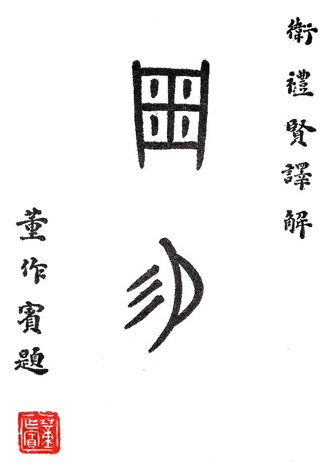
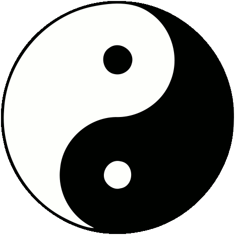

|

|
I Ching
Translation from Chinese
into German by
Richard Wilhelm
Rendered into English by
Cary F. Baynes
1950
|
How to use the I Ching
Everything you need to know to use the I Ching is contained here. Just
below the Index of Hexagrams is a link to "Consulting the Oracle". Click on
that link and look at the three methods: the Yarrow Stalks, the three coins,
and the alternate method with two coins. The methods using the coins are
easiest. Also look at the section on how moving lines are used to give rise
to a new hexagram.
Each turn with the coins or the yarrow stalks will result in a number
(6,7,8,9) which is used to create either the yin or yang line and determine
if it is a moving line, beginning with the first — the bottom line.
Repeat the process to create the next line, placing it above the previous
one(s) until there are six forming the hexagram. Any moving lines can be
marked with an "X" or an "O" or by placing the number 6 or 9 beside it.
Now return to the index table to look up the hexagram's number and click
on the number to go to that section. After reading the first part, the
Judgment and Image, if there are any moving lines go to the sections
pertaining to each of those lines.
Next, if there are any moving lines change them to the opposite yin or yang
line to arrive at the new hexagram. Go to that hexagram and read only the
first part, the Judgment and the Image.
index
Appendix: Consulting the Oracle
Moving lines give rise to a new hexagram
1. Ch'ien / The Creative
above CH'IEN THE CREATIVE, HEAVEN
below CH'IEN THE CREATIVE, HEAVEN
The first hexagram is made up of six unbroken lines.
These unbroken lines stand for the primal power, which is light-giving,
active, strong, and of the spirit. The hexagram is consistently strong in
character, and since it is without weakness, its essence is power or energy.
Its image is heaven. Its energy is represented as unrestricted by any fixed
conditions in space and is therefore conceived of as motion. Time is regarded
as the basis of this motion. Thus the hexagram includes also the power of
time and the power of persisting in time, that is, duration.
The power represented by the hexagram is to be
interpreted in a dual sense in terms of its action on the universe and of its
action on the world of men. In relation to the universe, the hexagram
expresses the strong, creative action of the Deity. In relation to the human
world, it denotes the creative action of the holy man or sage, of the ruler
or leader of men, who through his power awakens and develops their higher
nature.
THE JUDGMENT
THE CREATIVE works sublime success,
Furthering through perseverance.
According to the original meaning, the attributes
[sublimity, potentiality of success, power to further, perseverance] are
paired. When an individual draws this oracle, it means that success will come
to him from the primal depths of the universe and that everything depends
upon his seeking his happiness and that of others in one way only, that is,
by perseverance in what is right.
The specific meanings of the four attributes became the
subject of speculation at an early date. The Chinese word here rendered by
"sublime" means literally "head," "origin,"
"great." This is why Confucius says in explaining it: "Great
indeed is the generating power of the Creative; all beings owe their
beginning to it. This power permeates all heaven." For this attribute
inheres in the other three as well.
The beginning of all things lies still in the beyond in
the form of ideas that have yet to become real. But the Creative furthermore
has power to lend form to these archetypes of ideas. This is indicated in the
word success, and the process is represented by an image from nature:
"The clouds pass and the rain does its work, and all individual beings
flow into their forms."
Applied to the human world, these attributes show the
great man the way to notable success: "Because he sees with great
clarity and cause and effects, he completes the six steps at the right time
and mounts toward heaven on them at the right time, as though on six
dragons." The six steps are the six different positions given in the
hexagram, which are represented later by the dragon symbol. Here it is shown
that the way to success lies in apprehending and giving actuality to the way
of the universe [Tao], which, as a law running through end and beginning,
brings about all phenomena in time. Thus each step attained forthwith becomes
a preparation for the next. Time is no longer a hindrance but the means of
making actual what is potential.
The act of creation having found expression in the two
attributes sublimity and success, the work of conservation is shown to be a
continuous actualization and differentiation of form. This is expressed in
the two terms "furthering" (literally, "creating that which
accords with the nature of a given being") and "persevering"
(literally, "correct and firm"). "The course of the Creative
alters and shapes beings until each attains its true, specific nature, then
it keeps them in conformity with the Great Harmony. Thus does it show itself
to further through perseverance."
In relation to the human sphere, this shows how the
great man brings peace and security to the world through his activity in
creating order: "He towers high above the multitude of beings, and all
lands are united in peace."
Another line of speculation goes still further in
separating the words "sublime," "success,"
"furthering," "perseverance," and parallels them with the
four cardinal virtues in humanity. To sublimity, which, as the fundamental
principle, embraces all the other attributes, it links love. To the attribute
success are linked the morals, which regulate and organize expressions of
love and thereby make them successful. The attribute furthering is correlated
with justice, which creates the conditions in which each receives that which
accords with his being, that which is due him and which constitutes his
happiness. The attribute perseverance is correlated with wisdom, which
discerns the immutable laws of all that happens and can therefore bring about
enduring conditions. These speculations, already broached in the commentary
called Wên Yen , later formed the bridge connecting the philosophy of the
"five stages (elements) of change," as laid down in the Book of
History (Shu Ching) with the philosophy of the Book of Changes, which is
based solely on the polarity of positive and negative principles. In the
course of time this combination of the two systems of thought opened the way
for an increasingly intricate number symbolism.
THE IMAGE
The movement of heaven is full of power.
Thus the superior man makes himself strong and untiring.
Since there is only one heaven, the doubling of the
trigram Ch'ien, of which heaven is the image, indicates the movement of
heaven. One complete revolution of heaven makes a day, and the repetition of
the trigram means that each day is followed by another. This creates the idea
of time. Since it is the same heaven moving with untiring power, there is
also created the idea of duration both in and beyond time, a movement that
never stops nor slackens, just as one day follows another in an unending
course. This duration in time is the image of the power inherent in the
Creative.
With this image as a model, the sage learns how best to
develop himself so that his influence may endure. He must make himself strong
in every way, by consciously casting out all that is inferior and degrading.
Thus he attains that tirelessness which depends upon consciously limiting the
fields of his activity.
THE LINES
Nine at the beginning means:
Hidden dragon. Do not act.
In China the dragon has a meaning altogether different
from that given it in the Western world. The dragon is a symbol of the
electrically charged, dynamic, arousing force that manifests itself in the
thunderstorm. In winter this energy withdraws into the earth; in the early
summer it becomes active again, appearing in the sky as thunder and
lightning. As a result the creative forces on earth begin to stir
again.
Here this creative force is still hidden beneath the
earth and therefore has no effect. In terms of human affairs, this symbolizes
a great man who is still unrecognized. Nonetheless he remains true to
himself. He does not allow himself to be influenced by outward success or
failure, but confident in his strength, he bides his time. Hence it is wise
for the man who consults the oracle and draws this line to wait in the calm
strength of patience. The time will fulfill itself. One need not fear least
strong will should not prevail; the main thing is not to expend one's
powers prematurely in an attempt to obtain by force something for which the
time is not yet ripe.
Nine in the second place means:
Dragon appearing in the field.
It furthers one to see the great man.
Here the effects of the light-giving power begin to
manifest themselves. In terms of human affairs, this means that the great man
makes his appearance in his chosen field of activity. As yet he has no
commanding position but is still with his peers. However, what distinguishes
him form the others is his seriousness of purpose, his unqualified
reliability, and the influence he exerts on his environment with out
conscious effort. Such a man is destined to gain great influence and to set
the world in order. Therefore it is favorable to see him.
Nine in the third place means:
All day long the superior man is creatively active.
At nightfall his mind is still beset with cares.
Danger. No blame.
A sphere of influence opens up for the great man. His
fame begins to spread. The masses flock to him. His inner power is adequate
to the increased outer activity. There are all sorts of things to be done,
and when others are at rest in the evening, plans and anxieties press in upon
him. But danger lurks here at the place of transition from lowliness to the
heights. Many a great man has been ruined because the masses flocked to him
and swept him into their course. Ambition has destroyed his integrity.
However, true greatness is not impaired by temptations. He who remains in
touch with the time that is dawning, and with its demands is prudent enough
to avoid all pitfalls, and remains blameless.
Nine in the fourth place means:
Wavering flight over the depths.
No blame.
A place of transition has been reached, and free choice
can enter in. A twofold possibility is presented to the great man: he can
soar to the heights and play an important part in the world, or he can
withdraw into solitude and develop himself. He can go the way of the hero or
that of the holy sage who seeks seclusion. There is no general law of his
being. If the individual acts consistently and is true to himself, he will
find the way that is appropriate for him. This way is right for him and
without blame.
Nine in the fifth place means:
Flying dragon in the heavens.
It furthers one to see the great man.
Here the great man has attained the sphere of the
heavenly beings. His influence spreads and becomes visible throughout the
whole world. Everyone who sees him may count himself blessed. Confucius says
about this line:
Things that accord in tone vibrate together. Things that
have affinity in their inmost natures seek one another. Water flows to what
is wet, fire turns to what is dry. Clouds (the breath of heaven) follow the
dragon, wind (the breath of earth) follows the tiger. Thus the sage arises,
and all creatures follow him with their eyes. What is born of heaven feels
related to what is above. What is born of earth feels related to what is
below. Each follows its kind.
Nine at the top means:
Arrogant dragon will have cause to repent.
When a man seeks to climb so high that he loses touch
with the rest of mankind, he becomes isolated, and this necessarily leads to
failure. This line warns against titanic aspirations that exceed one's
power. A precipitous fall would follow.
When all the lines are nines, it means:
There appears a flight of dragons without heads.
Good fortune.
When all the lines are nines, it means that the whole
hexagram is in motion and changes into the hexagram K'un, THE
RECEPTIVE (2), whose
character is devotion. The strength of the Creative and the mildness of the
Receptive unite. Strength is indicated by the flight of dragons, mildness by
the fact that their heads are hidden. This means that mildness in action
joined to strength of decision brings good fortune.
index
2. K'un / The Receptive
above K'UN THE RECEPTIVE, EARTH
below K'UN THE RECEPTIVE, EARTH
This hexagram is made up of broken lines only. The
broken lines represents the dark, yielding, receptive primal power of yin.
The attribute of the hexagram is devotion; its image is the earth. It is the
perfect complement of THE CREATIVE — the complement, not the opposite, for
the Receptive does not combat the Creative but completes it. It represents
nature in contrast to spirit, earth in contrast to heaven, space as against
time, the female-maternal as against the male-paternal. However, as applied
to human affairs, the principle of this complementary relationship is found
not only in the relation between man and woman, but also in that between
prince and minister and between father and son. Indeed, even in the
individual this duality appears in the coexistence of the spiritual world and
the world of the senses.
But strictly speaking there is no real dualism here,
because there is a clearly defined hierarchic relationship between the two
principles. In itself of course the Receptive is just as important as the
Creative, but the attribute of devotion defines the place occupied by this
primal power in relation to the Creative. For the Receptive must be activated
and led by the Creative; then it is productive of good. Only when it abandons
this position and tries to stand as an equal side by side with the Creative,
does it become evil. The result then is opposition to and struggle against
the Creative, which is productive of evil to both.
THE JUDGMENT
THE RECEPTIVE brings about sublime success,
Furthering through the perseverance of a mare.
If the superior man undertakes something and tries to lead,
He goes astray;
But if he follows, he finds guidance.
It is favorable to find friends in the west and south,
To forego friends in the east and north.
Quiet perseverance brings good fortune.
The four fundamental aspects of the Creative —
"sublime success, furthering through perseverance" — are also
attributed to the Receptive. Here, however, the perseverance is more closely
defined: it is that of a mare. The Receptive connotes spatial reality in
contrast to the spiritual potentiality of the Creative. The potential becomes
real and the spiritual becomes spatial through a specifically qualifying
definition. Thus the qualification, "of a mare," is here added to
the idea of perseverance. The horse belongs to earth just as the dragon
belongs to heaven. Its tireless roaming over the plains is taken as a symbol
of the vast expanse of the earth. This is the symbol chosen because the mare
combines the strength and swiftness of the horse with the gentleness and
devotion of the cow.
Only because nature in its myriad forms corresponds with
the myriad impulses of the Creative can it make these impulses real.
Nature's richness lies in its power to nourish all living things; its
greatness lies in its power to give them beauty and splendor. Thus it
prospers all that lives. It is the Creative that begets things, but they are
brought to birth by the Receptive. Applied to human affairs, therefore, what
the hexagram indicated is action in conformity with the situation. The person
in question is not in an independent position, but is acting as an assistant.
This means that he must achieve something. It is not his task to try to lead
— that would only make him lose the way — but to let himself be led. If he
knows how to meet fate with an attitude of acceptance, he is sure to find the
right guidance. The superior man lets himself be guided; he does not go ahead
blindly, but learns from the situation what is demanded of him and then
follows this intimation from fate.
Since there is something to be accomplished, we need
friends and helpers in the hour of toil and effort, once the ideas to be
realized are firmly set. The time of toil and effort is indicated by the west
and south, for west and south symbolize the place where the Receptive works
for the Creative, as nature does in summer and autumn. If in that situation
one does not mobilize all one's powers, the work to be accomplished will
not be done. Hence to find friends there means to find guidance. But in
addition to the time of toil and effort, there is also a time of planning,
and for this we need this solitude. The east symbolized the place where a man
receives orders from his master, and the north the place where he reports on
what he has done. At that time he must be alone and objective. In this sacred
hour he must do without companions. So that the purity of the moment may not
be spoiled by fictional hates and favoritism.
THE IMAGE
The earth's condition is receptive devotion.
Thus the superior man who has breadth of character
Carries the outer world.
Just as there is only one heaven, so too there is only
one earth. In the hexagram of heaven the doubling of the trigram implies
duration in time, but in the hexagram of earth the doubling connotes the
solidity and extension in space by virtue of which the earth is able to carry
and preserve all things that live and move upon it. The earth in its devotion
carries all things, good and evil,, without exception. In the same way the
superior man gives to his character breadth, purity, and sustaining power, so
that he is able both to support and to bear with people and
things.
THE LINES
Six at the beginning means:
When there is hoarfrost underfoot,
Solid ice is not far off.
Just as the light-giving power represents life, so the
dark power, the shadowy, represents death. When the first hoarfrost comes in
the autumn, the power of darkness and cold is just at its beginning. After
these first warnings, signs of death will gradually multiply, until, in
obedience to immutable laws, stark winter with its ice is here.
In life it is the same. After certain scarcely
noticeable signs of decay have appeared, they go on increasing until final
dissolution comes. But in life precautions can be taken by heeding the first
signs of decay and checking them in time.
Six in the second place means:
Straight, square, great.
Without purpose,
Yet nothing remains unfurthered.
The symbol of heaven is the circle, and that of earth is
the square. Thus squareness is a primary quality of the earth. On the other
hand, movement in a straight line, as well as magnitude, is a primary quality
of the Creative. But all square things have their origin in a straight line
and into turn form solid bodies. In mathematics, when we discriminate between
lines, planes and solids, we find that rectangular planes result from
straight lines, and cubic magnitudes from rectangular planes. The Receptive
accommodates itself to the qualities of the Creative and makes them its own.
Thus a square develops out of a straight line and a cube out of a square.
This is compliance with the laws of the Creative; nothing is taken away,
nothing added. Therefore the Receptive has no need of a special purpose of
its own, nor of any effort' yet everything turns out as it
should.
Nature creates all beings without erring: this is its
foursquareness. It tolerates all creatures equally: this is its greatness.
Therefore it attains what is right for all without artifice or special
intentions. Man achieves the height of wisdom when all that he does is as
self-evident as what nature does.
Six in the third place means:
Hidden lines.
One is able to remain persevering.
If by chance you are in the service of a king,
Seek not works, but bring to completion.
If a man is free of vanity he is able to conceal his
abilities and keep them from attracting attention too soon; thus he can
mature undisturbed. If conditions demand it, he can also enter public life,
but that too he does with restraint. The wise man gladly leaves fame to
others. He does not seek to have credited to himself things that stand
accomplished, but hopes to release active forces; that is, he completes his
works in such a manner that they may bear fruit for the future.
Six in the fourth place means:
A tied-up sack. No blame, no praise.
The dark element opens when it moves and closes when at
rest. The strictest reticence is indicated here. The time is dangerous ,
because any degree of prominence leads either to the enmity of irresistible
antagonists if one challenges them or to misconceived recognition if one is
complaisant. Therefore a man ought to maintain reserve, be it in solitude or
in the turmoil of the world, for there too he can hide himself so well that
no one knows him.
Six in the fifth place means:
A yellow lower garment brings supreme good
fortune.
Yellow is the color of the earth and of the middle; it
is the symbol of that which is reliable and genuine. The lower garment is
inconspicuously decorated — the symbol of aristocratic reserve. When anyone
is called upon to work in a prominent but not independent position, true
success depends on the utmost discretion. A man's genuineness and
refinement should not reveal themselves directly; they should express
themselves only indirectly as an effect from within.
Six at the top means:
Dragons fight in the meadow.
Their blood is black and yellow.
In the top place the dark element should yield to the
light. If it attempts to maintain a position to which it is not entitled and
to rule instead of serving, it draws down upon itself the anger of the
strong. A struggle ensues in which it is overthrown, with injury, however, to
both sides. The dragon, symbol of heaven, comes to fight the false dragon
that symbolized the inflation of the earth principle. Midnight blue is the
color of heaven; yellow is the color of earth. Therefore, when black and
yellow blood flow, it is a sign that in this unnatural contest both primal
powers suffer injury.
When all the lines are sixes, it means:
Lasting perseverance furthers.
When nothing but sixes appears, the hexagram of THE
RECEPTIVE changes into the hexagram of THE CREATIVE(1). By
holding fast to what is right, it gains the power of enduring. There is indeed
no advance, but neither is there retrogression.
index
3. Chun / Difficulty at the Beginning
above K'AN THE ABYSMAL, WATER
below CHÊN THE AROUSING, THUNDER
The name of the hexagram, Chun, really connotes a blade
of grass pushing against an obstacle as it sprouts out of the earth — hence
the meaning, "difficulty at the beginning." The hexagram indicates
the way in which heaven and earth bring forth individual beings. It is their
first meeting, which is beset with difficulties. The lower trigram Chên is
the Arousing; its motion is upward and its image is thunder. The upper
trigram K'an stands for the Abysmal, the dangerous. Its motion is
downward and its image is rain. The situation points to teeming, chaotic
profusion; thunder and rain fill the air. But the chaos clears up. While the
Abysmal sinks, the upward movement eventually passes beyond the danger. A
thunderstorm brings release from tension, and all things breathe freely
again.
THE JUDGMENT
DIFFICULTY AT THE BEGINNING works supreme success,
Furthering through perseverance.
Nothing should be undertaken.
It furthers one to appoint helpers.
Times of growth are beset with difficulties. They
resemble a first birth. But these difficulties arise from the very profusion
of all that is struggling to attain form . Everything is in motion: therefore
if one perseveres there is a prospect of great success, in spite of the
existing danger. When it is a man's fate to undertake such new
beginnings, everything is still unformed, dark. Hence he must hold back,
because any premature move might bring disaster. Likewise, it is very
important not to remain alone; in order to overcome the chaos he needs
helpers. This is not to say, however, that he himself should look on
passively at what is happening. He must lend his hand and participate with
inspiration and guidance.
THE IMAGE
Clouds and thunder:
The image of DIFFICULTY AT THE BEGINNING.
Thus the superior man
Brings order out of confusion.
Clouds and thunder are represented by definite
decorative lines; this means that in the chaos of difficulty at the
beginning, order is already implicit. So too the superior man has to arrange
and organize the inchoate profusion of such times of beginning, just as one
sorts out silk threads from a knotted tangle and binds them into skeins. In
order to find one's place in the infinity of being, one must be able both
to separate and to unite.
THE LINES
Nine at the beginning means:
Hesitation and hindrance.
It furthers one to remain persevering.
It furthers one to appoint helpers.
If a person encounters a hindrance at the beginning of
an enterprise, he must not try to force advance but must pause and take
thought. However, nothing should put him off his course; he must persevere
and constantly keep the goal in sight. It is important to seek out the right
assistants, but he can find them only if he avoids arrogance and associated
with his fellows in a spirit of humility. Only then will he attract those
with whose help he can combat the difficulties.
Six in the second place means:
Difficulties pile up.
Horse and wagon part.
He is not a robber;
He wants to woo when the time comes.
The maiden is chaste,
She does not pledge herself.
Ten years — then she pledges herself.
We find ourselves beset by difficulties and hindrances.
Suddenly there is a turn of affairs, as if someone were coming up with a
horse and wagon and unhitching them. This event comes so unexpectedly that we
assume the newcomer to be a robber. Gradually it becomes clear that he has no
evil intentions but seeks to be friendly and to offer help. But this offer is
not to be accepted, because it does not come from the right quarter. We must
wait until the time is fulfilled; ten years is a fulfilled cycle of time.
Then normal conditions return of themselves, and we can join forces with the
friend intended for us.
Using the image of a betrothed girl who remains true to
her lover in face of grave conflicts, the hexagram gives counsel for a
special situation. When in times of difficulty a hindrance is encountered and
unexpected relief is offered from a source unrelated to us, we must be
careful and not take upon ourselves any obligations entailed by such help;
otherwise our freedom of decision is impaired. If we bide our time, things
will quiet down again, and we shall attain what we have hoped for.
Six in the third place means:
Whoever hunts deer without the forester
Only loses his way in the forest.
The superior man understands the signs of the time
And prefers to desist.
To go on brings humiliation.
If a man tries to hunt in a strange forest and has no
guide, he loses his way. When he finds himself in difficulties he must not
try to steal out of them unthinkingly and without guidance. Fate cannot be
duped; premature effort, without the necessary guidance, ends in failure and
disgrace. Therefore the superior man, discerning the seeds of coming events,
prefers to renounce a wish rather than to provoke failure and humiliation by
trying to force its fulfillment.
Six in the fourth place means:
Horse and wagon part.
Strive for union.
To go brings good fortune.
Everything acts to further.
We are in a situation in which it is our duty to act,
but we lack sufficient power. However, an opportunity to make connections
offers itself. It must be seized. Neither false pride nor false reserve
should deter us. Bringing oneself to take the first step, even when it
involves a certain degree of self-abnegation, is a sign of inner clarity. To
accept help in a difficult situation is not a disgrace. If the right helper
is found, all goes well.
Nine in the fifth place means:
Difficulties in blessing.
A little perseverance brings good fortune.
Great perseverance brings misfortune.
An individual is in a position in which he cannot so
express his good intentions that they will actually take shape and be
understood. Other people interpose and distort everything he does. He should
then be cautious and proceed step by step. He must not try to force the
consummation of a great undertaking, because success is possible only when
general confidence already prevails. It is only through faithful and
conscientious work, unobtrusively carried on, that the situation gradually
clears up and the hindrance disappears.
Six at the top means:
Horse and wagon part.
Bloody tears flow.
The difficulties at the beginning are too great for some
persons. They get stuck and never find their way out; they fold their hands
and give up the struggle. Such resignation is the saddest of all things.
Therefore Confucius says of this line: "Bloody tears flow: one should
not persist in this."
index
4. Mêng / Youthful Folly
above KÊN KEEPING STILL, MOUNTAIN
below K'AN THE ABYSMAL, WATER
In this hexagram we are reminded of youth and folly in
two different ways. The image of the upper trigram, Kên, is the mountain,
that of the lower, K'an, is water; the spring rising at the foot of the
mountain is the image of inexperienced youth. Keeping still is the attribute
of the upper trigram; that of the lower is the abyss, danger. Stopping in
perplexity on the brink of a dangerous abyss is a symbol of the folly of
youth. However, the two trigrams also show the way of overcoming the follies
of youth. Water is something that of necessity flows on. When the spring
gushes forth, it does not know at first where it will go. But its steady flow
fills up the deep place blocking its progress, and success is
attained.
THE JUDGMENT
YOUTHFUL FOLLY has success.
It is not I who seek the young fool;
The young fool seeks me.
At the first oracle I inform him.
If he asks two or three times, it is importunity.
If he importunes, I give him no information.
Perseverance furthers.
In the time of youth, folly is not an evil. One may
succeed in spite of it, provided one finds an experienced teacher and has the
right attitude toward him. This means, first of all, that the youth himself
must be conscious of his lack of experience and must seek out the teacher.
Without this modesty and this interest there is no guarantee that he has the
necessary receptivity, which should express itself in respectful acceptance
of the teacher. This is the reason why the teacher must wait to be sought out
instead of offering himself. Only thus can the instruction take place at the
right time and in the right way.
A teacher's answer to the question of a pupil ought
to be clear and definite like that expected from an oracle; thereupon it
ought to be accepted as a key for resolution of doubts and a basis for
decision. If mistrustful or unintelligent questioning is kept up, it serves
only to annoy the teacher. He does well to ignore it in silence, just as the
oracle gives one answer only and refuses to be tempted by questions implying
doubt.
Given addition a perseverance that never slackens until
the points are mastered one by one, real success is sure to follow. Thus the
hexagram counsels the teacher as well as the pupil.
THE IMAGE
A spring wells up at the foot of the mountain:
The image of YOUTH.
Thus the superior man fosters his character
By thoroughness in all that he does.
A spring succeeds in flowing on and escapes stagnation
by filling up all the hollow places in its path. In the same way character is
developed by thoroughness that skips nothing but, like water, gradually and
steadily fills up all gaps and so flows onward.
THE LINES
Six at the beginning means:
To make a fool develop
It furthers one to apply discipline.
The fetters should be removed.
To go on in this way bring humiliation.
Law is the beginning of education. Youth in its
inexperience is inclined at first to take everything carelessly and
playfully. It must be shown the seriousness of life. A certain measure of
taking oneself in hand, brought about by strict discipline, is a good thing.
He who plays with life never amounts to anything. However, discipline should
not degenerate into drill. Continuous drill has a humiliating effect and
cripples a man's powers.
Nine in the second place means:
To bear with fools in kindliness brings good
fortune.
To know how to take women
Brings good fortune.
The son is capable of taking charge of the household.
These lines picture a man who has no external power, but
who has enough strength of mind to bear his burden of responsibility. He has
the inner superiority and that enable him to tolerate with kindliness the
shortcomings of human folly. The same attitude is owed to women as the weaker
sex. One must understand them and give them recognition in a spirit of
chivalrous consideration. Only this combination of inner strength with outer
reserve enables one to take on the responsibility of directing a larger
social body with real success.
Six in the third place means:
Take not a maiden who, when she sees a man of
bronze,
Loses possession of herself.
Nothing furthers.
A weak, inexperienced man, struggling to rise, easily
loses his own individuality when he slavishly imitates a strong personality
of higher station. He is like a girl throwing herself away when she meets a
strong man. Such a servile approach should not be encouraged, because it is
bad both for the youth and the teacher. A girl owes it to her dignity to wait
until she is wooed. In both cases it is undignified to offer oneself, and no
good comes of accepting such an offer.
Six in the fourth place means:
Entangled folly bring humiliation.
For youthful folly it is the most hopeless thing to
entangle itself in empty imaginings. The more obstinately it clings to such
unreal fantasies, the more certainly will humiliation overtake it.
Often the teacher, when confronted with such entangled
folly, has no other course but to leave the fool to himself for a time, not
sparing him the humiliation that results. This is frequently the only means
of rescue.
Six in the fifth place means:
Childlike folly brings good fortune.
An inexperienced person who seeks instruction in a
childlike and unassuming way is on the right path, for the man devoid of
arrogance who subordinated himself to his teacher will certainly be
helped.
Nine at the top means:
In punishing folly
It does not further one
To commit transgressions.
The only thing that furthers
Is to prevent transgressions.
Sometimes an incorrigible fool must be punished. He who
will not heed will be made to feel. This punishment is quite different from a
preliminary shaking up. But the penalty should not be imposed in anger; it
must be restricted to an objective guarding against unjustified excesses.
Punishment is never an end in itself but serves merely to restore
order.
This applies not only in regard to education but also in
regard to the measures taken by a government against a populace guilty of
transgressions. Governmental interference should always be merely preventive
and should have as its sole aim the establishment of public security and
peace.
index
5. Hsü / Waiting (Nourishment)
above K'AN THE ABYSMAL, WATER
below CH'IEN THE CREATIVE, HEAVEN
All beings have need of nourishment from above. But the
gift of food comes in its own time, and for this one must wait. This hexagram
shows the clouds in the heavens, giving rain to refresh all that grows and to
provide mankind with food and drink. The rain will come in its own time. We
cannot make it come; we have to wait for it. The idea of waiting is further
suggested by the attributes of the two trigrams — strength within, danger in
from. Strength in the face of danger does not plunge ahead but bides its
time, whereas weakness in the face of danger grows agitated and has not the
patience to wait.
THE JUDGMENT
WAITING. If you are sincere,
You have light and success.
Perseverance brings good fortune.
It furthers one to cross the great water.
Waiting is not mere empty hoping. It has the inner
certainty of reaching the goal. Such certainty alone gives that light which
leads to success. This leads to the perseverance that brings good fortune and
bestows power to cross the great water.
One is faced with a danger that has to be overcome.
Weakness and impatience can do nothing. Only a strong man can stand up to his
fate, for his inner security enables him to endure to the end. This strength
shows itself in uncompromising truthfulness [with himself]. It is only when
we have the courage to face things exactly as they are, without any sort of
self-deception or illusion, that a light will develop out of events, by which
the path to success may be recognized. This recognition must be followed by
resolute and persevering action. For only the man who goes to meet his fate
resolutely is equipped to deal with it adequately. Then he will be able to
cross the great water — that is to say, he will be capable of making the
necessary decision and of surmounting the danger.
THE IMAGE
Clouds rise up to heaven:
The image of WAITING.
Thus the superior man eats and drinks,
Is joyous and of good cheer.
When clouds rise in the sky, it is a sign that it will
rain. There is nothing to do but to wait until after the rain falls. It is
the same in life when destiny is at work. We should not worry and seek to
shape the future by interfering in things before the time is ripe. We should
quietly fortify the body with food and drink and the mind with gladness and
good cheer. Fate comes when it will, and thus we are ready.
THE LINES
Nine at the beginning means:
Waiting in the meadow.
It furthers one to abide in what endures.
No blame.
The danger is not yet close. One is still waiting on the
open plain. Conditions are still simple, yet there is a feeling of something
impending. One must continue to lead a regular life as long as possible. Only
in this way does one guard against a premature waste of strength, keep free
of blame and error that would become a source of weakness later
on.
Nine in the second place means:
Waiting on the sand.
There is some gossip.
The end brings good fortune.
The danger gradually comes closer. Sand is near the bank
of the river, and the water means danger. Disagreements crop up. General
unrest can easily develop in such times, and we lay the blame on one another.
He who stays calm will succeed in making things go well in the end. Slander
will be silenced if we do not gratify it with injured retorts.
Nine in the third place means:
Waiting in the mud
Brings about the arrival of the enemy.
Mud is no place for waiting, since it is already being
washed by the water of the stream. Instead of having gathered strength to
cross the stream at one try, one has made a premature start that has got him
no farther than the muddy bank. Such an unfavorable position invites enemies
from without, who naturally take advantage of it. Caution and a sense of the
seriousness of the situation are all that can keep one from
injury.
Six in the fourth place means:
Waiting in blood.
Get out of the pit.
The situation is extremely dangerous. IT is of utmost
gravity now — a matter of life and death. Bloodshed seems imminent. There is
no going forward or backward; we are cut off as if in a pit. Now we must
simply stand fast and let fate take its course. This composure, which keeps
us from aggravating the trouble by anything we might do, is the only way of
getting out of the dangerous pit.
Nine in the fifth place means:
Waiting at meat and drink.
Perseverance brings good fortune.
Even in the midst of danger there come intervals of
peace when things go relatively well. If we possess enough inner strength, we
shall take advantage of these intervals to fortify ourselves for renewed
struggle. We must know how to enjoy the moment without being deflected from
the goal, for perseverance is needed to remain victorious.
This is true in public life as well; it is not possible
to achieve everything all at once. The height of wisdom is to allow people
enough recreation to quicken pleasure in their work until the task is
completed. Herein lies the secret of the whole hexagram. It differs from Chin
OBSTRUCTION (39), in the fact that in this instance, while
waiting, we are sure of our cause and therefore do not lose the serenity born
of inner cheerfulness.
Six at the top means:
One falls into the pit.
Three uninvited guests arrive.
Honor them, and in the end there will be good fortune.
The waiting is over; the danger can no longer be
averted. One falls into the pit and must yield to the inevitable. Everything
seems to have been in vain. But precisely in this extremity things take an
unforeseen turn. Without a move on one's own part, there is outside
intervention. At first one cannot be sure of its meaning: is it rescue or is
it destruction? A person in this situation must keep his mind alert and not
withdraw into himself with a sulky gesture of refusal, but must greet the new
turn with respect. Thus he ultimately escapes the danger, and all goes well.
Even happy turns of fortune often come in a form that at first seems strange
to us.
index
6. Sung / Conflict
above CH'IEN THE CREATIVE, HEAVEN
below K'AN THE ABYSMAL, WATER
The upper trigram, whose image is heaven, has an upward
movement; the lower trigram, water, in accordance with its nature tends
downward. Thus the two halves move away from each other, giving rise to the
idea of conflict.
The attribute of the Creative is strength, that of the
Abysmal is danger, guile. Where cunning has force before it, there is
conflict.
A third indication of conflict, in terms of character,
is presented by the combination of deep cunning within and fixed
determination outwardly. A person of this character will certainly be
quarrelsome.
THE JUDGMENT
CONFLICT. You are sincere
And are being obstructed.
A cautious halt halfway brings good fortune.
Going through to the end brings misfortune.
It furthers one to see the great man.
It does not further one to cross the great water.
Conflict develops when one feels himself to be in the
right and runs into opposition. If one is not convinced of being in the
right, opposition leads to craftiness or high-handed encroachment but not to
open conflict.
If a man is entangled in a conflict, his only salvation
lies in being so clear-headed and inwardly strong that he is always ready to
come to terms by meeting the opponent halfway. To carry one the conflict to
the bitter end has evil effects even when one is the right, because the
enmity is then perpetuated. It is important to see the great man, that is, an
impartial man whose authority is great enough to terminate the conflict
amicably or assure a just decision. In times of strife, crossing the great
water is to be avoided, that is, dangerous enterprises are not to be begun,
because in order to be successful they require concerted unity of focus.
Conflict within weakens the power to conquer danger without.
THE IMAGE
Heaven and water go their opposite ways:
The image of CONFLICT.
Thus in all his transactions the superior man
Carefully considers the beginning.
The image indicates that the causes of conflict are
latent in the opposing tendencies of the two trig rams. Once these opposing
tendencies appear, conflict is inevitable. To avoid it, therefore, everything
must be taken carefully into consideration in the very beginning. If rights
and duties are exactly defined, or if, in a group, the spiritual trends of
the individuals harmonize, the cause of conflict is removed in
advance.
THE LINES
Six at the beginning means:
If one does not perpetuate the affair,
There is a little gossip.
In the end, good fortune comes.
While a conflict is in the incipient stage, the best
thing To do is to drop the issue. Especially when the adversary is stronger,
it is not advisable to risk pushing the conflict to a decision. It may come
to a slight dispute, but in the end all goes well.
Nine in the second place means:
One cannot engage in conflict;
One returns home, gives way.
The people of his town,
Three hundred households,
Remain free of guilt.
In a struggle with an enemy of superior strength,
retreat is no disgrace. Timely withdrawal prevents bad consequences. If, out
of a false sense of honor, a man allowed himself to be tempted into an
unequal conflict, he would be drawing down disaster upon himself. In such a
case a wise and conciliatory attitude benefits the whole community, which
will then not be drawn into the conflict.
Six in the third place means:
To nourish oneself on ancient virtue induces
perseverance.
Danger. In the end, good fortune comes.
If by chance you are in the service of a king,
Seek not works.
This is a warning of the danger that goes with an
expansive disposition. Only that which has been honestly acquired through
merit remains a permanent possession. It can happen that such a possession
may be contested, but since it is really one's own, one cannot be robbed
of it. Whatever a man possesses through the strength of his own nature cannot
be lost. If one enters the service of a superior, one can avoid conflict only
by not seeking works for the sake of prestige. It is enough if the work is
done: let the honor go to the other.
Nine in the fourth place means:
One cannot engage in conflict.
One turns back and submits to fate,
Changes one's attitude,
And finds peace in perseverance.
Good fortune.
This refers to a person whose inner attitude at first
lacks peace. He does not feel content with his situation and would like to
improve it through conflict. In contrast to the situation of the nine in the
second place, he is dealing with a weaker opponent and might therefore
succeed. But he cannot carry on the fight, because, since right is not on his
side, he cannot justify the conflict to his conscience. Therefore he turns
back and accepts his fate. He changes his mind and finds lasting peace in
being at one with eternal law. This brings good fortune.
Nine in the fifth place means:
To contend before him
Brings supreme good fortune.
This refers to an arbiter in a conflict who is powerful
and just, and strong enough to lend weight to the right side. A dispute can
be turned over to him with confidence. If one is in the right, one attains
great good fortune.
Nine at the top means:
Even if by chance a leather belt is bestowed on
one,
By the end of a morning
It will have been snatched away three times.
Here we have someone who has carried a conflict to the
bitter end and has triumphed. He is granted a decoration, but his happiness
does not last. He is attacked again and again, and the result is conflict
without end.
index
7. Shih / The Army
above K'UN THE RECEPTIVE, EARTH
below K'AN THE ABYSMAL, WATER
This hexagram is made up of the trigrams K'an,
water, and K'un, earth, and thus it symbolizes the ground water stored up
in the earth. In the same way military strength is stored up in the mass of
the people — invisible in times of peace but always ready for use as a source
of power. The attributes of the two trig rams are danger inside and obedience
must prevail outside.
Of the individual lines, the one that controls the
hexagram is the strong nine in the second place, to which the other lines,
all yielding, are subordinate. This line indicates a commander, because it
stands in the middle of one of the two trigrams. But since it is in the lower
rather than the upper trigram, it represents not the ruler but the efficient
general, who maintains obedience in the army by his authority.
THE JUDGMENT
THE ARMY. The army needs perseverance
And a strong man.
Good fortune without blame.
An army is a mass that needs organization in order to
become a fighting force. Without strict discipline nothing can be
accomplished, but this discipline must not be achieved by force. It requires
a strong man who captures the hearts of the people and awakens their
enthusiasm. In order that he may develop his abilities he needs the complete
confidence of his ruler, who must entrust him with full responsibility as
long as the war lasts. But war is always a dangerous thing and brings with it
destruction and devastation. Therefore it should not be resorted to rashly
but, like a poisonous drug, should be used as a last recourse.
The justifying cause of a war, and clear and
intelligible war aims, ought to be explained to the people by an experienced
leader. Unless there is a quite definite war aim to which the people can
consciously pledge themselves, the unity and strength of conviction that lead
to victory will not be forthcoming. But the leader must also look to it that
the passion of war and the delirium of victory do not give rise to unjust
acts that will not meet with general approval. If justice and perseverance
are the basis of action, all goes well.
THE IMAGE
In the middle of the earth is water:
The image of THE ARMY.
Thus the superior man increases his masses
By generosity toward the people.
Ground water is invisibly present within the earth. In
the same way the military power of a people is invisibly present in the
masses. When danger threatens, every peasant becomes present in the masses.
When danger threatens, every peasant becomes a soldier; when the war ends, he
goes back to his plow. He who is generous toward the people wins their love,
and a people living under a mild rule becomes strong and powerful. Only a
people economically strong can be important in military power. Such power
must therefore be cultivated by improving the economic condition of the
people and by humane government. Only when there is this invisible bond
between government and people, so that the people are sheltered by their
government as ground water is sheltered by the earth, is it possible to wage
a victorious war.
THE LINES
Six at the beginning means:
An army must set forth in proper order.
If the order is not good, misfortune threatens.
At the beginning of a military enterprise, order is
imperative. A just and valid cause must exist, and the obedience and
coordination of the troops must be well organized, otherwise the result is
inevitably failure.
Nine in the second place means:
In the midst of the army.
Good fortune. No blame.
The king bestows a triple decoration.
The leader should be in the midst of his army, in touch
with it, sharing good and bad with the masses he leads. This alone makes him
equal to the heavy demands made upon him. He needs also the recognition of
the ruler. The decorations he receives are justified, because there is no
question of personal preferment here: the whole army, whose center he is, is
honored in his person.
Six in the third place means:
Perchance the army carries corpses in the wagon.
Misfortune.
Here we have a choice of two explanations. One points to
defeat because someone other than the chosen leader interferes with the
command; the other is similar in its general meaning, but the expression,
"carries corpses in the wagon," is interpreted differently. At
burials and at sacrifices to the dead it was customary in China for the
deceased to whom the sacrifice was made to be represented by a boy of the
family, who sat in the dead man's place and was honored as his
representative. On the basis of this custom the text is interpreted as
meaning that a "corpse boy" is sitting in the wagon, or, in other
words, that authority is not being exercised by the proper leaders but has
been usurped by others. Perhaps the whole difficulty clears up if it is
inferred that there has been an error in copying. The character fan, meaning
"all," may have been misread as shih, which means
"corpse." Allowing for this error, the meaning would be that if the
multitude assumes leadership of the army (rides in the wagon), misfortune
will ensue.
Six in the fourth place means:
The army retreats. No blame.
In the face of a superior enemy, with whom it would be
hopeless to engage in battle, an orderly retreat is the only correct
procedure, because it will save the army from defeat and disintegration. It
is by no means a sign of courage or strength to insist upon engaging in a
hopeless struggle regardless of circumstances.
Six in the fifth place means:
There is game in the field.
It furthers one to catch it.
Without blame.
Let the eldest lead the army.
The younger transports corpses;
Then perseverance brings misfortune.
Game is in the field — it has left its usual haunts in
the forest and is devastating the fields. This points to an enemy invasion.
Energetic combat and punishment are here thoroughly justified, but they must
not degenerate into a wild melee in which everyone fends for himself. Despite
the greatest degree of perseverance and bravery, this would lead to
misfortune. The army must be directed by an experienced leader. It is a
matter of waging war, not of permitting the mob to slaughter all who fall
into their hands; if they do, defeat will be the result, and despite all
perseverance there is danger of misfortune.
Six at the top means:
The great prince issues commands,
Founds states, vests families with fiefs.
Inferior people should not be employed.
The war has ended successfully, victory is won, and the
king divided estates and fiefs among his faithful vassals. But it is
important that inferior people should not come into power. If they have
helped, let them be paid off with money, but they should not be awarded lands
or the privileges of rulers, lest power be abused.
index
8. Pi / Holding Together [union]
above K'AN THE ABYSMAL, WATER
below K'UN THE RECEPTIVE, EARTH
The waters on the surface of the earth flow together
wherever they can, as for example in the ocean, where all the rivers come
together. Symbolically this connotes holding together and the laws that
regulate it. The same idea is suggested by the fact that all the lines of the
hexagram except the fifth, the place of the ruler, are yielding. The yielding
lines hold together because they are influenced by a man of strong will in
the leading position, a man who is their center of union. Moreover, this
strong and guiding personality in turn holds together with the others,
finding in them the complement of his own nature.
THE JUDGMENT
HOLDING TOGETHER brings good fortune.
Inquire of the oracle once again
Whether you possess sublimity, constancy, and perseverance;
Then there is no blame.
Those who are uncertain gradually join.
Whoever come too late
Meets with misfortune.
What is required is that we unite with others, in order
that all may complement and aid one another through holding together. But
such holding together calls for a central figure around whom other persons
may unite. To become a center of influence holding people together is a grave
matter and fraught with great responsibility. It requires greatness of
spirit, consistency, and strength. Therefore let him who wishes to gather
others about him ask himself whether he is equal to the undertaking, for
anyone attempting the task without a real calling for it only makes confusion
worse than if no union at all had taken place.
But when there is a real rallying point, those who at
first are hesitant or uncertain gradually come in of their own accord.
Late-comers must suffer the consequences, for in holding together the
question of the right time is also important. Relationships are formed and
firmly established according to definite inner laws. Common experiences
strengthen these ties, and he who comes too late to share in these basic
experiences must suffer for it if, as a straggler, he finds the door
locked.
If a man has recognized the necessity for union and does
not feel strong enough to function as the center, it is his duty to become a
member of some other organic fellowship.
THE IMAGE
On the earth is water:
The image of HOLDING TOGETHER.
Thus the kings of antiquity
Bestowed the different states as fiefs
And cultivated friendly relations
With the feudal lords.
Water fills up all the empty places on the earth and
clings fast to it. The social organization of ancient China was based on this
principle of the holding together of dependents and rulers. Water flows to
unite with water, because all parts of it are subject to the same laws. So
too should human society hold together through a community of interests that
allows each individual to feel himself a member of a whole. The central power
of a social organization must see to it that every member finds that his true
interest lies in holding together with it, as was the case in the paternal
relationship between king and vassals in ancient China.
THE LINES
Six at the beginning means:
Hold to him in truth and loyalty;
This is without blame.
Truth, like a full earthen bowl"
Thus in the end
Good fortune comes from without.
Fundamental sincerity is the only proper basis for
forming relationships. This attitude, symbolized by a full earthen bowl, in
which the content is everything and the empty form nothing, shows itself not
in clever words but through the strength of what lies within the speaker.
This strength is so great that it has power to attract good fortune to itself
from without.
Six in the second place means:
Hold to him inwardly.
Perseverance brings good fortune.
If a person responds perseveringly and in the right way
to the behests from above that summon him to action, his relations with
others are intrinsic and he does not lose himself. But if a man seeks
association with others as if he were an obsequious office hunter, he throws
himself away. He does not follow the path of the superior man, who never
loses his dignity.
Six in the third place means:
You hold together with the wrong people.
We are often among people who do not belong to our own
sphere. In that case we must beware of being drawn into false intimacy
through force of habit. Needless to say, this would have evil consequences.
Maintaining sociability without intimacy is the only right attitude toward
people, because otherwise we should not be free to enter into relationship
with people of our own kind later on.
Six in the fourth place means:
Hold to him outwardly also.
Perseverance brings good fortune.
Here the relations with a man who is the center of union
are well established. Then we may, and indeed we should, show our attachment
openly. But we must remain constant and not allow ourselves to be led
astray.
Nine in the fifth place means:
Manifestation of holding together.
In the hunt the king uses beaters on three sides only
And forgoes game that runs off in front.
The citizens need no warning.
Good fortune.
In the royal hunts of ancient China it was customary to
drive up the game from three sides, but on the fourth the animals had a
chance to run off. If they failed to do this they had to pass through a gate
behind which the king stood ready to shoot. Only animals that entered here
were shot; those that ran off in front were permitted to escape. This custom
accorded with a kingly attitude; the royal hunter did not wish to turn the
chase into a slaughter, but held that the kill should consist only of those
animals which had so to speak voluntarily exposed themselves.
There is depicted here a ruler, or influential man, to
whom people are attracted. Those who come to him he accepts, those who do not
come are allowed to go their own way. He invited none, flatters none —
all come of their own free will. In this way there develops a voluntary
dependence among those who hold him. They do not have to be constantly on
their guard but may express their opinions openly. Police measures are not
necessary, and they cleave to their ruler of their own volition. The same
principle of freedom is valid for life in general. We should not woo favor
from people. If a man cultivates within himself the purity and the strength
that are necessary for one who is the center of a fellowship, those who are
meant for him come of their own accord.
Six at the top means:
He finds no head for holding together.
Misfortune.
The head is the beginning. If the beginning is not
right, there is no hope of a right ending. If we have missed the right moment
for union and go on hesitating to give complete and full devotion, we shall
regret the error when it is too late.
index
9. Hsiao Ch'u / The Taming Power of the Small
above SUN THE GENTLE, WIND
below CH'IEN THE CREATIVE, HEAVEN
This hexagram means the force of the small — the power
of the shadowy — that restrains, tames, impedes. A weak line in the fourth
place, that of the minister, holds the five strong lines in check. In the
Image it is the wind blowing across the sky. The wind restrains the clouds,
the rising breath of the Creative, and makes them grow dense, but as yet is
not strong enough to turn them to rain. The hexagram presents a configuration
of circumstances in which a strong element is temporarily held in leash by a
weak element. It is only through gentleness that this can have a successful
outcome.
THE JUDGMENT
THE TAMING POWER OF THE SMALL
Has success.
Dense clouds, no rain from our western region.
This image refers to the state of affairs in China at
the time when King Wên, who came originally from the west, was in the east at
the court of the reigning tyrant Chou Hsin. The moment for action on a large
scale had not yet arrived. King Wên could only keep the tyrant somewhat in
check by friendly persuasion. Hence the image of many clouds, promising
moisture and blessing to the land, although as yet no rain falls. The
situation is not unfavorable; there is a prospect of ultimate success, but
there are still obstacles in the way, and we can merely take preparatory
measures. Only through the small means of friendly persuasion can we exert
any influence. The time has not yet come for sweeping measures. However, we
may be able, to a limited extent, to act as a restraining and subduing
influence. To carry out our purpose we need firm determination within and
gentleness and adaptability in external relations.
THE IMAGE
The wind drives across heaven:
The image of THE TAMING POWER OF THE SMALL.
Thus the superior man
Refines the outward aspect of his nature.
The wind can indeed drive the clouds together in the
sky; yet, being nothing but air, without solid body, it does not produce
great or lasting effects. So also an individual, in times when he can produce
no great effect in the outer world, can do nothing except refine the
expression of his nature in small ways.
THE LINES
Nine at the beginning means:
Return to the way.
How could there be blame in this?
Good fortune.
It lies in the nature of a strong man to press forward.
In so doing he encounters obstructions. Therefore he returns to the way
suited to his situation, where he is free to advance or to retreat. In the
nature of things this will bring good fortune, for it is wise and reasonable
not to try to obtain anything by force.
Nine in the second place means:
He allows himself to be drawn into returning.
Good fortune.
One would like to press forward, but before going
farther one sees from the example of others like oneself that this way is
blocked. In such a case, if the effort to push forward is not in harmony with
the time, a reasonable and resolute man will not expose himself to a personal
rebuff, but will retreat with others of like mind. This brings good fortune,
because he does not needlessly jeopardize himself.
Nine in the third place means:
The spokes burst out of the wagon wheels.
Man and wife roll their eyes.
Here an attempt is made to press forward forcibly, in
the consciousness that the obstructing power is slight. But since, under the
circumstances, power actually lies with the weak, this sudden offensive is
doomed to failure. External conditions hinder the advance, just as loss of
the wheel spokes stops the progress of a wagon. We do not yet heed this hint
form fate, hence there are annoying arguments like those of a married couple.
Naturally this is not a favorable state of thing, for though the situation
may enable the weaker side to hold its ground, the difficulties are too
numerous to permit of a happy result. In consequence even the strong man
cannot so use his power as to exert the right influence on those around him.
He experiences a rebuff where he expected an easy victory, and he thus
compromises his dignity.
Six in the fourth place means:
If you are sincere, blood vanishes and fear gives
way.
No blame.
If one is in the difficult and responsible position of
counselor to a powerful man, on should restrain him in such a way that the
threat of actual bloodshed may arise. Nonetheless, the power of disinterested
truth is greater than all theses obstacles. It carries such weight that the
end is achieved, and all danger of bloodshed and all fear
disappear.
Nine in the fifth place means:
If you are sincere and loyally attached,
You are rich in your neighbor.
Loyalty leads to firm ties because it means that each
partner complements the other. In the weaker person loyalty consists in
devotion, in the stronger it consists in trustworthiness. This relation of
mutual reinforcement leads to a true wealth that is all the more apparent
because it is not selfishly hoarded but is shared with friends. Pleasure
shared is pleasure doubled.
Nine at the top means:
The rain comes, there is rest.
This is due to the lasting effect of character.
Perseverance brings the woman into danger.
The moon is nearly full.
If the superior man persists,
Misfortune comes.
Success is at hand. The wind has driven up the rain. A
fixed standpoint has been reach. This has come about through the cumulation
of small effects produced by reverence for a superior character. But a
success thus secured bit by bit calls for great caution. It would be a
dangerous illusion for anyone to think he could presume upon it. The female
principle, the weak element that has won the victory, should never persist in
vaunting it — that would lead to danger. The dark power in the moon is
strongest when the moon is almost full. When it is full and directly opposite
the sun, its waning is inevitable. Under such circumstances one must be
content with what has been achieved. To advance any further, before the
appropriate time has come, would lead to misfortune.
index
10. Lü / Treading [conduct]
above CH'IEN THE CREATIVE, HEAVEN
 below TUI THE JOYOUS, LAKE
below TUI THE JOYOUS, LAKE
The name of the hexagram means on the one hand the right
way of conducting oneself. Heaven, the father, is above, and the lake, the
youngest daughter, is below. This shows the difference between high and low,
upon which composure correct social conduct, depends. On the other hand the
word for the name of the hexagram, TREADING, means literally treading upon
something. The small and cheerful [Tui] treads upon the large and strong
[Ch'ien]. The direction of movement of the two primary trigrams is
upward. The fact that the strong treads on the weak is not mentioned in the
Book of Changes, because it is taken for granted. For the weak to take a
stand against the strong is not dangerous here, because it happened in good
humor [Tui] and without presumption, so that the strong man is not irritated
but takes it all in good part.
THE JUDGMENT
TREADING. Treading upon the tail of the tiger.
It does not bite the man. Success.
The situation is really difficult. That which is
strongest and that which is weakest are close together. The weak follows
behind the strong and worries it. The strong, however, acquiesces and does
not hurt the weak, because the contact is in good humor and
harmless.
In terms of a human situation, one is handling wild,
intractable people. In such a case one's purpose will be achieved if one
behaves with decorum. Pleasant manners succeed even with irritable
people.
THE IMAGE
Heaven above, the lake below:
The image of TREADING.
Thus the superior man discriminates between high and low,
And thereby fortifies the thinking of the people.
Heaven and the lake show a difference of elevation that
inheres in the natures of the two, hence no envy arises. Among mankind also
there are necessarily differences of elevation; it is impossible to bring
about universal equality. But it is important that differences in social rank
should not be arbitrary and unjust, for if this occurs, envy and class
struggle are the inevitable consequences. If, on the other hand, external
differences in rank correspond with differences in inner worth, and if inner
worth forms the criterion of external rank, people acquiesce and order reigns
in society.
THE LINES
Nine at the beginning means:
Simple conduct. Progress without blame.
The situation is one in which we are still not bound by
any obligations of social intercourse. If our conduct is simple, we remain
free of them We can quietly follow our predilections as long as we are
content and make not demands on people.
The meaning of the hexagram is not standstill but
progress. A man finds himself in an altogether inferior position at the
start. However, he has the inner strength that guarantees progress. If he can
be content with simplicity, he can make progress without blame. When a man is
dissatisfied with modest circumstances, he is restless and ambitious and
tries to advance, not for the sake of accomplishing anything worth while, but
merely in order to escape from lowliness and poverty by dint of his conduct.
Once his purpose is achieved, he is certain to become arrogant and
luxury-loving. Therefore blame attaches to his progress. On the other hand, a
man who is good at his work is content to behave simply. He wishes to make
progress in order to accomplish something. When he attains his goal, he does
something worth while, an all is well.
Nine in the second place means:
Treading a smooth, level course.
The perseverance of a dark man
Brings good fortune.
The situation of a lonely sage is indicated here. He
remains withdrawn from the bustle of life, seeks nothing, asks nothing of
anyone, and travels through life unassailed, on a level road. Since he is
content and does not challenge fate, he remains free of
entanglements.
Six in the third place means:
A one-eyed man is able to see,
A lame man is able to tread.
He treads on the tail of the tiger.
The tiger bites the man.
Misfortune.
Thus does a warrior act on behalf of his great
prince.
A one-eyed man can indeed see, but not enough for clear
vision. A lame man can indeed treat, but not enough to make progress. If in
spite of such defects a man considers himself strong and consequently exposes
himself to danger, he is inviting disaster, for he is undertaking something
beyond his strength. This reckless way of plunging ahead, regardless of the
adequacy of one's powers, can be justified only in the case of a warrior
battling for his prince.
Nine in the fourth place means:
He treads on the tail of the tiger.
Caution and circumspection
Lead ultimately to good fortune.
This text refers to a dangerous enterprise. The inner
power to carry it through is there, but this inner power is combined with
hesitating caution in one's external attitude. This line contrasts with
the preceding line, which is weak within but outwardly presses forward. Here
one is sure of ultimate success, which consists in achieving one's
purpose, that is, in overcoming danger by going forward.
Nine in the fifth place means:
Resolute conduct.
Perseverance with awareness of danger.
This refers to the ruler of the hexagram as a whole. One
sees that one has to be resolute in conduct. But at the same time one must
remain conscious of the danger connected with such resoluteness, especially
if it is to be persevered in. Only awareness of the danger makes success
possible.
Nine at the top means:
Look to your conduct and weigh the favorable signs.
When everything is fulfilled, supreme good fortune comes.
The work is ended. If we want to know whether good
fortune will follow, we must look back upon our conduct and its consequences.
If the effects are good, then good fortune is certain. No one knows himself.
It is only by the consequences of his actions, by the fruit of his labors,
that a man can judge what he is to expect.
index
11. T'ai / Peace
above K'UN THE RECEPTIVE, EARTH
below CH'IEN THE CREATIVE, HEAVEN
The Receptive, which moves downward, stands above; the
Creative, which moves upward, is below. Hence their influences meet and are
in harmony, so that all living things bloom and prosper. This hexagram
belongs to the first month (February-March), at which time the forces of
nature prepare the new spring.
THE JUDGMENT
PEACE. The small departs,
The great approaches.
Good fortune. Success.
This hexagram denotes a time in nature when heaven seems
to be on earth. Heaven has placed itself beneath the earth, and so their
powers unite in deep harmony. Then peace and blessing descend upon all living
things.
In the world of man it is a time of social harmony;
those in high places show favor to the lowly, and the lowly and inferior is
an end to all feuds.
Inside, at the center, in the key position, is the light
principle; the dark principle is outside. Thus the light has a powerful
influence, while the dark is submissive. In this way each receives its due.
When the good elements of society occupy a central position and are in
control, the evil elements come under their influence and change for the
better. When the spirit of heaven rules in man, his animal nature also comes
under its influence and takes its appropriate place.
The individual lines enter the hexagram from below and
leave it again at the top. Here the small, weak, and evil elements are about
to take their departure, while the great, strong, and good elements are
moving up. This brings good fortune and success.
THE IMAGE
Heaven and earth unite: the image of PEACE.
Thus the ruler
Divides and completes the course of heaven and earth;
He furthers and regulates the gifts of heaven and earth,
And so aids the people.
Heaven and earth are in contact and combine their
influences, producing a time of universal flowering and prosperity. This
stream of energy must be regulated by the ruler of men. It is done by a
process of division. Thus men divide the uniform flow of time into the
seasons, according to the succession of natural phenomena, and mark off
infinite space by the points of the compass. In this way nature in its
overwhelming profusion of phenomena is bounded and controlled. On the other
hand, nature must be furthered in her productiveness. This is done by
adjusting the products to the right time and the right place, which increases
the natural yield. This controlling and furthering activity of man in his
relation to nature is the work on nature that rewards him.
THE LINES
Nine at the beginning means:
When ribbon grass is pulled up, the sod comes with
it.
Each according to his kind.
Undertakings bring good fortune.
In times of prosperity every able man called to fill an
office draws like minded people along with him, just as in pulling up ribbon
grass one always pulls up a bunch of it, because the stalks are connected by
their roots. In such times, when it is possible to extend influence widely,
the mind of an able man is set upon going out into life and accomplishing
something.
Nine in the second place means:
Bearing with the uncultured in gentleness,
Fording the river with resolution,
Not neglecting what is distant,
Not regarding one's companions:
Thus one may manage to walk in the middle.
In times of prosperity it is important and above all to
possess enough greatness of soul to bear with imperfect people. For in the
hands of a great master no material is unproductive; he can find use for
everything. But this generosity is by no means laxity or weakness. It is
during times of prosperity especially that we must always be ready to risk
even dangerous undertakings, such as the crossing of a river, if they are
necessary. So too we must not neglect what is distant but must attend
scrupulously to everything. Factionalism and the dominance of cliques are
especially to be avoided. Even if people of like mind come forward together,
they ought not to form a faction by holding together for mutual advantage;
instead, each man should do is duty. Theses are four ways in which one can
overcome the hidden danger of a gradual slackening that always lurks in any
time of peace. And that is how one finds the middle way for
action.
Nine in the third place means:
No plain not followed by a slope.
No going not followed by a return.
He who remains persevering in danger
Is without blame.
Do not complain about this truth;
Enjoy the good fortune you still possess.
Everything on earth is subject to change. Prosperity is
followed by decline: this is the eternal law on earth. Evil can indeed be
held in check but not permanently abolished. It always returns. This
conviction might induct melancholy, but it should not; it ought only to keep
us from falling into illusion when good fortune comes to us. If we continue
mindful of the danger, we remain persevering and make no mistakes. As long as
a man's inner nature remains stronger and richer than anything offered by
external fortune, as long as he remains inwardly superior to fate, fortune
will not desert him.
Six in the fourth place means:
He flutters down, not boasting of his wealth,
Together with his neighbor,
Guileless and sincere.
In times of mutual confidence, people of high rank come
in close contact with the lowly quite simply and without boasting of their
wealth. This is not due to the force of circumstances but corresponds with
their inmost sentiment. The approach is made quite spontaneously, because it
is based on inner conviction.
Six in the fifth place means:
The sovereign I
Gives his daughter in marriage.
This brings blessing
And supreme good fortune.
The sovereign I is T'ang the Completer. By his
decree the imperial princesses, although higher in rank than their husbands,
had to obey them like all other wives. Here too we are shown a truly modest
union of high and low that brings happiness and blessings.
Six at the top means:
The wall falls back into the moat.
Use no army now.
Make your commands known within your own town.
Perseverance brings humiliation.
The change alluded to in the middle of the hexagram has
begun to take place. The wall of the town sinks back into the moat from which
it was dug. The hour of doom is at hand. When matters have come to this pass,
we should submit to fate and not try to stave it off by violent resistance.
The one recourse left us is to hold our own within our intimate circle.
Should we persevere in trying to resist the evil in the usual way, our
collapse would only be more complete, and humiliation would be the
result.
index
12. P'i / Standstill [Stagnation]
above CH'IEN THE CREATIVE, HEAVEN
below K'UN THE RECEPTIVE, EARTH
This hexagram is the opposite of the preceding one.
Heaven is above, drawing farther and farther away, while the earth below
sinks farther into the depths. The creative powers are not in relation. It is
a time of standstill and decline. This hexagram is linked with the seventh
month (August-September), when the year has passed its zenith and autumnal
decay is setting in.
THE JUDGMENT
STANDSTILL. Evil people do not further
The perseverance of the superior man.
The great departs; the small approaches.
Heaven and earth are out of communion and all things are
benumbed. What is above has no relation to what is below, and on earth
confusion and disorder prevail. The dark power is within, the light power is
without. Weakness is within, harshness without. Within are the inferior, and
without are the superior. The way of inferior people is in ascent; the way of
superior people is on the decline. But the superior people do not allow
themselves to be turned from their principles. If the possibility of exerting
influence is closed to them, they nevertheless remain faithful to their
principles and withdraw into seclusion.
THE IMAGE
Heaven and earth do not unite:
The image of STANDSTILL.
Thus the superior man falls back upon his inner worth
In order to escape the difficulties.
He does not permit himself to be honored with revenue.
When, owing to the influence of inferior men, mutual
mistrust prevails in public life, fruitful activity is rendered impossible,
because the fundaments are wrong. Therefore the superior man knows what he
must do under such circumstances; he does not allow himself to be tempted by
dazzling offers to take part in public activities. This would only expose him
to danger, since he cannot assent to the meanness of the others. He therefore
hides his worth and withdraws into seclusion.
THE LINES
Six at the beginning means:
When ribbon grass is pulled up, the sod comes with
it.
Each according to his kind.
Perseverance brings good fortune and success.
The text is almost the same as that of the first line of
the preceding hexagram, but with a contrary meaning. In the latter a man is
drawing another along with him on the road to an official career; here a man
is drawing another with him into retirement form public life. This is why the
text says here, "Perseverance brings good fortune and success," and
not "Undertakings bring good fortune." If it becomes impossible to
make our influence count, it is only by retirement that we spare ourselves
humiliation. Success in a higher sense can be ours, because we know how to
safeguard the value of our personalities.
Six in the second place means:
They bear and endure;
This means good fortune for inferior people.
The standstill serves to help the great man to attain success.
Inferior people are ready to flatter their superiors in
a servile way. They would also endure the superior man if he would put an end
to their confusion. This is fortunate for them. But the great man calmly
bears the consequences of the standstill. He does not mingle with the crowd
of the inferior; that is not his place. By his willingness to suffer
personally he insures the success of his fundamental principles.
Six in the third place means:
They bear shame.
Inferior people who have risen to power illegitimately
do not feel equal to the responsibility they have taken upon themselves. In
their hearts they begin to be ashamed, although at first they do not show it
outwardly. This marks a turn for the better.
Nine in the fourth place means:
He who acts at the command of the highest
Remains without blame.
Those of like mind partake of the blessing.
The time of standstill is nearing the point of change
into its opposite. Whoever wishes to restore order must feel himself called
to the task and have the necessary authority. A man who sets himself up as
capable of creating order according to his own judgment could make mistakes
and end in failure. But the man who is truly called to the task is favored by
the conditions of the time, and all those of like mind will share in his
blessing.
Nine in the fifth place means:
Standstill is giving way.
Good fortune for the great man.
"What if it should fail, what if it should fail?"
In this way he ties it to a cluster of mulberry shoots.
The time undergoes a change. The right man, able to
restore order, has arrived. Hence "good fortune." But such periods
of transition are the very times in which we must fear and tremble. Success
is assured only through greatest caution, which asks always, "What if it
should fail?" When a mulberry bush is cut down, a number of unusually
strong shoots sprout from the roots. Hence the image of tying something to a
cluster of mulberry shoots is used to symbolize the way of making success
certain. Confucius says about this line:
Danger arises when a man feels secure in his position.
Destruction threatens when a man seeks to preserve his worldly estate.
Confusion develops when a man has put everything in order. Therefore the
superior man does not forget danger in his security, not ruin when he is well
established, nor confusion when his affairs are in order. In this way he
gains personal safety and is able to protect the empire.
Nine at the top means:
The standstill comes to an end.
First standstill, then good fortune.
The standstill does not last forever. However, it does
not cease of its own accord; the right man is needed to end it. This is the
difference between a state of peace and a state of stagnation. Continuous
effort is necessary to maintain peace: left to itself it would change into
stagnation and disintegration. The time of disintegration, however, does not
change back automatically to a condition of peace and prosperity; effort must
be put forth in order to end it. This shows the creative attitude that man
must take if the world is to be put in order.
index
13. T'ung Jên / Fellowship with Men
above CH'IEN THE CREATIVE, HEAVEN
below LI THE CLINGING, FLAME
The image of the upper trigram Ch'ien is heaven, and
that of the lower, Li, is flame. It is the nature of fire to flame up to the
heaven. This gives the idea of fellowship. It is the second line that, by
virtue of its central character, unites the five strong lines around it. This
hexagram forms a complement to Shih, THE ARMY (7). In the
latter, danger is within and obedience without — the character
of a warlike army, which, in order to hold together, needs one strong man
among the many who are weak. Here, clarity is within and strength without —
the character of a peaceful union of men, which, in order to hold together,
needs one yielding nature among many firm persons.
THE JUDGMENT
FELLOWSHIP WITH MEN in the open.
Success.
It furthers one to cross the great water.
The perseverance of the superior man furthers.
True fellowship among men must be based upon a concern
that is universal. It is not the private interests of the individual that
create lasting fellowship among men, but rather the goals of humanity. That
is why it is said that fellowship with men in the open succeeds. If unity of
this kind prevails, even difficult and dangerous tasks, such as crossing the
great water, can be accomplished. But in order to bring about this sort of
fellowship, a persevering and enlightened leader is needed — a man with
clear, convincing, and inspiring aims and the strength to carry them out.
(The inner trigram means clarity; the outer, strength.)
THE IMAGE
Heaven together with fire:
The image of FELLOWSHIP WITH MEN.
Thus the superior man organizes the clans
And makes distinctions between things.
Heaven has the same direction of movement as fire, yet
it is different from fire. Just as the luminaries in the sky serve for the
systematic division and arrangement of time, so human society and all things
that really belong together must be organically arranged. Fellowship should
not be a mere mingling of individuals or of things — that would be chaos, not
fellowship. If fellowship is to lead to order, there must be organization
within diversity.
THE LINES
Nine at the beginning means:
Fellowship with men at the gate.
No blame.
The beginning of union among people should take place
before the door. All are equally close to one another. No divergent aims have
yet arisen, and one makes not mistakes. The basic principles of any kind of
union must be equally accessible to all concerned. Secret agreements bring
misfortune.
Six in the second place means:
Fellowship with men in the clan.
Humiliation.
There is danger here of formation of a separate faction
on the basis of personal and egotistic interests. Such factions, which are
exclusive and, instead of welcoming all men, must condemn one group in order
to unite the others, originate from low motives and therefore lead in the
course of time to humiliation.
Nine in the third place means:
He hides weapons in the thicket;
He climbs the high hill in front of it.
For three years he does not rise up.
Here fellowship has changed about to mistrust. Each man
distrusts the other, plans a secret ambush, and seeks to spy on his fellow
form afar. We are dealing with an obstinate opponent whom we cannot come at
by this method. Obstacles standing in the way of fellowship with others are
shown here. One has mental reservations for one's own part and seeks to
take his opponent by surprise. This very fact makes one mistrustful,
suspecting the same wiles in his opponent and trying to ferret them out. The
result is that one departs further and further from true fellowship. The
longer this goes on, the more alienated one becomes.
Nine in the fourth place means:
He climbs up on his wall; he cannot attack.
Good fortune.
Here the reconciliation that follows quarrel mover
nearer. It is true that there are still dividing walls on which we stand
confronting one another. But the difficulties are too great. We get into
straits, and this brings us to our senses. We cannot fight, and therein lies
our good fortune.
Nine in the fifth place means:
Men bound in fellowship first weep and lament,
But afterward they laugh.
After great struggles they succeed in meeting.
Two people are outwardly separated, but in their hearts
they are united. They are kept apart by their positions in life. Many
difficulties and obstructions arise between them and cause them grief. But,
remaining true to each other, the allow nothing to separate them, and
although it costs them a severe struggle to overcome the obstacles, they will
succeed. When they come together their sadness will change to joy. Confucius
says of this:
Life leads the thoughtful man on a path of many
windings. Now the course is checked, now it runs straight again. Here winged
thoughts may pour freely forth in words, There the heavy burden of knowledge
must be shut away in silence. But when two people are at one in the inmost
hearts, They shatter even the strength of iron or of bronze. And when two
people understand each other in their inmost hearts, Their words are sweet
and strong, like the fragrance of orchids.
Nine at the top means:
Fellowship with men in the meadow.
No remorse.
The warm attachment that springs from the heart is
lacking here. We are by this time actually outside of fellowship with others.
However, we ally ourselves with them. The fellowship does not include all,
but only those who happen to dwell near one another. The meadow is the
pasture at the entrance to the town. At this stage, the ultimate goal of the
union of mankind has not yet been attained, but we need not reproach
ourselves. We join the community without separate aims of our own.
index
14. Ta Yu / Possession in Great Measure
above LI THE CLINGING, FLAME
below CH'IEN THE CREATIVE, HEAVEN
The fire in heaven above shines far, and all things
stand out in the light and become manifest. The weak fifth line occupies the
place of honor and all the strong lines are in accord with it. All things
come to the man who is modest and kind in a high position.
THE JUDGMENT
POSSESSION IN GREAT MEASURE.
Supreme success.
The two trigrams indicate that strength and clarity
unite. Possessions great measure is determined by fate and accords with the
time. How is it possible that the weak line has power to hold the strong
lines fast and to possess them? It is done by virtue of unselfish modesty.
The time is favorable — a time of strength within, clarity and culture
without. Power is expressing itself in graceful and controlled way. This
brings supreme success and wealth.
THE IMAGE
Fire in heaven above:
The image of POSSESSION IN GREAT MEASURE.
Thus the superior man curbs evil and furthers good,
And thereby obeys the benevolent will of heaven.
The sun in heaven above, shedding light over everything
one earth, is the image of possession on a grand scale. But a possession of
this sort must be administered properly. The sun brings both evil and good
into the light of day. Man must combat and curb the evil, and must favor and
promote the good. Only in this way does he fulfill the benevolent will of
God, who desires only good and not evil.
THE LINES
Nine at the beginning means:
No relationship with what is harmful;
There is no blame in this.
If one remains conscious of difficulty,
One remains without blame.
Great possession that is still in its beginnings and
that has not yet been challenged brings no blame, since there has been no
opportunity to make mistakes. Yet there are many difficulties to be overcome.
It is only by remaining conscious of theses difficulties that one can keep
inwardly free of possible arrogance and wastefulness, and thus in principle
overcome all cause for blame.
Nine in the second place means:
A big wagon for loading.
One may undertake something.
No blame.
Great possession consists not only in the quantity of
goods at one's disposal, but first and foremost, in their mobility and
utility, for then they can be used in undertakings, and we remain free of
embarrassment and mistakes. The big wagon, which will carry a heavy load and
in which one can journey farm means that there are at hand able helpers who
give their support t and are equal to their task. One can load great
responsibility upon such persons, and this is necessary in important
undertakings.
Nine in the third place means:
A prince offers it to the Son of Heaven.
A petty man cannot do this.
A magnanimous, liberal-minded man should not regard what
he possesses as his exclusive personal property, but should place it at the
disposal of the ruler or of the people at large. In so doing, he takes the
right attitude toward his possession, which as private property can never
endure. A petty man is incapable of this. He is harmed by great possessions,
because instead of sacrificing them, he would keep them for
himself.
Nine in the fourth place means:
He makes a difference
Between himself and his neighbor.
No blame.
This characterizes the position of a man placed among
rich and powerful neighbors. It is a dangerous position. He must look neither
to the right nor to the left, and must shun envy and the temptation to vie
with others. In this way he remains free of mistakes.
Six in the fifth place means:
He whose truth is accessible, yet dignified,
Has good fortune.
The situation is very favorable. People are being won
not by coercion but by unaffected sincerity, so that they are attached to us
in sincerity and truth. However, benevolence alone is not sufficient at the
time of POSSESSION IN GREAT MEASURE. For insolence might begin to spread.
Insolence must be kept in bounds by dignity; then good fortune is
assured.
Nine at the top means:
He is blessed by heaven.
Good fortune.
Nothing that does not further.
In the fullness of possession and at the height of
power, one remains modest and gives honor to the sage who stands outside the
affairs of the world. By this means one puts oneself under the beneficent
influence descending form heaven, and all goes well. Confucius says of this
line:
To bless means to help. Heaven helps the man who is
devoted; men help the man who is true. He who walks in truth and is devoted
in his thinking, and furthermore reveres the worthy, is blessed by heaven. He
has good fortune, and there is nothing that would not further.
index
15. Ch'ien / Modesty
above K'UN THE RECEPTIVE, EARTH
below KÊN KEEPING STILL, MOUNTAIN
This hexagram is made up of the trigrams Kên, Keeping
Still, mountain, and K'un. The mountain is the youngest son of the
Creative, the representative of heaven and earth. It dispenses the blessings
of heaven, the clouds and rain that gather round its summit, and thereafter
shines forth radiant with heavenly light. This shows what modesty is and how
it functions in great and strong men. K'un, the earth, stands above.
Lowliness is a quality of the earth: this is the very reason why it appears
in this hexagram as exalted, by being placed above the mountain. This shows
how modesty functions in lowly, simple people: they are lifted up by
it.
THE JUDGMENT
MODESTY creates success.
The superior man carries things through.
It is the law of heaven to make fullness empty and to
make full what is modest; when the sun is at its zenith, it must, according
to the law of heaven, turn toward its setting, and at its nadir it rises
toward a new dawn. In obedience to the same law, the moon when it is full
begins to wane, and when empty of light it waxes again. This heavenly law
works itself out in the fates of men also. It is the law of earth to alter
the full and to contribute to the modest. High mountains are worn down by the
waters, and the valleys are filled up. It is the law of fate to undermine
what is full and to prosper the modest. And men also hate fullness and love
the modest.
The destinies of men are subject to immutable laws that
must fulfill themselves. But man has it in his power to shape his fate,
according as his behavior exposes him to the influence of benevolent or of
destructive forces. When a man holds a high position and is nevertheless
modest, he shines with the light of wisdom; if he is in a lowly position and
is modest, he cannot be passed by. Thus the superior man can carry out his
work to the end without boasting of what he has achieved.
THE IMAGE
Within the earth, a mountain:
The image of MODESTY.
Thus the superior man reduces that which is too much,
And augments that which is too little.
He weighs things and makes them equal.
The wealth of the earth in which a mountain is hidden is
not visible to the eye, because the depths are offset by the height of the
mountain. Thus high and low competent each other and the result is the plain.
Here an effect that it took a long time to achieve, but that in the end seems
easy of accomplishment and self-evident, is used as the image of modesty. The
superior man does the same thing when he establishes order in the world; he
equalizes the extremes that are the source of social discontent and thereby
creates just and equable conditions.
THE LINES
Six at the beginning means:
A superior man modest about his modesty
May cross the great water.
Good fortune.
A dangerous enterprise, such as the crossing of a great
stream, is made much more difficult if many claims and considerations have to
be taken into account. On the other hand, the task is easy if it is attended
to quickly and simply. Therefore the unassuming attitude of mind that goes
with modesty fits a man to accomplish even difficult undertakings: he imposes
no demands or stipulations but settles matters easily and quickly. Where no
claims are put forward, no resistances arise.
Six in the second place means:
Modesty that comes to expression.
Perseverance brings good fortune.
"Out of the fullness of the heart the mouth
speaketh." When a man's attitude of mind is so modest that this
expresses itself in his outward behavior, it is a source of good fortune to
him. For the possibility of exerting a lasting influence arises of itself and
no one can interfere.
Nine in the third place means:
A superior man of modesty and merit
Carries things to conclusion.
Good fortune.
This is the center of the hexagram, where its secret is
disclosed. A distinguished name is readily earned by great achievements. If a
man allows himself to be dazzled by fame, he will soon be criticized, and
difficulties will arise. If, on the contrary, he remains modest despite his
merit, he makes himself beloved and wins the support necessary for carrying
his work through to the end.
Six in the fourth place means:
Nothing that would not further modesty
In movement.
Everything has its proper measure. Even modesty in
behavior can be carried too far. Here, however, it is appropriate, because
the place between a worthy helper below and a kindly ruler above carries
great responsibility. The confidence of the man in superior place must not be
abused nor the merits of the man in inferior placed concealed. There are
officials who indeed do not strive for prominence; they hide behind the
letter of ordinances, decline all responsibility, accept pay without giving
its equivalent in work, and bear empty titles. This is the opposite of what
is meant here by modesty. In such a position, modesty is shown by interest in
one's work.
Six in the fifth place means:
No boasting of wealth before one's neighbor.
It is favorable to attack with force.
Nothing that would not further.
Modesty is not to be confused with weak good nature that
lets things take their own course. When a man holds a responsible position,
he must at times resort to energetic measures. In doing so he must not try to
make an impression by boasting of his superiority but must make certain of
the people around him. The measures taken should be purely objective and in
no way personally offensive. Thus modesty manifests itself even in
severity.
Six at the top means:
Modesty that comes to expression.
It is favorable to set armies marching
To chastise one's own city and one's country.
A person who is really sincere in his modesty must make
it show in reality. He must proceed with great energy in this. When enmity
arises nothing is easier than to lay the blame on another. A weak man takes
offense perhaps, and draws back, feeling self-pity; he thinks that it is
modesty that keeps him from defending himself. Genuine modesty sets one to
creating order and inspires one to begin by disciplining one's own ego
and one's immediate circle. Only through having the courage to marshal
one's armies against oneself, will something forceful really be
achieved.
index
16. Yü / Enthusiasm
above CHÊN THE AROUSING, THUNDER
below K'UN THE RECEPTIVE, EARTH
The strong line in the fourth place, that of the leading
official, meets with response and obedience from all the other lines, which
are all weak. The attribute of the upper trigram, Chên, is movement; the
attributes of K'un, the lower, are obedience and devotion. This begins a
movement that meets with devotion and therefore inspires enthusiasm, carrying
all with it. Of great importance, furthermore, is the law of movement along
the line of least resistance, which in this hexagram is enunciated as the law
for natural events and for human life.
THE JUDGMENT
ENTHUSIASM. It furthers one to install helpers
And to set armies marching.
The time of ENTHUSIASM derives from the fact that there
is at hand an eminent man who is in sympathy with the spirit of the people
and acts in accord with it. Hence he finds universal and willing obedience.
To arouse enthusiasm it is necessary for a man to adjust himself and his
ordinances to the character of those whom he has to lead. The inviolability
of natural laws rests on this principle of movement along the line of least
resistance. Theses laws are not forces external to things but represent the
harmony of movement immanent in them. That is why the celestial bodies do not
deviate from their orbits and why all events in nature occur with fixed
regularity. It is the same with human society: only such laws are rooted in
popular sentiment can be enforced, while laws violating this sentiment merely
arouse resentment.
Again, it is enthusiasm that enables us to install
helpers for the completion of an undertaking without fear of secret
opposition. It is enthusiasm too that can unify mass movements, as in war, so
that they achieve victory.
THE IMAGE
Thunder comes resounding out of the earth:
The image of ENTHUSIASM.
Thus the ancient kings made music
In order to honor merit,
And offered it with splendor
To the Supreme Deity,
Inviting their ancestors to be present.
When, at the beginning of summer, thunder — electrical
energy — comes rushing forth from the earth again, and the first thunderstorm
refreshes nature, a prolonged state of tension is resolved. Joy and relief
make themselves felt. So too, music has power to ease tension within the
heart and to loosen the grip of obscure emotions. The enthusiasm of the heart
expresses itself involuntarily in a burst of song, in dance and rhythmic
movement of the body. From immemorial times the inspiring effect of the
invisible sound that moves all hearts, and draws them together, has mystified
mankind.
Rulers have made use of this natural taste for music;
they elevated and regulated it. Music was looked upon as something serious
and holy, designed to purify the feelings of men. It fell to music to glorify
the virtues of heroes and thus to construct a bridge to the world of the
unseen. In the temple men drew near to God with music and pantomimes (out of
this later the theater developed). Religious feeling for the Creator of the
world was united with the most sacred of human feelings, that of reverence
for the ancestors. The ancestors were invited to these divine services as
guests of the Ruler of Heaven and as representatives of humanity in the
higher regions. This uniting of the human past with the Divinity in solemn
moments of religious inspiration established the bond between God and man.
The ruler who revered the Divinity in revering his ancestors became thereby
the Son of Heaven, in whom the heavenly and the earthly world met in mystical
contact.
These ideas are the final summation of Chinese culture.
Confucius has said of the great sacrifice at which these rites were
performed: "He who could wholly comprehend this sacrifice could rule the
world as though it were spinning on his hand."
THE LINES
Six at the beginning means:
Enthusiasm that expresses itself
Brings misfortune.
A man in an inferior position has aristocratic
connections about which he boasts enthusiastically. This arrogance inevitably
invites misfortune. Enthusiasm should never be an egotistic emotion; it is
justified only when it is a general feeling that unites one with
others.
Six in the second place means:
Firm as a rock. Not a whole day.
Perseverance brings good fortune.
This describes a person who does not allow himself to be
misled by any illusions. While others are letting themselves be dazzled by
enthusiasm, he recognizes with perfect clarity the first signs of the time.
Thus he neither flatters those above nor neglects those beneath him; he is as
firm as a rock. When the first sign of discord appears, he knows the right
moment for withdrawing and does not delay even for a day. Perseverance in
such conduct will bring good fortune. Confucius says about this
line:
To know the seeds, that is divine indeed. In his
association with those above him, the superior man does not flatter. In his
association with those beneath him, he is not arrogant. For he knows the
seeds. The seeds are the first imperceptible beginning of movement, the first
trace of good fortune (or misfortune) that shows itself. The superior man
perceives the seeds and immediately takes actin. He does not wait even a
whole day. In the Book of Changes it is said: "Firm as a rock. Not a
whole day. Perseverance brings good fortune."
Firm as a rock, what need of a whole day?
The judgment can be known.
The superior man knows what is hidden and what is evident.
He knows weakness, he knows strength as well.
Hence the myriads look up to him.
Six in the third place means:
Enthusiasm that looks upward creates remorse.
Hesitation brings remorse.
This line is the opposite of the preceding one: the
latter bespeaks self-reliance, while here there is enthusiastic looking up to
a leader. If a man hesitates too long, this also will bring remorse. The
right moment for approach must be seized: only then will he do the right
thing.
Nine in the fourth place means:
The source of enthusiasm.
He achieves great things.
Doubt not.
You gather friends around you
As a hair clasp gathers the hair.
This describes a man who is able to awaken enthusiasm
through his own sureness and freedom from hesitation. He attracts people
because he has no doubts and is wholly sincere. Owing to his confidence in
them he wins their enthusiastic co-operation and attains success. Just as a
clasp draws the hair together and hold it, so he draws man together by the
support he gives them.
Six in the fifth place means:
Persistently ill, and still does not die.
Here enthusiasm is obstructed. A man is under constant
pressure, which prevents him from breathing freely. However, this pressure
has its advantage — it prevents him from consuming his powers in empty
enthusiasm. Thus constant pressure can actually serve to keep one
alive.
Six at the top means:
Deluded enthusiasm.
But if after completion one changes,
There is no blame.
It is a bad thing for a man to let himself be deluded by
enthusiasm. But if this delusion has run its course, and he is still capable
of changing, then he is freed of error. A sober awakening from false
enthusiasm is quite possible and very favorable.
index
17. Sui / Following
above TUI THE JOYOUS, LAKE
below CHÊN THE AROUSING, THUNDER
The trigram Tui, the Joyous, whose attribute is
gladness, is above; Chên, the Arousing, which has the attribute of movement,
is below. Joy in movement induces following. The Joyous is the youngest
daughter, while the Arousing is the eldest son. An older man defers to a
young girl and shows her consideration. By this he moves her to follow
him.
THE JUDGMENT
FOLLOWING has supreme success.
Perseverance furthers. No blame.
In order to obtain a following one must first know how
to adapt oneself. If a man would rule he must first learn to serve, for only
in this way does he secure from those below him the joyous assent that is
necessary if they are to follow him. If he has to obtain a following by force
or cunning, by conspiracy or by creating faction, he invariably arouses
resistance, which obstructs willing adherence. But even joyous movement can
lead to evil consequences, hence the added stipulation, "Perseverance
furthers" — that is, consistency in doing right — together
with "No blame." Just as we should not ask others to follow us
unless this condition is fulfilled, so it is only under this condition that we
can in turn follow others without coming to harm.
The thought of obtaining a following through adaptation
to the demands of the time is a great and significant idea; this is why the
appended judgment is so favorable.
THE IMAGE
Thunder in the middle of the lake:
The image of FOLLOWING.
Thus the superior man at nightfall
Goes indoors for rest and recuperation.
In the autumn electricity withdraws into the earth again
and rests. Here it is the thunder in the middle of the lake that serves as
the image — thunder in its winter rest, not thunder in motion. The idea
of following in the sense of adaptation to the demands of the time grows out
of this image. Thunder in the middle of the lake indicates times of darkness
and rest. Similarly, a superior man, after being tirelessly active all day,
allows himself rest and recuperation at night. No situation can become
favorable until one is able to adapt to it and does not wear himself out with
mistaken resistance.
THE LINES
Nine at the beginning means:
The standard is changing.
Perseverance brings good fortune.
To go out of the door in company
Produces deeds.
There are exceptional conditions in which the relation
between leader and followers changes. It is implicit in the idea of following
and adaptation that if one wants to lead others, one must remain accessible
and responsive to the views of those under him. At the same time, however, he
must have firm principles, so that he does not vacillate where there is only
a question of current opinion. Once we are ready to listen to the opinions of
others, we must not associate exclusively with people who share our views or
with members of our own party; instead, we must go out and mingle freely with
all sorts of people, friends or foes. That is the only way to achieve
something.
Six in the second place means:
If one clings to the little boy,
One loses the strong man.
In friendships and close relationships an individual
must make a careful choice. He surrounds himself either with good or with bad
company; he cannot have both at once. If he throws himself away on unworthy
friends he loses connection with people of intellectual power who could
further him in the good.
Six in the third place means:
If one clings to the strong man,
One loses the little boy.
Through following one finds what one seeks.
It furthers one to remain persevering.
When the right connection with distinguished people has
been found, a certain loss naturally ensues. A man must part company with the
inferior and superficial. But in his heart he will feel satisfied, because he
seeks and needs for the development of his personality. The important thing
is to remain firm. He must know what he wants and not be led astray by
momentary inclinations.
Nine in the fourth place means:
Following creates success.
Perseverance brings misfortune.
To go one's way with sincerity brings clarity.
How could there be blame in this?
It often happens, when a man exerts a certain amount of
influence, that he obtains a following by condescension toward inferiors. But
the people who attach themselves to him are not honest in their intentions.
They seek personal advantage and try to make themselves indispensable through
flattery and subservience. If one becomes accustomed to such satellites and
cannot do without them, it brings misfortune. Only when a man is completely
free from his ego, and intent, by conviction, upon what is right and
essential, does he acquire the clarity that enables him to see through such
people, and become free of blame.
Nine in the fifth place means:
Sincere in the good. Good fortune.
Every man must have something he follows — something
that serves him as a lodestar. He who follows with conviction the beautiful
and the good may feel himself strengthened by this saying.
Six at the top means:
He meets with firm allegiance
And is still further bound.
The king introduces him
To the Western Mountain.
This refers to a man, an exalted sage, who has already
put the turmoil of the world behind him. But a follower appears who
understands him and is not to be put off. So the sage comes back into the
world and aids the other in his work. Thus there develops an eternal tie
between the two.
The allegory is chosen from the annals of the Chou
dynasty. The rulers of this dynasty honored men who had served them well by
awarding them a place in the royal family's temple of ancestors on the
Western Mountain. In this way they were regarded as sharing in the destiny of
the ruling family.
index
18. Ku / Work on what has been spoiled [ Decay ]
above KÊN KEEPING STILL, MOUNTAIN
below SUN THE GENTLE, WIND
The Chinese character ku represents a bowl in whose
contents worms are breeding. This means decay. IT is come about because the
gentle indifference in the lower trigram has come together with the rigid
inertia of the upper, and the result is stagnation. Since this implies guilt,
the conditions embody a demand for removal of the cause. Hence the meaning of
the hexagram is not simply "what has been spoiled" but "work
on what has been spoiled".
THE JUDGMENT
WORK ON WHAT HAS BEEN SPOILED
Has supreme success.
It furthers one to cross the great water.
Before the starting point, three days.
After the starting point, three days.
What has been spoiled through man's fault can be
made good again through man's work. IT is not immutable fate, as in the
time of STANDSTILL, that has caused the state of corruption, but rather the
abuse of human freedom. Work toward improving conditions promises well,
because it accords the possibilities of the time. We must not recoil from
work and danger — symbolized by crossing of the great water — but must take
hold energetically. Success depends, however, on proper deliberation. This is
expressed by the lines, "Before the starting point, three days. After
the starting point, three days." We must first know the cause of
corruption before we can do away with them; hence it is necessary to be
cautious during the time before the start. Then we must see to it that the
new way is safely entered upon, so that a relapse may be avoided; therefore
we must pay attention to the time after the start. Decisiveness and energy
must take the place of inertia and indifference that have led to decay, in
order that the ending may be followed by a new beginning.
THE IMAGE
The wind blows low on the mountain:
The image of DECAY.
Thus the superior man stirs up the people
And strengthens their spirit.
When the wind blows low on the mountain, it is thrown
back and spoils the vegetation. This contains a challenge to improvement. It
is the same with debasing attitudes and fashions; they corrupt human society.
His methods likewise must be derived from the two trigrams, but in such a way
that their effects unfold in orderly sequence. The superior must first remove
stagnation by stirring up public opinion, as the wind stirs up everything,
and must strengthen and tranquilize the character of the people, as the
mountain gives tranquility and nourishment to all that grows in its
vicinity.
THE LINES
Six in the beginning means:
Setting right what has been spoiled by the father.
If there is a son,
No blame rests upon the departed father.
Danger. In the end good fortune.
Rigid adherence to tradition has resulted in decay. But
the decay has not yet penetrated deeply and so can still be easily remedied.
It is as if a son were compensated for the decay his father allowed to creep
in. Then no blame attaches to the father. However, one must not overlook the
danger or take the matter too lightly. Only if one is conscious of the danger
connected with every reform will everything go well in the end.
Nine in the second place means:
Setting right what has been spoiled by the mother.
One must not be too persevering.
This refers to mistakes that as a result of weakness
have brought about decay — hence the symbol, "what has been spoiled by
the mother." In setting things right in such a case, a certain gentle
consideration is called for. In order not to wound, one should not attempt to
proceed too drastically.
Nine in the third place means:
Setting right what has been spoiled by the father.
There will be a little remorse. No great blame.
This describes a man who proceeds a little too
energetically in righting the mistakes of the past. Now and then, as a
result, minor discourse and annoyances will surely develop. But too much
energy is better than too little. Therefore, although he may at times have
slight cause for regret, he remains free of any serious blame.
Six in the fourth place means:
Tolerating what has been spoiled by the father.
In continuing one sees humiliation.
This shows the situation of someone too weak to take
measures against decay that has its roots in the past and is just beginning
to manifest itself. It is allowed to run its course. If this continues,
humiliation will result.
Six in the fifth place means:
Setting right what has been spoiled by the father.
One meets with praise.
An individual is confronted with corruption originating
from neglect in former times. He lacks the power to ward it off alone, but
with able helpers he can at least bring about a thorough reform, if he cannot
create a new beginning, and this also is praiseworthy.
Nine at the top means:
He does not serve kings and princes,
Sets himself higher goals.
Not every man has an obligation to mingle in the affairs
of the world. There are some who are developed to such a degree that they are
justified in letting the world go its own way and refusing to enter public
life with a view to reforming it. But this does not imply a right to remain
idle or to sit back and merely criticize. Such withdrawal is justified only
when we strive to realize in ourselves the higher aims of mankind. For
although the sage remains distant from the turmoil of daily life, he creates
incomparable human values for the future.
index
19. Lin / Approach
above K'UN THE RECEPTIVE, EARTH
below TUI THE JOYOUS, LAKE
The Chinese word lin has a range of meanings that is not
exhausted by any single word of another language. The ancient explanations in
the Book of Changes give as its first meaning, "becoming great."
What becomes great are the two strong lines growing into the hexagram from
below; the light-giving power expands with them. The meaning is then further
extended to include the concept of approach, especially the approach of what
is lower. Finally the meaning includes the attitude of condescension of a man
in high position toward the people, and in general the setting to work on
affairs. This hexagram is linked with the twelfth month (January-February),
when after the winter solstice, the light power begins to ascend
again.
THE JUDGMENT
APPROACH has supreme success.
Perseverance furthers.
When the eighth month comes,
There will be misfortune.
The hexagram as a whole points to a time of joyous,
hopeful progress. Spring is approaching. Joy and forbearance bring high and
low nearer together. Success is certain. But we must work with determination
and perseverance to make full use of the propitiousness of the time. And on
thing more: spring does not last forever. In the eighth month the aspects are
reversed. Then only two strong, light lines are left; these do not advance
but are in retreat (see next hexagram). We must take heed of this change in
good time. If we meet evil before it becomes reality — before it has
even begun to stir — we can master it.
THE IMAGE
The earth above the lake:
The image of APPROACH.
Thus the superior man is inexhaustible
In his will to teach,
And without limits
In his tolerance and protection of the people.
The earth borders upon the lake from above. This
symbolizes the approach and condescension of the man of higher position to
those beneath him. The two parts of the image indicate what his attitude
toward these people will be. Just as the lake is inexhaustible in depth, so
the sage is inexhaustible in his readiness to teach mankind, and just as the
earth is boundlessly wide, sustaining and caring for all creatures on it, so
the sage sustains and cares for all people and excludes no part of
humanity.
THE LINES
Nine at the beginning means:
Joint approach.
Perseverance brings good fortune.
The good begins to prevail and to find response in
influential circles. This in turn is an incentive to men of ability. IT is
well to join this upward trend, but we must not let ourselves be carried away
by the current of the time; we must adhere perseveringly to what is right.
This bring good fortune.
Nine in the second place means:
Joint approach.
Good fortune.
Everything furthers.
When the stimulus to approach comes from a high place,
and when a man has the inner strength and consistency that need no
admonition, good fortune will ensue. Nor need the future cause any concern.
He is well aware that everything earthly is transitory, and that a descent
follows upon every rise, but need not be confused by this universal law of
fate. Everything serves to further. Therefore he will travel the paths of
life swiftly, honestly, and valiantly.
Six in the third place means:
Comfortable approach.
Nothing that would further.
If one is induced to grieve over it,
One becomes free of blame.
Things are going well for a man: he achieves power and
influence. But in this lies the danger that he may relax, and confident of
his position, allow the easygoing, careless mood to show itself in his
dealings with other people. This would inevitably be harmful. But there is
possibility of a change of mood. If he regrets his mistaken attitude and
feels the responsibility of an influential position, he frees himself of
faults.
Six in the fourth place means:
Complete approach.
No blame.
While the three lower lines indicate rise to power and
influence, the three upper lines show the attitude of persons in higher
position toward those of lower rank for whom they procure influence. Here is
shown the open-minded approach of a person of high rank to a man of ability
whom he draws in to his own circle, regardless of class prejudice. This is
very favorable.
Six in the fifth place means:
Wise approach.
This is right for a great prince.
Good fortune.
A prince, or anyone in a leading position, must have the
wisdom to attract to himself people of ability who are expert in directing
affairs. His wisdom consists both in selecting the right people and in
allowing those chosen to have a free hand without interference from him. For
only through such self-restraint will he find the experts needed to satisfy
all of his requirements.
Six at the top means:
Great hearted approach.
Good fortune. No blame.
A sage who has put the world behind him and who in
spirit has already withdrawn from life may, under certain circumstances,
decide to return once more to the here and now and to approach other men.
This means great good fortune for the men whom he teaches and helps. And for
him this great hearted humbling of himself is blameless.
index
20. Kuan / Contemplation (View)
above SUN THE GENTLE, WIND
below K'UN THE RECEPTIVE, EARTH
A slight variation of tonal stress gives the Chinese
name for this hexagram a double meaning. It means both contemplating and
being seen, in the sense of being an example. These ideas are suggested by
the fact that the hexagram can be understood as picturing a type of tower
characteristic of ancient China.
A tower of this kind commanded a wide view of the
country; at the same time, when situated on a mountain, it became a landmark
that could be seen for miles around. Thus the hexagram shows a ruler who
contemplates the law of heaven above him and the ways of the people below,
and who, by means of good government, sets a lofty example to the
masses.
This hexagram is linked with the eight month
(September-October). The light-giving power retreats and the dark power is
again on the increase. However, this aspect is not material in the
interpretation of the hexagram as a whole.
THE JUDGMENT
CONTEMPLATION. The ablution has been made,
But not yet the offering.
Full of trust they look up to him.
The sacrificial ritual in China began with an ablution
and a libation by which the Deity was invoked, after which the sacrifice was
offered. The moment of time between these two ceremonies is the most sacred
of all, the moment of deepest inner concentration. If piety is sincere and
expressive of real faith, the contemplation of it has a transforming
awe-inspiring effect on those who witness it.
Thus also in nature a holy seriousness is to be seen in
the fact that natural occurrences are uniformly subject to law. Contemplation
of the divine meaning underlying the workings of the universe gives to the
man who is called upon to influence others the means of producing like
effects. This requires that power of inner concentration which religious
contemplation develops in great men strong in faith. It enables them to
apprehend the mysterious and divine laws of life, and by means of profoundest
inner concentration they give expression to these laws in their own persons.
Thus a hidden spiritual power emanates from them, influencing and dominating
others without their being aware of how it happens.
THE IMAGE
The wind blows over the earth:
The image of CONTEMPLATION.
Thus the kings of old visited the regions of the world,
Contemplated the people,
And gave them instruction.
When the wind blows over the earth it goes far and wide,
and the grass must bend to its power. These two occurrences find confirmation
in the hexagram. The two images are used to symbolize a practice of the kings
of old; in making regular journeys the ruler could, in the first place,
survey his realm and make certain that none of the existing usages of the
people escaped notice; in the second, he could exert influence through which
such customs as were unsuitable could be changed.
All of this points to the power possessed by a superior
personality. On the one hand, such a man will have a view of the real
sentiments of the great mass of humanity and therefore cannot be deceived; on
the other, he will impress the people so profoundly, by his mere existence
and by the impact of his personality, that they will be swayed by him as the
grass by the wind.
THE LINES
Six at the beginning means:
Boy like contemplation.
For an inferior man, no blame.
For a superior man, humiliation.
This means contemplation from a distance, without
comprehension. A man of influence is at hand, abut his influence is not
understood by the common people. This matters little in the case of the
masses, for they benefit by the actions of the ruling sage whether they
understand them or not. But for a superior man it is a disgrace. He must not
content himself with a shallow, thoughtless view of prevailing forces; he
must contemplate them as a connected whole and try to understand
them.
Six in the second place means:
Contemplation through the crack of the door.
Furthering for the perseverance of a woman.
Through the crack of the door one has a limited outlook;
one looks outward from within. Contemplation is subjectively limited. One
tends to relate everything to oneself and cannot put oneself in another's
place and understand his motives. This is appropriate for a good housewife.
It is not necessary for her to be conversant with the affairs of the world.
But for a man who must take active part in public life, such a narrow,
egotistic way of contemplating things is of course harmful.
Six in the third place means:
Contemplation of my life
Decides the choice
Between advance and retreat.
This is the place of transition. We no longer look
outward to receive pictures that are more or less limited and confused, but
direct out contemplation upon ourselves in order to find a guideline for our
decisions. This self-contemplation means the overcoming of naive egotism in
the person who sees everything solely form his own standpoint. He begins to
reflect and in this way acquires objectivity. However, self-knowledge does
not mean preoccupation with one's own thoughts; rather, it means concern
about the effects one creates. It is only the effects our lives produce that
give us the right to judge whether what we have done means progress or
regression.
Six in the fourth place means:
Contemplation of the light of the kingdom.
It furthers one to exert influence as the guest of a king.
This describes a man who understands the secrets by
which a kingdom can be made to flourish. Such a man must be given an
authoritative position, in which he can exert influence. He should be, so to
speak, a guest — that is, he should be honored and act independently, and
should not be used as a tool.
Nine in the fifth place means:
Contemplation of my life.
The superior man is without blame.
A man in an authoritative position to whom others look
up must always be ready for self-examination. The right sort of
self-examination, however, consists not in idle brooding over oneself but in
examining the effects one produces. Only when these effects are good, and
when one's influence on others is good, will the contemplation of one's own
life bring the satisfaction of knowing oneself to be free of
mistakes.
Nine at the top means:
Contemplation of his life.
The superior man is without blame.
While the preceding line represents a man who
contemplates himself, here in the highest place everything that is personal,
related to the ego, is excluded. The picture is that of a sage who stands
outside the affairs of the world. Liberated from his ego, he contemplates the
laws of life and so realizes that knowing how to become free of blame is the
highest good.
index
21. Shih Ho / Biting Through
above LI THE CLINGING, FIRE
below CHÊN THE AROUSING, THUNDER
This hexagram represents an open mouth (cf. hexagram 27)
with an obstruction (in the fourth place) between the teeth. As a result the lips
cannot meet. To bring them together one must bite energetically through the
obstacle. Since the hexagram is made up of the trigrams for thunder and for
lightning, it indicates how obstacles are forcibly removed in
nature.
Energetic biting through overcomes the obstacle that
prevents joining of the lips; the storm with its thunder and lightning
overcomes the disturbing tension in nature. Recourse to law and penalties
overcomes the disturbances of harmonious social life caused by criminals and
slanderers. The theme of this hexagram is a criminal lawsuit, in
contradistinction to that of Sung, CONFLICT (6), which refers
to civil suits.
THE JUDGMENT
BITING THROUGH has success.
It is favorable to let justice be administered.
When an obstacle to union arises, energetic biting
through brings success. This is true in all situations. Whenever unity cannot
be established, the obstruction is due to a talebearer and traitor who is
interfering and blocking the way. To prevent permanent injury, vigorous
measures must be taken at once. Deliberate obstruction of this sort does not
vanish of its own accord. Judgment and punishment are required to deter or
obviate it.
However, it is important to proceed in the right way.
The hexagram combines Li, clarity, and Chên, excitement. Li is yielding, Chên
is hard. Unqualified hardness and excitement would be too violent in meting
out punishment; unqualified clarity and gentleness would be too weak. The two
together create the just measure. It is of moment that the man who makes the
decisions (represented by the fifth line) is gentle by nature, while he
commands respect by his conduct in his position.
THE IMAGE
Thunder and lighting:
The image of BITING THROUGH.
Thus the kings of former times made firm the laws
Through clearly defined penalties.
Penalties are the individual applications of the law.
The laws specify the penalties. Clarity prevails when mild and severe
penalties are differentiated, according to the nature of the crimes. This is
symbolized by the clarity of lighting. The law is strengthened by a just
application of penalties. This is symbolized by the terror of thunder. This
clarity and severity have the effect of instilling respect; it is not that
the penalties are ends in themselves. The obstructions in the social life of
man increase when there is alack of clarity in the penal codes and slackness
in executing them. The only to strengthen the law is to make it clear and
make penalties certain and swift.
THE LINES
Nine at the beginning means:
His feet are fastened in the stocks,
So that his toes disappear.
No blame.
If a sentence is imposed the first time a man attempts
to do wrong, the penalty is a mild one. Only the toes are put in the stocks.
This prevents him from sinning further and thus he becomes free of blame. It
is a warning to halt in time on the path of evil.
Six in the second place means:
Bites through tender meat,
So that his nose disappears.
No blame.
It is easy to discriminate between right and wrong in
this case; it is like biting through tender meat. But one encounters a
hardened sinner, and, aroused by anger, one goes a little too far. The
disappearance of the nose in the course of the bite signifies that
indignation blots out finer sensibility. However, there is no great harm in
this, because the penalty as such is just.
Six in the third place means:
Bites on old dried meat
And strikes on something poisonous.
Slight humiliation. No blame.
Punishment is to be carried out by someone who lacks the
power and authority to do so. Therefore the culprits do not submit. The
matter at issue is an old one — as symbolized by salted game — and
in dealing with it difficulties arise. This old meat is spoiled: by taking up
the problem the punisher arouses poisonous hatred against himself, and n this
way is put in a somewhat humiliating position. But since punishment was
required by the time, he remains free of blame.
Nine in the fourth place means:
Bites on dried gristly meat.
Receives metal arrows.
It furthers one to be mindful of difficulties
And to be persevering.
Good fortune.
There are great obstacles to be overcome, powerful
opponents are to be punished. Though this is arduous, the effort succeeds.
But it is necessary to be hard as metal and straight as an arrow to surmount
the difficulties. If one knows these difficulties and remains persevering, he
attains good fortune. The difficult task is achieved in the end.
Six in the fifth place means:
Bites on dried lean meat.
Receives yellow gold.
Perseveringly aware of danger.
No blame.
The case to be decided is indeed not easy but perfectly
clear. Since we naturally incline to leniency, we must make every effort to
be like yellow gold — that is, as true as gold and as impartial as yellow,
the color of the middle [the mean]. It is only by remaining conscious of the
dangers growing out of the responsibility we have assumed that we can avoid
making mistakes.
Nine at the top means:
His neck is fastened in the wooden cangue,
So that his ears disappear.
Misfortune.
In contrast to the first line, this line refers to a man
who is incorrigible. His punishment is the wooden cangue, and his ears
disappear under it — that is to say, he is deaf to warnings. This obstinacy
leads to misfortune.
It should be noted here that there is an alternative
interpretation of this hexagram, based on the idea, "Above, light (the sun);
below, movement." In this interpretation the hexagram symbolizes a market
below, full of movement, while the sun is shining in the sky above. The
allusion to meat suggests that it is a food market. Gold and arrows are
articles of trade. The disappearance of the nose means the vanishing of
smell, that is, the person in question is not covetous. The idea of poison
points to the dangers of wealth, and so on throughout.
Confucius says in regard to the nine at the beginning in
this hexagram: "The inferior man is not ashamed of unkindness and does not
shrink from injustice. If no advantage beckons he makes no effort. If he is
not intimidated he does not improve himself, but if he is made to behave
correctly in small matters he is careful in large ones. This is fortunate for
the inferior man."
On the subject of the nine at the top Confucius says:
"If good does not accumulate, it is not enough to make a name for a man. If
evil does not accumulate, it is not strong enough to destroy a man. Therefore
the inferior man thinks to himself, 'Goodness in small things has no value,'
and so neglects it. He thinks, 'Small sins do no harm,' and so does not give
them up. Thus his sins accumulate until they can no longer be covered up, and
his guilt becomes so great that it can no longer be wiped out."
index
22. Pi / Grace
above KÊN KEEPING STILL, MOUNTAIN
below LI THE CLINGING, FIRE
This hexagram shows a fire that breaks out of the secret
depths of the earth and, blazing up, illuminates and beautifies the mountain,
the heavenly heights. Grace — beauty of form — is necessary in any union if
it is to be well ordered and pleasing rather than disordered and
chaotic.
THE JUDGMENT
GRACE has success.
In small matters
It is favorable to undertake something.
Grace brings success. However, it is not the essential
or fundamental thing; it is only the ornament and therefore be used sparingly
and only in little things. In the lower trigram of fire a yielding line comes
between two strong lines and makes them beautiful, but the strong lines are
the essential content and the weak line is the beautifying form. In the upper
trigram of the mountain, the strong line takes the lead, so that here again
the strong element must be regarded as the decisive factor. In nature we see
in the sky the strong light of the sun; the life of the world depends on it.
But this strong, essential thing is changed and given pleasing variety by the
moon and the stars. In human affairs, aesthetic form comes into being when
traditions exist that, strong and abiding like mountains, are made pleasing
by a lucid beauty. By contemplating the forms existing in the heavens we come
to understand time and its changing demands. Through contemplation of the
forms existing in human society it becomes possible to shape the
world.
THE IMAGE
Fire at the foot of the mountain:
The image of GRACE.
Thus does the superior man proceed
When clearing up current affairs.
But he dare not decide controversial issues in this way.
The fire, whose light illuminates the mountain and makes
it pleasing, does not shine far; in the same way, beautiful form suffices to
brighten and to throw light upon matters of lesser moment, but important
questions cannot be decided in this way. They require greater
earnestness.
THE LINES
Nine at the beginning means:
He lends grace to his toes, leaves the carriage, and
walks.
A beginner in subordinate place must take upon himself
the labor of advancing. There might be an opportunity of surreptitiously
easing the way — symbolized by the carriage — but a self-contained man scorns
help gained in a dubious fashion. He thinks it more graceful to go on foot
than to drive in a carriage under false pretenses.
Six in the second place means:
Lends grace to the beard on his chin.
The beard is not an independent thing; it moves only
with the chin. The image therefore means that form is to be considered only
as a result and attribute of content. The beard is a superfluous ornament. To
devote care to it for its own sake, without regard for the inner content of
which it is an ornament, would bespeak a certain vanity.
Nine in the third place means:
Graceful and moist.
Constant perseverance brings good fortune.
This represents a very charming life situation. One is
under the spell of grace and the mellow mood induced by wine. This grace can
adorn, but it can also swamp us. Hence the warning not to sink into convivial
indolence but to remain constant in perseverance. Good fortune depends on
this.
Six in the fourth place means:
Grace or simplicity?
A white horse comes as if on wings.
He is not a robber,
He will woo at the right time.
An individual is in a situation in which doubts arise as
to which is better — to pursue the grace of external brilliance, or to return
to simplicity. The doubt itself implies the answer. Confirmation comes from
the outside; it comes like a white winged horse. The white color indicates
simplicity. At first it may be disappointing to renounce the comforts that
might have been obtained, yet one finds peace of mind in a true relationship
with the friend who courts him. The winged horse is the symbol of the
thoughts that transcend all limits of space and time.
Six in the fifth place means:
Grace in the hills and gardens.
The roll of silk is meager and small.
Humiliation, but in the end good fortune.
A man withdraws from contact with people of the
lowlands, who seek nothing but magnificence and luxury, in to the solitude of
the heights. There he finds an individual to look up to, whom he would like
to have as a friend. But the gifts he has to offer are poor and few, so that
he feels ashamed. However, it is not the material gifts that count, but
sincerity of feeling, and so all goes well in the end.
Nine at the top means:
Simple grace. No blame.
Here at the highest stage of development all ornament is
discarded. Form no longer conceals content but brings out its value to the
full. Perfect grace consists not in exterior ornamentation of the substance,
but in the simple fitness of its form.
index
23. Po / Splitting Apart
above KÊN KEEPING STILL, MOUNTAIN
below K'UN THE RECEPTIVE, EARTH
The dark lines are about to mount upward and overthrow
the last firm, light line by exerting a disintegrating influence on it. The
inferior, dark forces overcome what is superior and strong, not by direct
means, but by undermining it gradually and imperceptibly, so that it finally
collapses.
The lines of the hexagram present the image of a house,
the top line being the roof, and because the roof is being shattered the
house collapses. The hexagram belongs to the ninth month (October-November).
The yin power pushes up ever more powerfully and is about to supplant the
yang power altogether.
THE JUDGMENT
SPLITTING APART.
It does not further one to go anywhere.
This pictures a time when inferior people are pushing
forward and are about to crowd out the few remaining strong and superior men.
Under these circumstances, which are due to the time, it is not favorable for
the superior man to undertake anything.
The right behavior in such adverse times is to be deduced from the images
and their attributes. The lower trigram stands for the earth, whose attributes
are docility and devotion. The upper trigram stands for the mountain, whose
attribute is stillness. This suggests that one should submit to the bad time
and remain quiet. For it is a question not of man's doing but of time
conditions, which, according to the laws of heaven, show an alternation of
increase and decrease, fullness and emptiness. It is impossible to counteract
these conditions of the time. Hence it is not cowardice but wisdom to submit
and avoid action.
THE IMAGE
The mountain rests on the earth:
The image of SPLITTING APART.
Thus those above can ensure their position
Only by giving generously to those below.
The mountain rests on the earth. When it is steep and narrow, lacking a
broad base, it must topple over. Its position is strong only when it rises out
of the earth broad and great, not proud and steep. So likewise those who rule
rest on the broad foundation of the people. They too should be generous and
benevolent, like the earth that carries all. Then they will make their
position as secure as a mountain is in its tranquility.
THE LINES
Six at the beginning means:
The leg of the bed is split.
Those who persevere are destroyed.
Misfortune.
Inferior people are on the rise and stealthily begin
their destructive burrowing from below in order to undermine the place where
the superior man rests. Those followers of the ruler who remain loyal are
destroyed by slander and intrigue. The situation bodes disaster, yet there is
nothing to do but wait.
Six in the second place means:
The bed is split at the edge.
Those who persevere are destroyed.
Misfortune.
The power of the inferior people is growing. The danger
draws close to one's person; already there are clear indication, and rest
is disturbed. Moreover, in this dangerous situation one is as yet without
help or friendly advances from above or below. Extreme caution is necessary
in this isolation. One must adjust to the time and promptly avoid the danger.
Stubborn perseverance in maintaining one's standpoint would lead to
downfall.
Six in the third place means:
He splits with them. No blame.
An individual finds himself in an evil environment to
which he is committed by external ties. But he has an inner relationship with
a superior man, and through this he attains the stability to free himself
from the way of the inferior people around him. This brings him into
opposition to them of course, but that is not wrong.
Six in the fourth place means:
The bed is split up to the skin.
Misfortune.
Here the disaster affects not only the resting place but
even the occupant. No warning or other comment is added. Misfortune has
reached its peak: it can no longer be warded off.
Six in the fifth place means:
A shoal of fishes. Favor comes through the court
ladies.
Everything acts to further.
Here, in immediate proximity to the strong, light-giving
principle at the top, the nature of the dark force undergoes a change. It no
longer opposes the strong principle by means of intrigues but submits to its
guidance. Indeed, as the head of the other weak lines, it leads all of these
to the strong line, just as a princess leads her maids-in-waiting like a
shoal of fishes to her husband and thus gains his favor. Inasmuch as the
lower element thus voluntarily places itself under the higher, it attains
happiness and the higher also receives its due. Therefore all goes
well.
Nine at the top means:
There is a large fruit still uneaten.
The superior man receives a carriage.
The house of the inferior man is split apart.
Here the splitting apart reaches its end. When
misfortune has spent itself, better times return. The seed of the good
remains, and it is just when the fruit falls to the ground that food sprouts
anew from its seed. The superior man again attains influence and
effectiveness. He is supported by public opinion as if in a carriage. But the
inferior man's wickedness is visited upon himself. His house is split
apart. A law of nature is at work here. Evil is not destructive to the good
alone but inevitably destroys itself as well. For evil, which lives solely by
negation, cannot continue to exist on its own strength alone. The inferior
man himself fares best when held under control by a superior man.
index
24. Fu / Return (The Turning Point)
above K'UN THE RECEPTIVE, EARTH
below CHÊN THE AROUSING, THUNDER
The idea of a turning point arises from the fact that
after the dark lines have pushed all of the light lines upward and out of the
hexagram, another light line enters the hexagram from below. The time of
darkness is past. The winter solstice brings the victory of light. This
hexagram is linked with the eleventh month, the month of the solstice
(December-January).
THE JUDGMENT
RETURN. Success.
Going out and coming in without error.
Friends come without blame.
To and fro goes the way.
On the seventh day comes return.
It furthers one to have somewhere to go.
After a time of decay comes the turning point. The
powerful light that has been banished returns. There is movement, but it is
not brought about by force. The upper trigram K'un is characterized by
devotion; thus the movement is natural, arising spontaneously. For this
reason the transformation of the old becomes easy. The old is discarded and
the new is introduced. Both measures accord with the time; therefore no harm
results. Societies of people sharing the same views are formed. But since
these groups come together in full public knowledge and are in harmony with
the time, all selfish separatist tendencies are excluded, and no mistake is
made. The idea of RETURN is based on the course of nature. The movement is
cyclic, and the course completes itself. Therefore it is not necessary to
hasten anything artificially. Everything comes of itself at the appointed
time. This is the meaning of heaven and earth.
All movements are accomplished in six stages, and the
seventh brings return. Thus the winter solstice, with which the decline of
the year begins, comes in the seventh month after the summer solstice; so too
sunrise comes in the seventh double hour after sunset. Therefore seven is the
number of the young light, and it arises when six, the number of the great
darkness, is increased by one. In this way the state of rest gives place to
movement.
THE IMAGE
Thunder within the earth:
The image of THE TURNING POINT.
Thus the kings of antiquity closed the passes
At the time of solstice.
Merchants and strangers did not go about,
And the ruler
Did not travel through the provinces.
The winter solstice has always been celebrated in China
as the resting time of the year — a custom that survives in the time of rest
observed at the new year. In winter the life energy, symbolized by thunder,
the Arousing, is still underground. Movement is just at its beginning;
therefore it must be strengthened by rest so that it will not be dissipated
by being used prematurely. This principle, i.e., of allowing energy that is
renewing itself to be reinforced by rest, applies to all similar situations.
The return of health after illness, the return of understanding after an
estrangement: everything must be treated tenderly and with care at the
beginning, so that the return may lead to a flowering.
THE LINES
Nine at the beginning means:
Return from a short distance.
No need for remorse.
Great good fortune.
Slight digressions from the good cannot be avoided, but
one must turn back in time, before going too far. This is especially
important in the development of character; every faintly evil thought must be
put aside immediately, before it goes too far and takes root in the mind.
Then there is no cause for remorse, and all goes well.
Six in the second place means:
Quiet return. Good fortune.
Return always calls for a decision and is an act of
self-mastery. It is made easier if a man is in good company. If he can bring
himself to put aside pride and follow the example of good men, good fortune
results.
Six in the third place means:
Repeated return. Danger. No blame.
There are people of a certain inner instability who feel
a constant urge to reverse themselves. There is danger in continually
deserting the good because of uncontrolled desires, then turning back to it
again because of a better resolution. However, since this does not lead to
habituation in evil, a general inclination to overcome the defect is not
wholly excluded.
Six in the fourth place means:
Walking in the midst of others,
One returns alone.
A man is in a society composed of inferior people, but
is connected spiritually with a strong and good friend, and this makes him
turn back alone. Although nothing is said of reward and punishment, this
return is certainly favorable, for such a resolve to choose the good brings
its own reward.
Six in the fifth place means:
Noblehearted return. No remorse.
When the time for return has come, a man should not take
shelter in trivial excuses, but should look within and examine himself. And
if he has done something wrong he should make a noblehearted resolve to
confess his fault. No one will regret having taken this road.
Six at the top means:
Missing the return. Misfortune.
Misfortune from within and without.
If armies are set marching in this way,
One will in the end suffer a great defeat,
Disastrous for the ruler of the country.
For ten years
It will not be possible to attack again.
If a man misses the right time for return, he meets with
misfortune. The misfortune has its inner cause in a wrong attitude toward the
world. The misfortune coming upon him for without results from this wrong
attitude. What is pictured here is blind obstinacy and the judgment that is
visited upon it.
index
25. Wu Wang / Innocence (The Unexpected)
above CH'IEN THE CREATIVE, HEAVEN
below CHÊN THE AROUSING, THUNDER
Ch'ien, heaven is above; Chên, movement, is below.
The lower trigram Chên is under the influence of the strong line it has
received form above, from heaven. When, in accord with this, movement follows
the law of heaven, man is innocent and without guile. His mind is natural and
true, unshadowed by reflection or ulterior designs. For wherever conscious
purpose is to be seen, there the truth and innocence of nature have been
lost. Nature that is not directed by the spirit is not true but degenerate
nature. Starting out with the idea of the natural, the train of thought in
part goes somewhat further and thus the hexagram includes also the idea of
the fundamental or unexpected.
THE JUDGMENT
INNOCENCE. Supreme success.
Perseverance furthers.
If someone is not as he should be,
He has misfortune,
And it does not further him
To undertake anything.
Man has received from heaven a nature innately good, to
guide him in all his movements. By devotion to this divine spirit within
himself, he attains an unsullied innocence that leads him to do right with
instinctive sureness and without any ulterior thought of reward and personal
advantage. This instinctive certainty brings about supreme success and
'furthers through perseverance". However, not everything instinctive
is nature in this higher sense of the word, but only that which is right and
in accord with the will of heaven. Without this quality of rightness, an
unreflecting, instinctive way of acting brings only misfortune. Confucius
says about this: "He who departs from innocence, what does he come to?
Heaven's will and blessing do not go with his deeds."
THE IMAGE
Under heaven thunder rolls:
All things attain the natural state of innocence.
Thus the kings of old,
Rich in virtue, and in harmony with the time,
Fostered and nourished all beings.
In springtime when thunder, life energy, begins to move
again under the heavens, everything sprouts and grows, and all beings receive
for the creative activity of nature the childlike innocence of their original
state. So it is with the good rulers of mankind: drawing on the spiritual
wealth at their command, they take care of all forms of life and all forms of
culture and do everything to further them, and at the proper time.
THE LINES
Nine at the beginning means:
Innocent behavior brings good fortune.
The original impulses of the heart are always good, so
that we may follow them confidently, assured of good fortune and achievement
of our aims.
Six in the second place means:
If one does not count on the harvest while plowing,
Nor on the use of the ground while clearing it,
It furthers one to undertake something.
We should do every task for its own sake as time and
place demand and not with an eye to the result. Then each task turns out
well, and anything we undertake succeeds.
Six in the third place means:
Undeserved misfortune.
The cow that was tethered by someone
Is the wanderer's gain, the citizen's loss.
Sometimes undeserved misfortune befalls a man at the
hands of another, as for instance when someone passes by and takes a tethered
cow along with him. His gain is the owner's loss. In all transactions, no
matter how innocent, we must accommodate ourselves to the demands of the
time, otherwise unexpected misfortune overtakes us.
Nine in the fourth place means:
He who can be persevering
Remains without blame.
We cannot lose what really belongs to us, even if we
throw it away. Therefore we need have no anxiety. All that need concern us is
that we should remain true to our own natures and not listen to
others.
Nine in the fifth place means:
Use no medicine in an illness
Incurred through no fault of your own.
It will pass of itself.
An unexpected evil may come accidentally from without.
If it does not originate in one's own nature or have a foothold there,
one should not resort to external means to eradicate it, but should quietly
let nature take its course. Then improvement will come of itself.
Nine at the top means:
Innocent action brings misfortune.
Nothing furthers.
When, in a given situation, the time is not ripe for
further progress, the best thing to do is to wait quietly, without ulterior
designs. If one acts thoughtlessly and tries to push ahead in opposition to
fate, success will not be achieved.
index
26. Ta Ch'u / The Taming Power of the Great
above KÊN KEEPING STILL, MOUNTAIN
below CH'IEN THE CREATIVE, HEAVEN
The Creative is tamed by Kên, Keeping Still. This
produces great power, a situation in contrast to that of the ninth hexagram,
Hsiao Ch'u, THE TAMING POWER OF THE SMALL, in which the Creative is tamed
by the Gentle alone. There one weak line must tame five strong lines, but
here four strong lines are restrained by two weak lines; in addition to a
minister, there is a prince, and the restraining power therefore is afar
stronger.
The hexagram has a threefold meaning, expressing
different aspects of the concept "Holding firm." Heaven within the
mountain gives the idea of holding firm in the sense of holding together; the
trigram Kên which holds the trigram ch'ien still, gives the idea of
holding firm in the sense of holding back; the third idea is that of holding
firm in the sense of caring for and nourishing. This last is suggested by the
fact that a strong line at the top, which is the ruler of the hexagram, is
honored and tended as a sage. The third of these meanings also attaches
specifically to this strong line at the top, which represents the
sage.
THE JUDGMENT
THE TAMING POWER OF THE GREAT.
Perseverance furthers.
Not eating at home brings good fortune.
It furthers one to cross the great water.
To hold firmly to great creative powers and store them
up, as set forth in this hexagram, there is need of a strong, clear-headed
man who is honored by the ruler. The trigram Ch'ein points to strong
creative power; Kên indicates firmness and truth. Both point to light and
clarity and to the daily renewal of character. Only through such daily
self-renewal can a man continue at the height of his powers. Force of habit
helps to keep order in quiet times; but in periods when there is a great
storing up of energy, everything depends on the power of the personality.
However, since the worthy are honored, as in the case of the strong
personality entrusted with leadership by the ruler, it is an advantage not to
eat at home but rather to earn one's bread by entering upon public
office. Such a man is in harmony with heaven; therefore even great and
difficult undertakings, such as crossing the great water, succeed.
THE IMAGE
Heaven within the mountain:
The image of THE TAMING POWER OF THE GREAT.
Thus the superior man acquaints himself with many sayings of antiquity
And many deeds of the past,
In order to strengthen his character thereby.
Heaven within the mountain points to hidden treasures.
In the words and deeds of the past there lies hidden a treasure that men may
use to strengthen and elevate their own characters. The way to study the past
is not to confine oneself to mere knowledge of history but, through
application of this knowledge, to give actuality to the past.
THE LINES
Nine at the beginning means:
Danger is at hand. It furthers one to desist.
A man wishes to make vigorous advance, but circumstances
present an obstacle. He sees himself held back firmly. If he should attempt
to force an advance, it would lead him into misfortune. Therefore it is
better for him to compose himself and to wait until an outlet is offered for
release of his stored-up energies.
Nine in the second place means:
The axletrees are taken from the wagon.
Here advance is checked just as in the third line of THE
TAMING POWER OF THE SMALL (9). However, in the later the
restraining force is slight; thus a
conflict arises between the propulsive and the restraining movement, as a
result of which the spokes fall out of the wagon wheels, while here the
restraining force is absolutely superior; hence no struggle takes place. One
submits and removes the axletrees from the wagon — in other words, contents
himself with waiting. In this way energy accumulates for a vigorous advance
later on.
Nine in the third place means:
A good horse that follows others.
Awareness of danger,
With perseverance, furthers.
Practice chariot driving and armed defense daily.
It furthers one to have somewhere to go.
The way opens; the hindrance has been cleared away. A
man is in contact with a strong will acting in the same direction as his own,
and goes forward like one good horse following another. But danger still
threatens, and he must remain aware of it, or he will be robbed of his
firmness. Thus he must acquire skill on the one hand in what will take him
forward, and on the other in what will protect him against unforeseen
attacks. It is good in such a pass to have a goal toward which to
strive.
Six in the fourth place means:
The headboard of a young bull.
Great good fortune.
This line and the one following it are the two that tame
the forward-pushing lower lines. Before a bull's horns grow out, a
headboard is fastened to its forehead, so that later when the horns appear
they cannot do harm. A good way to restrain wild force is to forestall it. By
so doing one achieves an easy and great success.
Six in the fifth place means:
The tusk of a gelded boar.
Good fortune.
Here the restraining of the impetuous forward drive is
achieved in an indirect way. A boar's tusk is in itself dangerous, but if
the boar's nature is altered, the tusk is no longer a menace. Thus also
where men are concerned, wild force should not be combated directly; instead,
its roots should be eradicated.
Nine at the top means:
One attains the way of heaven.
Success.
The time of obstruction is past. The energy long dammed
up by inhibition forces its way out and achieves great success. This refers
to a man who is honored by the ruler and whose principles now prevail and
shape the world.
index
27. I / Corners of the Mouth (Providing Nourishment)
above KÊN KEEPING STILL, MOUNTAIN
below CHÊN THE AROUSING, THUNDER
This hexagram is a picture of an open mouth; above and
below are firm lines of the lips, and between them the opening. Starting with
the mouth, through which we take food for nourishment, the thought leads to
nourishment itself. Nourishment of oneself, specifically of the body, is
represented in the three lower lines, while the three upper lines represent
nourishment and care of others, in a higher, spiritual sense.
THE JUDGMENT
THE CORNERS OF THE MOUTH.
Perseverance brings good fortune.
Pay heed to the providing of nourishment
And to what a man seeks
To fill his own mouth with.
In bestowing care and nourishment, it is important that
the right people should be taken care of and that we should attend to our own
nourishment in the right way. If we wish to know what anyone is like, we have
only to observe on whom he bestows his care and what sides of his own nature
he cultivates and nourishes. Nature nourishes all creatures. The great man
fosters and takes care of superior men, in order to take care of all men
through them. Mencius says about this:
If we wish to know whether anyone is superior or not, we
need only observe what part of his being he regards as especially important.
The body has superior and inferior, important and unimportant parts. We must
not injure important parts for the sake of the unimportant, nor must we
injure the superior parts for the sake of the inferior. He who cultivates the
inferior parts of his nature is an inferior man. He who cultivates the
superior parts of his nature is a superior man.
THE IMAGE
At the foot of the mountain, thunder:
The image of PROVIDING NOURISHMENT.
Thus the superior man is careful of his words
And temperate in eating and drinking.
"God comes forth in the sign of the Arousing":
when in the spring the life forces stir again, all things comes into being
anew. "He brings to perfection in the sign of Keeping Still": thus
in the early spring, when the seeds fall to earth, all things are made ready.
This is an image of providing nourishment through movement and tranquility.
The superior man takes it as a pattern for the nourishment and cultivation of
his character. Words are a movement going form within outward. Eating and
drinking are movements from without inward. Both kinds of movement can be
modified by tranquility. For tranquility keeps the words that come out of the
mouth from exceeding proper measure, and keeps the food that goes into the
mouth from exceeding its proper measure. Thus character is
cultivated.
THE LINES
Nine at the beginning means:
You let your magic tortoise go,
And look at me with the corners of your mouth drooping.
Misfortune.
The magic tortoise is a creature possessed of such
supernatural powers that it lives on air and needs no earthly nourishment.
The image means that a man fitted by nature and position to live freely and
independently renounces this self-reliance and instead looks with envy and
discontent at others who are outwardly in better circumstances. But such base
envy only arouses derision and contempt in those others. This has bad
results.
Six in the second place means:
Turning to the summit for nourishment,
Deviating from the path
To seek nourishment from the hill.
Continuing to do this brings misfortune.
Normally a person either provides his own means of
nourishment or is supported in a proper way by those whose duty of privilege
it is to provide for him. If, owing to weakness of spirit, a man cannot
support himself, a feeling of uneasiness comes over him; this is because in
shirking the proper way of obtaining a living, he accepts support as a favor
from those in higher place. This is unworthy, for he is deviating from his
true nature. Kept up indefinitely, this course leads to
misfortune.
Six in the third place means:
Turning away from nourishment.
Perseverance brings misfortune.
Do not act thus for ten years.
Nothing serves to further.
He who seeks nourishment that does not nourish reels
from desire to gratification and in gratification craves desire. Mad pursuit
of pleasure for the satisfaction of the senses never brings one to the goal.
One should never (ten years is a complete cycle of time) follow this path,
for nothing good can come of it.
Six in the fourth place means:
Turning to the summit
For provision of nourishment
Brings good fortune.
Spying about with sharp eyes
Like a tiger with insatiable craving.
No blame.
In contrast to the six in the second place, which refers
to a man bent exclusively on his own advantage, this line refers to one
occupying a high position and striving to let his light sine forth. To do
this he needs helpers, because he cannot attain his lofty aim alone. With the
greed of a hungry tiger he is on the lookout for the right people. Since he
is not working for himself but for the good of all, there is no wrong in such
zeal.
Six in the fifth place means:
Turning away from the path.
To remain persevering brings good fortune.
One should not cross the great water.
A man may be conscious of a deficiency in himself. He
should be undertaking the nourishment of the people, but he has not the
strength to do it. Thus he must turn from his accustomed path and beg counsel
and help from a man who is spiritually his superior but undistinguished
outwardly. If he maintains this attitude of mind perseveringly, success and
good fortune are his. But he must remain aware of his dependence. He must not
put his own person forward nor attempt great labors, such as crossing the
great water.
Nine at the top means:
The source of nourishment.
Awareness of danger brings good fortune.
It furthers one to cross the great water.
This describes a sage of the highest order, from whom
emanate all influences that provide nourishment for others. Such a position
brings with it heavy responsibility. If he remains conscious of this fact, he
has good fortune and may confidently undertake even great and difficult
labors, such as crossing the great water. These undertakings bring general
happiness for him and for all others.
index
28. Ta Kuo / Preponderance of the Great
above TUI THE JOYOUS, LAKE
below SUN THE GENTLE, WIND, WOOD
This hexagram consists of four strong lines inside and
two weak lines outside. When the strong are outside and the weak inside, all
is well and there is nothing out of balance, nothing extraordinary in the
situation. Here, however, the opposite is the case. The hexagram represents a
beam that is thick and heavy in the middle but too weak at the ends. This is
a condition that cannot last; it must be changed, must pass, or misfortune
will result.
THE JUDGMENT
PREPONDERANCE OF THE GREAT.
The ridgepole sags to the breaking point.
It furthers one to have somewhere to go.
Success.
The weight of the great is excessive. The load is too
heavy for the strength of the supports. The ridgepole on which the whole roof
rests, sags to the breaking point, because its supporting ends are too weak
for the load they bear. It is an exceptional time and situation; therefore
extraordinary measures are demanded. It is necessary to find a way of
transition as quickly as possible, and to take action. This promises success.
For although the strong element is in excess, it is in the middle, that is,
at the center of gravity, so that a revolution is not to be feared. Nothing
is to be achieved by forcible measures. The problem must be solved by gently
penetration to the meaning of the situation (as is suggested by the attribute
of the inner trigram, Sun); then the change-over to other conditions will be
successful. It demands real superiority; therefore the time when the great
preponderates is a momentous time.
THE IMAGE
The lake rises above the trees:
The image of PREPONDERANCE OF THE GREAT.
Thus the superior man, when he stands alone,
Is unconcerned,
And if he has to renounce the world,
He is undaunted.
Extraordinary times when the great preponderates are
like flood times when the lake rises over the treetops. But such conditions
are temporary. The two trigrams indicate the attitude proper to such
exceptional times: the symbol of the trigram Sun is the tree, which stands
firm even though it stands alone, and the attribute of Tui is joyousness,
which remains undaunted even if it must renounce the world.
THE LINES
Six at the beginning means:
To spread white rushes underneath.
No blame.
When a man wishes to undertake an enterprise in
extraordinary times, he must be extraordinarily cautious, just as when
setting a heavy thing down on the floor, one takes care to put rushes under
it, so that nothing will break. This caution, though it may seem exaggerated,
is not a mistake. Exceptional enterprises cannot succeed unless utmost
caution is observed in their beginnings and in the laying of their
foundations.
Nine in the second place means:
A dry poplar sprouts at the root.
An older man takes a young wife.
Everything furthers.
Wood is near water; hence the image of an old poplar
sprouting at the root. This means an extraordinary situation arises when an
older man marries a young girl who suits him. Despite the unusualness of the
situation, all goes well. From the point of view of politics, the meaning is
that in exceptional times one does well to join with the lowly, for this
affords a possibility of renewal.
Nine in the third place means:
The ridgepole sags to the breaking point.
Misfortune.
This indicates a type of man who in times of
preponderance of the great insists on pushing ahead. He accepts no advice
from others, and therefore they in turn are not willing to lend him support.
Because of this the burden grows, until the structure of things bends or
breaks. Plunging willfully ahead in times of danger only hastens the
catastrophe.
Nine in the fourth place means:
The ridgepole is braced. Good fortune.
If there are ulterior motives, it is humiliating.
Through friendly relations with people of lower rank, a
responsible man succeeds in becoming master of the situation. But if, instead
of working for the rescue of the whole, he were to misuse his connections to
obtain personal power and success, it would lead to humiliation.
Nine in the fifth place means:
A withered poplar puts forth flowers.
An older woman takes a husband.
No blame. No praise.
A withered poplar that flowers exhausts its energies
thereby and only hastens its end. An older woman may marry once more, but no
renewal takes place. Everything remains barren. Thus, though all the
amenities are observed, the net result is only the anomaly of the situation.
Applied to politics, the metaphor means that if in times of insecurity we
give up alliance with those below us and keep up only the relationships we
have with people of higher rank, an unstable situation is created.
Six at the top means:
One must go through the water.
It goes over one's head.
Misfortune. No blame.
Here is a situation in which the unusual has reached a
climax. One is courageous and wishes to accomplish one's task, no matter
what happens. This leads into danger. The water rises over one's head.
This is the misfortune. But one incurs no blame in giving up one's life
that the good and the right may prevail. There are things that are more
important than life.
index
29. K'an / The Abysmal (Water)
above K'AN THE ABYSMAL, WATER
below K'AN THE ABYSMAL, WATER
This hexagram consists of a doubling of the trigram
K'an. It is one of the eight hexagrams in which doubling occurs. The
trigram K'an means a plunging in. A yang line has plunged in between two
yin lines and is closed in by them like water in a ravine. The trigram
K'an is also the middle son. The Receptive has obtained the middle line
of the Creative, and thus K'an develops. As an image it represents water,
the water that comes from above and is in motion on earth in streams and
rivers, giving rise to all life on earth.
In man's world K'an represents the heart, the
soul locked up within the body, the principle of light enclosed in the dark —
that is, reason. The name of the hexagram, because the trigram is doubled,
has the additional meaning, "repetition of danger." Thus the
hexagram is intended to designate an objective situation to which one must
become accustomed, not a subjective attitude. For danger due to a subjective
attitude means either foolhardiness or guile. Hence too a ravine is used to
symbolize danger; it is a situation in which a man is in the same pass as the
water in a ravine, and, like the water, he can escape if he behaves
correctly.
THE JUDGMENT
The Abysmal repeated.
If you are sincere, you have success in your heart,
And whatever you do succeeds.
Through repetition of danger we grow accustomed to it.
Water sets the example for the right conduct under such circumstances. It
flows on and on, and merely fills up all the places through which it flows;
it does not shrink from any dangerous spot nor from any plunge, and nothing
can make it lose its own essential nature. It remains true to itself under
all conditions. Thus likewise, if one is sincere when confronted with
difficulties, the heart can penetrate the meaning of the situation. And once
we have gained inner mastery of a problem, it will come about naturally that
the action we take will succeed. In danger all that counts is really carrying
out all that has to be done — thoroughness — and going forward, in
order not to perish through tarrying in the danger.
Properly used, danger can have an important meaning as a
protective measure. Thus heaven has its perilous height protecting it against
every attempt at invasion, and earth has its mountains and bodies of water,
separating countries by their dangers. Thus also rulers make use of danger to
protect themselves against attacks from without and against turmoil
within.
THE IMAGE
Water flows on uninterruptedly and reaches its goal:
The image of the Abysmal repeated.
Thus the superior man walks in lasting virtue
And carries on the business of teaching.
Water reaches its goal by flowing continually. It fills
up every depression before it flows on. The superior man follows its example;
he is concerned that goodness should be an established attribute of character
rather than an accidental and isolated occurrence. So likewise in teaching
others everything depends on consistency, for it is only through repetition
that the pupil makes the material his own.
THE LINES
Six at the beginning means:
Repetition of the Abysmal.
In the abyss one falls into a pit.
Misfortune.
By growing used to what is dangerous, a man can easily
allow it to become part of him. He is familiar with it and grows used to
evil. With this he has lost the right way, and misfortune is the natural
result.
Nine in the second place means:
The abyss is dangerous.
One should strive to attain small things only.
When we are in danger we ought not to attempt to get out
of it immediately, regardless of circumstances; at first we must content
ourselves with not being overcome by it. We must calmly weigh the conditions
of the time and by satisfied with small gains, because for the time being a
great success cannot be attained. A spring flows only sparingly at first, and
tarries for some time before it makes its way in to the open.
Six in the third place means:
Forward and backward, abyss on abyss.
In danger like this, pause at first and wait,
Otherwise you will fall into a pit in the abyss.
Do not act this way.
Here every step, forward or backward, leads into danger.
Escape is out of the question. Therefore we must not be misled into action,
as a result of which we should only bog down deeper in the danger;
disagreeable as it may be to remain in such a situation, we must wait until a
way out shows itself.
Six in the fourth place means:
A jug of wine, a bowl of rice with it;
Earthen vessels
Simply handed in through the Window.
There is certainly no blame in this.
In times of danger ceremonious forms are dropped. What
matters most is sincerity. Although as a rule it is customary for an official
to present certain introductory gifts and recommendations before he is
appointed, here everything is simplified to the utmost. The gifts are
insignificant, there is no one to sponsor him, he introduces himself; yet all
this need not be humiliating if only there is the honest intention of mutual
help in danger. Still another idea is suggested. The window is the place
through which light enters the room. If in difficult times we want to
enlighten someone, we must begin with that which is in itself lucid and
proceed quite simply from that point on.
Nine in the fifth place means:
The abyss is not filled to overflowing,
It is filled only to the rim.
No blame.
Danger comes because one is too ambitious. In order to
flow out of a ravine, water does not rise higher than the lowest point of the
rim. So likewise a man when in danger has only to proceed along the line of
least resistance; thus he reaches the goal. Great labors cannot be
accomplished in such times; it is enough to get out of the danger.
Six at the top means:
Bound with cords and ropes,
Shut in between thorn-hedged prison walls:
For three years one does not find the way.
Misfortune.
A man who in the extremity of danger has lost the right
way and is irremediably entangled in his sins has no prospect of escape. He
is like a criminal who sits shackled behind thorn hedged prison
walls.
index
30. Li / The Clinging, Fire
above LI THE CLINGING, FIRE
below LI THE CLINGING, FIRE
This hexagram is another double sign. The trigram Li
means "to cling to something," and also "brightness." A
dark line clings to two light lines, one above and one below — the image of
an empty space between two strong lines, whereby the two strong lines are
made bright. The trigram represents the middle daughter. The Creative has
incorporated the central line of the Receptive, and thus Li develops. As an
image, it is fire. Fire has no definite form but clings to the burning object
and thus is bright. As water pours down from heaven, so fire flames up from
the earth. While K'an means the soul shut within the body, Li stands for
nature in its radiance.
THE JUDGMENT
THE CLINGING. Perseverance furthers.
It brings success.
Care of the cow brings good fortune.
What is dark clings to what is light and so enhances the
brightness of the latter. A luminous thing giving out light must have within
itself something that perseveres; otherwise it will in time burn itself out.
Everything that gives light is dependent on something to which it clings, in
order that it may continue to shine.
Thus the sun and moon cling to heaven, and grain, grass,
and trees cling to the earth. So too the twofold clarity of the dedicated man
clings to what is right and thereby can shape the world. Human life on earth
is conditioned and unfree, and when man recognizes this limitation and makes
himself dependent upon the harmonious and beneficent forces of the cosmos, he
achieves success. The cow is the symbol of extreme docility. By cultivating
in himself an attitude of compliance and voluntary dependence, man acquires
clarity without sharpness and finds his place in the world.
THE IMAGE
That which is bright rises twice:
The image of FIRE.
Thus the great man, by perpetuating this brightness,
Illumines the four quarters of the world.
Each of the two trigrams represents the sun in the
course of a day. The two together represent the repeated movement of the sun,
the function of light with respect to time. The great man continues the work
of nature in the human world. Through the clarity of his nature he causes the
light to spread farther and farther and to penetrate the nature of man ever
more deeply.
THE LINES
Nine at the beginning means:
The footprints run crisscross.
If one is seriously intent, no blame.
It is early morning and work begins. The mind has been
closed to the outside world in sleep; now its connections with the world
begin again. The traces of one's impressions run crisscross. Activity and
haste prevail. It is important then to preserve inner composure and not to
allow oneself to be swept along by the bustle of life. If one is serious and
composed, he can acquire the clarity of mind needed for coming to terms with
the innumerable impressions that pour in. It is precisely at the beginning
that serious concentration is important, because the beginning holds the seed
of all that is to follow.
Six in the second place means:
Yellow light. Supreme good fortune.
Midday has come; the sun shines with a yellow light.
Yellow is the color of measure and mean. Yellow light is therefore a symbol
of the highest culture and art, whose consummate harmony consists in holding
to the mean.
Nine in the third place means:
In the light of the setting sun,
Men either beat the pot and sing
Or loudly bewail the approach of old age.
Misfortune.
Here the end of the day has come. The light of the
setting sun calls to mind the fact that life is transitory and conditional.
Caught in this external bondage, men are usually robbed of their inner
freedom as well. The sense of the transitoriness of life impels them to
uninhibited revelry in order to enjoy life while it lasts, or else they yield
to melancholy and spoil the precious time by lamenting the approach of old
age. Both attitudes are wrong. To the superior man it makes no difference
whether death comes early or late. He cultivates himself, awaits his allotted
time, and in this way secures his fate.
Nine in the fourth place means:
Its coming is sudden;
It flames up, dies down, is thrown away.
Clarity of mind has the same relation to life that fire
has to wood. Fire clings to wood, but also consumes it. Clarity of mind is
rooted in life but can also consume it. Everything depends upon how the
clarity functions. Here the image used is that of a meteor or a straw fire. A
man who is excitable and restless may rise quickly to prominence but produces
no lasting effects. Thus matters end badly when a man spends himself too
rapidly and consumes himself like a meteor.
Six in the fifth place means:
Tears in floods, sighing and lamenting.
Good fortune.
Here the zenith of life has been reached. Were there no
warning, one would at this point consume oneself like a flame. Instead,
understanding the vanity of all things, one may put aside both hope and fear,
and sigh and lament: if one is intent on retaining his clarity of mind, good
fortune will come from this grief. For here we are dealing not with a passing
mood, as in the nine in the third place, but with a real change of
heart.
Nine at the top means:
The king uses him to march forth and chastise.
Then it is best to kill the leaders
And take captive the followers. No blame.
It is not the purpose of chastisement to impose
punishment blindly but to create discipline. Evil must be cured at its roots.
To eradicate evil in political life, it is best to kill the ringleaders and
spare the followers. In educating oneself it is best to root out bad habits
and tolerate those that are harmless. For asceticism that is too strict, like
sentences of undue severity, fails in its purpose.
index
31. Hsien / Influence (Wooing)
above TUI THE JOYOUS, LAKE
below KÊN KEEPING STILL, MOUNTAIN
The name of the hexagram means "universal,"
"general," and in a figurative sense "to influence,"
"to stimulate." The upper trigram is Tui, the Joyous; the lower is
Kên, Keeping still. By its persistent, quiet influence, the lower, rigid
trigram stimulates the upper, weak trigram, which responds to this
stimulation cheerfully and joyously. Kên, the lower trigram, is the
youngest son; the upper, Tui, is the youngest daughter. Thus the universal
mutual attraction between the sexes is represented. In courtship, the
masculine principle must seize the initiative and place itself below the
feminine principle.
Just as the first part of book 1 begins with the
hexagrams of heaven and earth, the foundations of all that exists, the second
part begins with the hexagrams of courtship and marriage, the foundations of
all social relationships.
THE JUDGMENT
Influence. Success.
Perseverance furthers.
To take a maiden to wife brings good fortune.
The weak element is above, the strong below; hence their
powers attract each other, so that they unite. This brings about success, for
all success depends on the effect of mutual attraction. By keeping still
within while experiencing joy without, one can prevent the joy from going to
excess and hold it within proper bounds. This is the meaning of the added
admonition, "Perseverance furthers," for it is perseverance that
makes the difference between seduction and courtship; in the latter the
strong man takes a position inferior to that of the weak girl and shows
consideration for her. This attraction between affinities is a general law of
nature. Heaven and earth attract each other and thus all creatures come into
being. Through such attraction the sage influences men's hearts, and thus
the world attains peace. From the attractions they exert we can learn the
nature of all beings in heaven and on earth.
THE IMAGE
A lake on the mountain:
The image of influence.
Thus the superior man encourages people to approach him
By his readiness to receive them.
A mountain with a lake on its summit is stimulated by
the moisture from the lake. It has this advantage because its summit does not
jut out as a peak but is sunken. The image counsels that the mind should be
kept humble and free, so that it may remain receptive to good advice. People
soon give up counseling a man who thinks that he knows everything better than
anyone else.
THE LINES
Six at the beginning means:
The influence shows itself in the big toe.
A movement, before it is actually carried out, shows
itself first in the toes. The idea of an influence is already present, but is
not immediately apparent to others. As long as the intention has no visible
effect, it is of no importance to the outside world and leads neither to good
nor to evil.
Six in the second place means:
The influence shows itself in the calves of the legs.
Misfortune.
Tarrying brings good fortune.
In movement, the calf of the leg follows the foot; by itself it can neither
go forward nor stand still. Since the movement is not self-governed, it bodes
ill. One should wait quietly until one is impelled to action by a real
influence. Then one remains uninjured.
Nine in the third place means:
The influence shows itself in the thighs.
Holds to that which follows it.
To continue is humiliating.
Every mood of the heart influences us to movement. What
the heart desires, the thighs run after without a moment's hesitation;
they hold to the heart, which they follow. In the life of man, however,
acting on the spur of every caprice is wrong and if continued leads to
humiliation. Three considerations suggest themselves here. First, a man
should not run precipitately after all the persons whom he would like to
influence, but must be able to hold back under certain circumstances. As
little should he yield immediately to every whim of those in whose service he
stands. Finally, where the moods of his own heart are concerned, he should
never ignore the possibility of inhibition, for this is the basis of human
freedom.
Nine in the fourth place means:
Perseverance brings good fortune.
Remorse disappears.
If a man is agitated in mind,
And his thoughts go hither and thither,
Only those friends
On whom he fixes his conscious thoughts
Will follow.
Here the place of the heart is reached. The impulse that
springs from this source is the most important of all. It is of particular
concern that this influence be constant and good; then, in spite of the
danger arising from the great susceptibility of the human heart, there will
be no cause for remorse. When the quiet power of a man's own character is
at work, the effects produced are right. All those who are receptive to the
vibrations of such a spirit will then be influenced. Influence over others
should not express itself as a conscious and willed effort to manipulate
them. Through practicing such conscious incitement, one becomes wrought up
and is exhausted by the eternal stress and strain. Moreover, the effects
produced are then limited to those on whom one's thoughts are consciously
fixed.
Nine in the fifth place means:
The influence shows itself in the back of the neck.
No remorse.
The back of the neck is the most rigid part of the body.
When the influence shows itself there, the will remains firm and the
influence does not lead to confusion. Hence remorse does not enter into
consideration here. What takes place in the depths of one's being, in the
unconscious mind. It is true that if we cannot be influenced ourselves, we
cannot influence the outside world.
Six at the top means:
The influence shows itself in the jaws, cheeks, and
tongue.
The most superficial way of trying to influence others
is through talk that has nothing real behind it. The influence produced by
such mere tongue wagging must necessarily remain insignificant. Hence no
indication is added regarding good or bad fortune.
index
32. Hêng / Duration
above CHÊN THE AROUSING, THUNDER
below SUN THE GENTLE, WIND
The strong trigram Chên is above, the weak trigram Sun
below. This hexagram is the inverse of the preceding one. In the latter we
have influence, here we have union as an enduring condition. The two images
are thunder and wind, which are likewise constantly paired phenomena. The
lower trigram indicates gentleness within; the upper, movement
without.
In the sphere of social relationships, the hexagram
represents the institution of marriage as the enduring union of the sexes.
During courtship the young man subordinates himself to the girl, but in
marriage, which is represented by the coming together of the eldest son and
the eldest daughter, the husband is the directing and moving force outside,
while the wife, inside, is gentle and submissive.
THE JUDGMENT
DURATION. Success. No blame.
Perseverance furthers.
It furthers one to have somewhere to go.
Duration is a state whose movement is not worn down by
hindrances. It is not a state of rest, for mere standstill is regression.
Duration is rather the self-contained and therefore self-renewing movement of
an organized, firmly integrated whole, taking place in accordance with
immutable laws and beginning anew at every ending. The end is reached by an
inward movement, by inhalation, systole, contraction, and this movement turns
into a new beginning, in which the movement is directed outward, in
exhalation, diastole, expansion.
Heavenly bodies exemplify duration. They move in their
fixed orbits, and because of this their light-giving power endures. The
seasons of the year follow a fixed law of change and transformation, hence
can produce effects that endure.
So likewise the dedicated man embodies an enduring
meaning in his way of life, and thereby the world is formed. In that which
gives things their duration, we can come to understand the nature of all
beings in heaven and on earth.
THE IMAGE
Thunder and wind: the image of DURATION.
Thus the superior man stands firm
And does not change has direction.
Thunder rolls, and the wind blows; both are examples of
extreme mobility and so are seemingly the very opposite of duration, but the
laws governing their appearance and subsidence, their coming and going,
endure. In the same way the independence of the superior man is not based on
rigidity and immobility of character. He always keeps abreast of the time and
changes with it. What endures is the unswerving directive, the inner law of
his being, which determines all his actions.
THE LINES
Six at the beginning means:
Seeking duration too hastily brings misfortune
persistently.
Nothing that would further.
Whatever endures can be created only gradually by
long-continued work and careful reflection. In the same sense Lao-tse says:
"If we wish to compress something, we must first let it fully
expand." He who demands too much at once is acting precipitately, and
because he attempts too much, he ends by succeeding in nothing.
Nine in the second place means:
Remorse disappears.
The situation is abnormal. A man's force of
character is greater than the available material power. Thus he might be
afraid of allowing himself to attempt something beyond his strength. However,
since it is the time of DURATION, it is possible for him to control his inner
strength and so to avoid excess. Cause for remorse then
disappears.
Nine in the third place means:
He who does not give duration to his character
Meets with disgrace.
Persistent humiliation.
If a man remains at the mercy of moods of hope or fear
aroused by the outer world, he loses his inner consistency of character. Such
inconsistency invariably leads to distressing experiences. These humiliations
often come from an unforeseen quarter. Such experiences are not merely
effects produced by the external world, but logical consequences evoked by
his own nature.
Nine in the fourth place means:
No game in the field.
If we are in pursuit of game and want to get a shot at a
quarry, we must set about it in the right way. A man who persists in stalking
game in a place where there is none may wait forever without finding any.
Persistence in search is not enough. What is not sought in the right way is
not found.
Six in the fifth place means:
Giving duration to one's character through
perseverance.
This is good fortune for a woman, misfortune for a man.
A woman should follow a man her whole life long, but a
man should at all times hold to what is his duty at the given moment. Should
he persistently seek to conform to the woman, it would be a mistake for him.
Accordingly it is altogether right for a woman to hold conservatively to
tradition, but a man must always be flexible and adaptable and allow himself
to be guided solely by what his duty requires of him at the
moment.
Six at the top means:
Restlessness as an enduring condition brings
misfortune.
There are people who live in a state of perpetual hurry
without ever attaining inner composure. Restlessness not only prevents all
thoroughness but actually becomes a danger if it is dominant in places of
authority.
index
33. TUN / Retreat
above CH'IEN THE CREATIVE, HEAVEN
below KÊN KEEPING STILL, MOUNTAIN
The power of the dark is ascending. The light retreats
to security, so that the dark cannot encroach upon it. This retreat is a
matter not of man's will but of natural law. Therefore in this case
withdrawal is proper; it is the correct way to behave in order not to exhaust
one's forces.
In the calendar this hexagram is linked with the sixth
month (July-August), in which the forces of winter are already showing their
influence.
THE JUDGMENT
RETREAT. Success.
In what is small, perseverance furthers.
Conditions are such that the hostile forces favored by
the time are advancing. In this case retreat is the right course, and it is
not to be confused with flight. Flight means saving oneself under any
circumstances, whereas retreat is a sign of strength. We must be careful not
to miss the right moment while we are in full possession of power and
position. Then we shall be able to interpret the signs of the time before it
is too late and to prepare for provisional retreat instead of being drawn
into a desperate life-and-death struggle. Thus we do not simple abandon the
field to the opponent; we make it difficult for him to advance by showing
perseverance in single acts of resistance. In this way we prepare, while
retreating, for the counter-movement. Understanding the laws of a
constructive retreat of this sort is not easy. The meaning that lies hidden
in such a time is important.
THE IMAGE
Mountain under heaven: the image of RETREAT.
Thus the superior man keeps the inferior man at a distance,
Not angrily but with reserve.
The mountain rises up under heaven, but owing to its
nature it finally comes to a stop. Heaven on the other hand retreats upward
before it into the distance and remains out of reach. This symbolizes the
behavior of the superior man toward a climbing inferior; he retreats into his
own thoughts as the inferior man comes forward. He does not hate him, for
hatred is a form of subjective involvement by which we are bound to the hated
object. The superior man shows strength (heaven) in that he brings the
inferior man to a standstill (mountain) by his dignified reserve.
THE LINES
Six at the beginning means:
At the tail in retreat. This is dangerous.
One must not wish to undertake anything.
Since the hexagram is the picture of something that is
retreating, the lowest line represents the tail and the top line the head. In
a retreat it is advantageous to be at the front. Here one is at the back, in
immediate contact with the pursuing enemy. This is dangerous, and under such
circumstances it is not advisable to undertake anything. Keeping still is the
easiest way of escaping from the threatening danger.
Six in the second place means:
He holds him fast with yellow oxhide.
No one can tear him loose.
Yellow is the color of the middle. It indicates that
which is correct and in line with duty. Oxhide is strong and not to be torn.
While the superior men retreat and the inferior press after them, the
inferior man represented here holds on so firmly and tightly to the superior
man that the latter cannot shake him off. And because he is in quest of what
is right and so strong in purpose, he reaches his goal. Thus the line
confirms what is said in the Judgment: "In what is small" —
here equivalent to "in the inferior man" — "perseverance
furthers."
Nine in the third place means:
A halted retreat
Is nerve-wracking and dangerous.
To retain people as men- and maidservants
Brings good fortune.
When it is time to retreat it is both unpleasant and
dangerous to be held back, because then one no longer has freedom of action.
In such a case the only expedient is to take into one's service, so to
speak, those who refuse to let one go, so that one may at least keep
one's initiative and not fall helplessly under their domination. But even
with this expedient the situation is far from satisfactory — for what
can one hope to accomplish with such servants?
Nine in the fourth place means:
Voluntary retreat brings good fortune to the superior man
And downfall to the inferior man.
In retreating the superior man is intent on taking his
departure willingly and in all friendliness. He easily adjusts his mind to
retreat, because in retreating he does not have to do violence to his
convictions. The only one who suffers is the inferior man from whom he
retreats, who will degenerate when deprived of the guidance of the superior
man.
Nine in the fifth place means:
Friendly retreat. Perseverance brings good
fortune.
It is the business of the superior man to recognize in
time that the moment for retreat has come. If the right moment is chosen, the
retreat can be carried out within the forms of perfect friendliness, without
the necessity of disagreeable discussions. Yet, for all the observance of
amenities, absolute firmness of decision is necessary if one is not to be led
astray by irrelevant considerations.
Nine at the top means:
Cheerful retreat. Everything serves to
further.
The situation is unequivocal. Inner detachment has
become an established fact, and we are at liberty to depart. When one sees
the way ahead thus clearly, free of all doubt, a cheerful mood sets in, and
one chooses what is right without further thought. Such a clear path ahead
always leads to the good.
index
34. Ta Chuang / The Power of the Great
above CHÊN THE AROUSING, THUNDER
below CH'IEN THE CREATIVE, HEAVEN
The great lines, that is, the light, strong lines, are
powerful. Four light lines have entered the hexagram from below and are about
to ascend higher. The upper trigram is Chên, the Arousing; the lower is
ch'ien, the Creative. Ch'ien is strong, Chên produces movement.
The union of movement and strength gives the meaning of THE POWER OF THE
GREAT. The hexagram is linked with the second month (March-April).
THE JUDGMENT
THE POWER OF THE GREAT. Perseverance
furthers.
The hexagram points to a time when inner worth mounts with great force and
comes to power. But its strength has already passed beyond the median line,
hence there is danger that one may rely entirely on one's own power and
forget to ask what is right. There is danger too that, being intent on
movement, we may not wait for the right time. Therefore the added statement
that perseverance furthers. For that is truly great power which does not
degenerate into mere force but remains inwardly united with the fundamental
principles of right and of justice. When we understand this point —
namely, that greatness and justice must be indissolubly united — we
understand the true meaning of all that happens in heaven and on earth.
THE IMAGE
Thunder in heaven above:
The image of THE POWER OF THE GREAT.
Thus the superior man does not tread upon paths
That do not accord with established order.
Thunder — electrical energy — mounts upward in the
spring. The direction of this movement is in harmony with that of the
movement of heaven. It is therefore a movement in accord with heaven,
producing great power. However, true greatness depends on being in harmony
with what is right. Therefore in times of great power the superior man avoids
doing anything that is not in harmony with the established order.
THE LINES
Nine at the beginning means:
Power in the toes.
Continuing brings misfortune.
This is certainly true.
The toes are in the lowest place and are ready to
advance. So likewise great power in lowly station is inclined to effect
advance by force. This, if carried further, would certainly lead to
misfortune, and therefore by way of advice a warning is added.
Nine in the second place means:
Perseverance brings good fortune.
The premise here is that the gates to success are
beginning to open. Resistance gives way and we forge ahead. This is the point
at which, only too easily, we become the prey of exuberant self-confidence.
This is why the oracle says that perseverance (i.e., perseverance in inner
equilibrium, without excessive use of power) brings good fortune.
Nine in the third place means:
The inferior man works through power.
The superior man does not act thus.
To continue is dangerous.
A goat butts against a hedge
And gets its horns entangled.
Making a boast of power leads to entanglements, just as
a goat entangles its horns when it butts against a hedge. Whereas an inferior
man revels in power when he comes into possession of it, the superior man
never makes this mistake. He is conscious at all times of the danger of
pushing ahead regardless of circumstances, and therefore renounces in good
time the empty display of force.
Nine in the fourth place means:
Perseverance brings good fortune.
Remorse disappears.
The hedge opens; there is no entanglement.
Power depends upon the axle of a big cart.
If a man goes on quietly and perseveringly working at
the removal of resistances, success comes in the end. The obstructions give
way and all occasion for remorse arising from excessive use of power
disappears.
Such a man's power does not show externally, yet it
can move heavy loads, like a big cart whose real strength lies in its axle.
The less that power is applied outwardly, the greater its effect.
Six in the fifth place means:
Loses the goat with ease.
No remorse.
The goat is noted for hardness outwardly and weakness
within. Now the situation is such that everything is easy; there is no more
resistance. One can give up a belligerent, stubborn way of acting and will
not have to regret it.
Six at the top means:
A goat butts against a hedge.
It cannot go backward, it cannot go forward.
Nothing serves to further.
If one notes the difficulty, this brings good fortune.
If we venture too far we come to a deadlock, unable
either to advance or to retreat and whatever we do merely serves to
complicate thing further. Such obstinacy leads to insuperable difficulties.
But if, realizing the situation, we compose ourselves and decide not to
continue, everything will right itself in time.
index
35. Chin / Progress
above LI THE CLINGING, FIRE
below K'UN THE RECEPTIVE, EARTH
The hexagram represents the sun rising over the earth.
It is therefore the symbol of rapid, easy progress, which at the same time
means ever widening expansion and clarity.
THE JUDGMENT
PROGRESS. The powerful prince
Is honored with horses in large numbers.
In a single day he is granted audience three times.
As an example of progress, this pictures a time when a
powerful feudal lord rallies the other lords around the sovereign and pledges
fealty and peace. The sovereign rewards him richly and invites him to a
closer intimacy.
A twofold idea is set forth here. The actual effect of
the progress emanates from a man who is in a dependent position and whom the
others regard as their equal and are therefore willing to follow. This leader
has enough clarity of vision not to abuse his great influence but to use it
rather for the benefit of his ruler. His ruler in turn is free of all
jealousy, showers presents on the great man, and invites him continually to
his court. An enlightened ruler and an obedient servant — this is the
condition on which great progress depends.
THE IMAGE
The sun rises over the earth:
The image of PROGRESS.
Thus the superior man himself
Brightens his bright virtue.
The light of the sun rises over the earth is by nature
clear. The higher the sun rises, the more it emerges from the dark mists,
spreading the pristine purity of its rays over an ever widening area. The
real nature of man is likewise originally good, but it becomes clouded by
contact with earthly things and therefore needs purification before it can
shine forth in its native clarity.
THE LINES
Six at the beginning means:
Progressing, but turned back.
Perseverance brings good fortune.
If one meets with no confidence, one should remain calm.
No mistake.
At a time when all elements are pressing for progress,
we are still uncertain whether in the course of advance we may not meet with
a rebuff. Then the thing to do is simply continue in what is right; in the
end this will bring good fortune. It may be that we meet with no confidence.
In this case we ought not to try to win confidence regardless of the
situation, but should remain calm and cheerful and refuse to be roused to
anger. Thus we remain free of mistakes.
Six in the second place means:
Progressing, but in sorrow.
Perseverance brings good fortune.
Then one obtains great happiness from one's ancestress.
Progress is halted; an individual is kept from getting
in touch with the man in authority with whom he has a connection. When this
happens, he must remain persevering, although he is grieved; then with a
maternal gentleness the man in question will bestow great happiness upon him.
This happiness comes to him — and is well deserved — because in this case
mutual attraction does not rest on selfish or partisan motives but on firm
and correct principles.
Six in the third place means:
All are in accord. Remorse disappears.
A man strives onward, in association with others whose
backing encourages him. This dispels any cause for regret over the fact that
he does not have enough independence to triumph unaided over every hostile
turn of fate.
Nine in the fourth place means:
Progress like a hamster.
Perseverance brings danger.
In times of progress it is easy for strong men in the
wrong places to amass great possessions. But such conduct shuns the light.
And since times of progress are inevitably brought to the light, perseverance
in such action always leads to danger.
Six in the fifth place means:
Remorse disappears.
Take not gain and loss to heart.
Undertakings bring good fortune.
Everything serves to further.
The situation described here is that of one who, finding
himself in an influential position in a time of progress, remains gentle and
reserved. He might reproach himself for lack of energy in making the most of
the propitiousness of the time and obtaining all possible advantage. However,
this regret passes away. He must not take either loss or gain to heart; they
are minor considerations. What matters much more is the fact that in this way
he has assured himself of opportunities for successful and beneficent
influence.
Nine at the top means:
Making progress with the horns is permissible
Only for the purpose of punishing one's own city.
To be conscious of danger brings good fortune.
No blame.
Perseverance brings humiliation.
Making progress with lowered horns — i.e., acting on the
offensive — is permissible, in times like those referred to here, only in
dealing with the mistakes of one's own people. Even then we must bear in
mind that proceeding on the offensive may always be dangerous. In this way we
avoid the mistakes that otherwise threaten, and succeed in what we set out to
do. On the other hand, perseverance in such over energetic behavior,
especially toward persons with whom there is no close connection, will lead
to humiliation.
index
36. Ming I / Darkening of the light
above K'UN THE RECEPTIVE, EARTH
below LI THE CLINGING, FIRE
Here the sun has sunk under the earth and is therefore
darkened. The name of the hexagram means literally "wounding of the
bright"; hence the individual lines contain frequent references to
wounding. The situation is the exact opposite of that in the foregoing
hexagram. In the latter a wise man at the head of affairs has able helpers,
and in company with them makes progress; here a man of dark nature is in a
position of authority and brings harm to the wise and able man.
THE JUDGMENT
DARKENING OF THE LIGHT. In adversity
It furthers one to be persevering.
One must not unresistingly let himself be swept along by
unfavorable circumstances, nor permit his steadfastness to be shaken. He can
avoid this by maintaining his inner light, while remaining outwardly yielding
and tractable. With this attitude he can overcome even the greatest
adversities. In some situations indeed a man must hide his light, in order to
make his will prevail in spite of difficulties in his immediate environment.
Perseverance must dwell in inmost consciousness and should not be discernible
from without. Only thus is a man able to maintain his will in the face of
difficulties.
THE IMAGE
The light has sunk into the earth:
The image of DARKENING OF THE LIGHT.
Thus does the superior man live with the great mass:
He veils his light, yet still shines.
In a time of darkness it is essential to be cautious and
reserved. One should not needlessly awaken overwhelming enmity by
inconsiderate behavior. In such times one ought not to fall in with the
practices of others; neither should one drag them censoriously into the
light. In social intercourse one should not try to be all-knowing. One should
let many things pass, without being duped.
THE LINES
Nine at the beginning means:
Darkening of the light during flight.
He lowers his wings.
The superior man does not eat for three days
On his wanderings.
But he has somewhere to go.
The host has occasion to gossip about him.
With grandiose resolve a man endeavors to soar above all
obstacles, but thus encounters a hostile fate. He retreats and evades the
issue. The time is difficult. Without rest, he must hurry along, with no
permanent abiding place. If he does not want to make compromises within
himself, but insists on remaining true to his principles, he suffers
deprivation. Nevertheless he has a fixed goal to strive for even though the
people with whom he lives do not understand him and speak ill of
him.
Six in the second place means:
Darkening of the light injures him in the left
thigh.
He gives aid with the strength of a horse.
Good fortune.
Here the Lord of Light is in a subordinate place and is
wounded by the Lord of Darkness. But the injury is not fatal; it is only a
hindrance. Rescue is still possible. The wounded man gives no thought to
himself; he thinks only of saving the others who are also in danger.
Therefore he tries with all his strength to save all that can be saved. There
is good fortune in thus acting according to duty.
Nine in the third place means:
Darkening of the light during the hunt in the south.
Their great leader is captured.
One must not expect perseverance too soon.
It seems as if chance were at work. While the strong,
loyal man is striving eagerly and in good faith to create order, he meets the
ringleader of the disorder, as if by accident, and seizes him. Thus victory
is achieved. But in abolishing abuses one must not be too hasty. This would
turn out badly because the abuses have been in existence so long.
Six in the fourth place means:
He penetrates the left side of the belly.
One gets at the very heart of the darkening of the light,
And leaves gate and courtyard.
We find ourselves close to the commander of darkness and
so discover his most secret thoughts. In this way we realize that there is no
longer any hope of improvement, and thus we are enabled to leave the scene of
disaster before the storm breaks.
Six in the fifth place means:
Darkening of the light as with Prince Chi.
Perseverance furthers.
Prince Chi lived at the court of the evil tyrant Chou
Hsin, who, although not mentioned by name, furnished the historical example
on which this whole situation is based. Prince Chi was a relative of the
tyrant and could not withdraw from the court; therefore he concealed his true
sentiments and feigned insanity. Although he was held a slave, he did not
allow external misery to deflect him from his convictions.
This provides a teaching for those who cannot leave
their posts in times of darkness. In order to escape danger, they need
invincible perseverance of spirit and redoubled caution in their dealings
with the world.
Six at the top means:
Not light but darkness.
First he climbed up to heaven,
Then plunged into the depths of the earth.
Here the climax of the darkening is reached. The dark
power at first held so high a place that it could wound all who were on the
side of good and of the light. But in the end it perishes of its own
darkness, for evil must itself fall at the very moment when it has wholly
overcome the good, and thus consumed the energy to which it owed its
duration.
index
37. Chia Jên / The Family [The Clan]
above SUN THE GENTLE, WIND
below LI THE CLINGING, FIRE
The hexagram represents the laws obtaining within the
family. The strong line at the top represents the father, the lowest the son.
The strong line in the fifth place represents the husband, the yielding
second line the wife. On the other hand, the two strong lines in the fifth
and the third place represent two brothers, and the two weak lines correlated
with them in the fourth and the second place stand for their respective
wives. Thus all the connections and relationships within the family find
their appropriate expression. Each individual line has the character
according with its place. The fact that a strong line occupies the sixth
place — where a weak line might be expected — indicates very clearly the
strong leadership that must come from the head of the family. The line is to
be considered here not in its quality as the sixth but in its quality as the
top line. THE FAMILY shows the laws operative within the household that,
transferred to outside life, keep the state and the world in order. The
influence that goes out from within the family is represented by the symbol
of the wind created by fire.
THE JUDGMENT
THE FAMILY. The perseverance of the woman
furthers.
The foundation of the family is the relationship between
husband and wife. The tie that hold the family together lies in the loyalty
and perseverance of the wife. The tie that holds the family together lies in
the loyalty and perseverance of the wife. Her place is within (second line),
while that of the husband is without (fifth line). It is in accord with the
great laws of nature that husband and wife take their proper places. Within
the family a strong authority is needed; this is represented by the parents.
If the father is really a father and the son a son, if the elder brother
fulfills his position, and the younger fulfills his, if the husband is really
a husband and the wife a wife, then the family is in order. When the family
is in order, all the social relationships of mankind will be in
order.
Three of the five social relationships are to be found
within the family — that between father and son, which is the relation of
love, that between the husband and wife, which is the relation of chaste
conduct, and that between elder and younger brother, which is the relation of
correctness. The loving reverence of the son is then carried over to the
prince in the form of faithfulness to duty; the affection and correctness of
behavior existing between the two brothers are extended to a friend in the
form of loyalty, and to a person of superior rank in the form of deference.
The family is society in the embryo; it is the native soil on which
performance of moral duty is made early through natural affection, so that
within a small circle a basis of moral practice is created, and this is later
widened to include human relationships in general.
THE IMAGE
Wind comes forth from fire:
The image of THE FAMILY.
Thus the superior man has substance in his words
And duration in his way of life.
Heat creates energy: this is signified by the wind
stirred up by the fire and issuing forth form it. This represents influence
working from within outward. The same thing is needed in the regulation of
the family. Here too the influence on others must proceed form one's own
person. In order to be capable of producing such an influence, one's
words must have power, and this they can have only if they are based on
something real, just as flame depends on its fuel Words have influence only
when they are pertinent and clearly related to definite circumstances.
General discourses and admonitions have no effect whatsoever. Furthermore,
the words must be supported by one's entire conduct, just as the wind is
made effective by am impression on others that they can adapt and conform to
it. If words and conduct are not in accord and consistent, they will have no
effect.
THE LINES
Nine at the beginning means:
Firm seclusion within the family.
Remorse disappears.
The family must form a well-defined unit within which
each member knows his place. From the beginning each child must be accustomed
to firmly established rules of order, before ever its will is directed to
other things. If we begin too late to enforce order, when the will of the
child has already been overindulged, the whims and passions, grown stronger
with the years, offer resistance and give cause for remorse. If we insist on
order from the outset, occasions for remorse may arise — in general social
life these are unavoidable — but the remorse always disappears again, and
everything rights itself. For there is nothing easily avoided and more
difficult to carry through than "breaking a child's
will."
Six in the second place means:
She should not follow her whims.
She must attend within to the food.
Perseverance brings good fortune.
The wife must always be guided by the will of the master
of the house, be he father, husband, or grown son. There, without having to
look for them, she has great and important duties. She must attend to the
nourishment of her family and to the food for the sacrifice. IN this way she
becomes the center of the social and religious life of the family, and her
perseverance in this position brings good fortune to the whole
house.
In relation to general conditions, the counsel here is
to seek nothing by means of force, but quietly to confine oneself to the
duties at hand.
Nine in the third place means:
When tempers flare up in the family,
Too great severity brings remorse.
Good fortune nonetheless.
When woman and child dally and laugh
It leads in the end to humiliation.
In the family the proper mean between severity and
indulgence ought to prevail. Too great severity toward one's own flesh
and blood leads to remorse. The wise thing is to build strong dikes within
which complete freedom of movement is allowed each individual. But in
doubtful instances too great severity, despite occasional mistakes, is
preferable, because it preserves discipline in the family, whereas too great
weakness leads to disgrace.
Six in the fourth place means:
She is the treasure of the house.
Great good fortune.
It is upon the woman of the house that the well-being of
the family depends. Well-being prevails when expenditures and income are
soundly balanced. This leads to great good fortune. In the sphere of public
life, this line refers to the faithful steward whose measures further the
general welfare.
Nine in the fifth place means:
As a king he approaches his family.
Fear not.
Good fortune.
A king is the symbol of a fatherly man who is richly
endowed in mind. He does nothing to make himself feared; on the contrary, the
whole family can trust him, because love governs their intercourse. His
character of itself exercises the right influence.
Nine at the top means:
His work commands respect.
In the end good fortune comes.
In the last analysis, order within the family depends on
the character of the master of the house. If he cultivates his personality so
that it works impressively through the force of inner truth, all goes well
with the family. In a ruling position one must of his own accord assume
responsibility.
index
38. K'uei / Opposition
above LI THE CLINGING, FLAME
below TUI THE JOYOUS, LAKE
This hexagram is composed of the trigram Li above, i.e.,
flame, which burns upward, and Tui below, i.e., the lake, which seeps
downward. These two movements are indirect contrast. Furthermore, Li is the
second daughter and Tui the youngest daughter, and although they live in the
same house they belong to different men; hence their wills are not the same
but are divergently directed.
THE JUDGMENT
OPPOSITION. In small matters, good fortune.
When people live in opposition and estrangement they
cannot carry out a great undertaking in common; their points of view diverge
too widely. In such circumstances one should above all not proceed brusquely,
for that would only increase the existing opposition; instead, one should
limit oneself to producing gradual effects in small matters. Here success can
still be expected, because the situation is such that the opposition does not
preclude all agreement.
In general, opposition appears as an obstruction, but
when it represents polarity within a comprehensive whole, it has also its
useful and important functions. The oppositions of heaven and earth, spirit
and nature, man and woman, when reconciled, bring about the creation and
reproduction of life. In the world of visible things, the principle of
opposites makes possible the differentiation by categories through which
order is brought into the world.
THE IMAGE.
Above, fire; below. The lake.
The image of OPPOSITION.
Thus amid all fellowship
The superior man retains his individuality.
The two elements, fire and water, never mingle but even
when in contact retain their own natures. So the cultured man is never led
into baseness or vulgarity through intercourse or community of interests with
persons of another sort; regardless of all commingling, he will always
preserve his individuality.
THE LINES
Nine at the beginning means:
Remorse disappears.
If you lose your horse, do not run after it;
It will come back of its own accord.
When you see evil people,
Guard yourself against mistakes.
Even in times when oppositions prevail, mistakes can be
avoided, so that remorse disappears. When opposition begins to manifest
itself, a man must not try to bring about unity by force, for by so doing he
would only achieve the contrary, just as a horse goes farther and farther
away if one runs after it. If it is one's own horse, one can safely let
it go; it will come back of its own accord. So too when someone who belongs
with us is momentarily estranged because of a misunderstanding, he will
return of his own accord if we leave matters to him. One the other hand, it
is well to be cautious when evil men who do not belong with us force
themselves upon us, again as the result of a misunderstanding. Here the
important thing is to avoid mistakes. We must not try to shake off these evil
men by force; this would give rise to real hostility. We must simply endure
them. They will eventually withdraw of their own accord.
Nine in the second place means:
One meets his lord in a narrow street.
No blame.
As a result of misunderstandings, it has become
impossible for people who by nature belong together to meet in the correct
way. This being so, an accidental meeting under informal circumstances may
serve the purpose, provided there is an inner affinity between
them.
Six in the third place means:
One sees the wagon dragged back,
The oxen halted,
A man's hair and nose cut off.
Not a good beginning, but a good end.
Often it seems to a man as though everything were
conspiring against him. He sees himself checked and hindered in his progress,
insulted and dishonored. However, he must not let himself be misled; despite
this opposition, he must cleave to the man with whom he knows he belongs.
Thus, notwithstanding the bad beginning, the matter will end well.
Nine in the fourth place means:
Isolated through opposition,
One meets a like-minded man
With whom one can associate in good faith.
Despite the danger, no blame.
If a man finds himself in a company of people from whom
he is separated by an inner opposition, he becomes isolated. But if in such a
situation a man meets someone who fundamentally by the very law of his being,
is kin to him, and whom he can trust completely, he overcomes all the dangers
of isolation. His will achieves its aim, and he becomes free of
faults.
Six in the fifth place means:
Remorse disappears.
The companion bites his way through the wrappings.
If one goes to him,
How could it be a mistake?
Coming upon a sincere man, one fails to recognize him at
first because of the general estrangement. However, he bites his way through
the wrappings that are causing the separation. When such a companion thus
reveals himself in his true character, it is one's duty to go to meet him
and to work with him.
Nine at the top means:
Isolated through opposition,
One sees one's companion as a pig covered with dirt,
As a wagon full of devils.
First one draws a bow against him,
Then one lays the bow aside.
He is not a robber; he will woo at the right time.
As one goes, rain falls; then good fortune comes.
Here the isolation is due to misunderstanding; it is
brought about not by outer circumstances but by inner conditions. A man
misjudges his best friends, taking them to be as unclean as a dirty pig in
and as dangerous as a wagon full of devils. He adopts an attitude of defense.
But in the end, realizing his mistake, he lays aside the bow, perceiving that
the other is approaching with the best intentions for the purpose of close
union. Thus the tension is relieved. The union resolves the tension, just as
falling rain relieves the sultriness preceding a thunderstorm. All goes well,
for just when opposition reaches its climax it changes over to its
antithesis.
index
39. Chien / Obstruction
above K'AN THE ABYSMAL, WATER
below KÊN KEEPING STILL, MOUNTAIN
The hexagram pictures a dangerous abyss lying before us
and a steep, inaccessible mountain rising behind us. We are surrounded by
obstacles; at the same time, since the mountain has the attribute of keeping
still, there is implicit a hint as to how we can extricate ourselves. The
hexagram represents obstructions that appear in the course of time but that
can and should be overcome. Therefore all the instruction given is directed
to overcoming them.
THE JUDGMENT
OBSTRUCTION. The southwest furthers.
The northeast does not further.
It furthers one to see the great man.
Perseverance brings good fortune.
The southwest is the region of retreat, the northeast
that of advance. Here an individual is confronted by obstacles that cannot be
overcome directly. In such a situation it is wise to pause in view of the
danger and to retreat. However, this is merely a preparation for overcoming
the obstructions. One must join forces with friends of like mind and put
himself under the leadership of a man equal to the situation: then one will
succeed in removing the obstacles. This requires the will to persevere just
when one apparently must do something that leads away from his goal. This
unswerving inner purpose brings good fortune in the end. An obstruction that
lasts only for a time is useful for self-development. This is the value of
adversity.
THE IMAGE
Water on the mountain:
The image of OBSTRUCTION.
Thus the superior man turns his attention to himself
And molds his character.
Difficulties and obstructions throw a man back upon
himself. While the inferior man seeks to put the blame on other persons,
bewailing his fate, the superior man seeks the error within himself, and
through this introspection the external obstacle becomes for him an occasion
for inner enrichment and education.
THE LINES
Six at the beginning means:
Going leads to obstructions,
Coming meets with praise.
When one encounters an obstruction, the important thing
is to reflect on how best to deal with it. When threatened with danger, one
should not strive blindly to go ahead, for this only leads to complications.
The correct thing is, on the contrary, to retreat for the time being, not in
order to give up the struggle but to await the right moment for
action.
Six in the second place means:
The King's servant is beset by obstruction upon
obstruction,
But it is not his own fault.
Ordinarily it is best to go around an obstacle and try
to overcome it along the line of least resistance. But there is one instance
in which a man must go out to meet the trouble, even though difficulty piles
upon difficulty: this is when the path of duty leads directly to it — in
other words, when he cannot act of his own volition but is duty bound to go
and seek out danger in the service of a higher cause. Then he may do it
without compunction, because it is not through any fault of his that he is
putting himself in this difficult situation.
Nine in the third place means:
Going leads to obstructions;
Hence he comes back.
While the preceding line shows the official compelled by
duty to follow the way of danger, this line shows the man who must act as
father of a family or as head of his kin. If he were to plunge recklessly in
to danger, it would be a useless act, because those entrusted to his care
cannot get along by themselves. But if he withdraws and turns back to his
own, they welcome him with great joy.
Six in the fourth place means:
Going leads to obstructions,
Coming leads to union.
This too describes a situation that cannot be managed
single-handed. In such a case the direct way is not the shortest. If a person
were to forge ahead on his own strength and without the necessary
preparations, he would not find the support he needs and would realize too
late that he has been mistaken in his calculations, inasmuch as the
conditions on which he hoped he could rely would prove to be inadequate. In
this case it is better, therefore, to hold back for the time being and to
gather together trustworthy companions who can be counted upon for help in
overcoming the obstructions.
Nine in the fifth place means:
In the midst of the greatest obstructions,
Friends come.
Here we see a man who is called to help in an emergency.
He should not seek to evade the obstructions, no matter how dangerously they
pile up before him. But because he is really called to the task, the power of
his spirit is strong enough to attract helpers whom he can effectively
organize, so that through the well-directed co-operation of all participants
the obstruction is overcome.
Six at the top means:
Going leads to obstructions,
Coming leads to great good fortune.
It furthers one to see the great man.
This refers to a man who has already left the world and
its tumult behind him. When the time of obstructions arrives, it might seem
that the simplest thing for him to do would be to turn his back upon the
world and take refuge in the beyond. But this road is barred to him. He must
not seek his own salvation and abandon the world to its adversity. Duty calls
him back once more into the turmoil of life. Precisely because of his
experience and inner freedom, he is able to create something both great and
complete that brings good fortune. And it is favorable to see the great man
in alliance with whom one can achieve the work of rescue.
index
40. Hsieh / Deliverance
above CHÊN THE AROUSING, THUNDER
below K'AN THE ABYSMAL, WATER
Here the movement goes out of the sphere of danger. The
obstacle has been removed, the difficulties are being resolved. Deliverance
is not yet achieved; it is just in its beginning, and the hexagram represents
its various stages.
THE JUDGMENT
DELIVERANCE. The southwest furthers.
If there is no longer anything where one has to go,
Return brings good fortune.
If there is still something where one has to go,
Hastening brings good fortune.
This refers to a time in which tensions and
complications begin to be eased. At such times we ought to make our way back
to ordinary conditions as soon as possible; this is the meaning of "the
southwest." These periods of sudden change have great importance. Just
as rain relieves atmospheric tension, making all the buds burst open, so a
time of deliverance from burdensome pressure has a liberating and stimulating
effect on life. One thing is important, however: in such times we must not
overdo our triumph. The point is not to push on farther than is necessary.
Returning to the regular order of life as soon as deliverance is achieved
brings good fortune. If there are any residual matters that ought to be
attended to, it should be done as quickly as possible, so that a clean sweep
is made and no retardations occur.
THE IMAGE
Thunder and rain set in:
The image of DELIVERANCE.
Thus the superior man pardons mistakes
And forgives misdeeds.
A thunderstorm has the effect of clearing the air; the
superior man produces a similar effect when dealing with mistakes and sins of
men that induce a condition of tension. Through clarity he brings
deliverance. However, when failings come to light, he does not dwell on them;
he simply passes over mistakes, the unintentional transgressions, just as
thunder dies away. He forgives misdeeds, the intentional transgressions, just
as water washes everything clean.
THE LINES
Six at the beginning means:
Without blame.
In keeping with the situation, few words are needed. The
hindrance is past, deliverance has come. One recuperates in peace and keeps
still. This is the right thing to do in times when difficulties have been
overcome.
Nine in the second place means:
One kills three foxes in the field
And receives a yellow arrow.
Perseverance brings good fortune.
The image is taken from the hunt. The hunter catches
three cunning foxes and receives a yellow arrow as a reward. The obstacles in
public life are the designing foxes who try to influence the ruler through
flattery. They must be removed before there can be any deliverance. But the
struggle must not be carried on with the wrong weapons. The yellow color
points to measure and mean in proceeding against the enemy; the arrow
signifies the straight course. If one devotes himself wholeheartedly to the
task of deliverance, he develops so much inner strength from his rectitude
that it acts as a weapon against all that is false and low.
Six in the third place means:
If a man carries a burden on his back
And nonetheless rides in a carriage,
He thereby encourages robbers to draw near.
Perseverance leads to humiliation.
This refers to a man who has come out of needy
circumstances into comfort and freedom from want. If now, in the manner of an
upstart, he tries to take his ease in comfortable surroundings that do not
suit his nature, he thereby attracts robbers. If he goes on thus he is sure
to bring disgrace upon himself. Confucius says about this line:
Carrying a burden on the back is the business of common
man; a carriage is the appurtenance of a man of rank. Now, when a common man
uses the appurtenance of man of rank, robbers plot to take it away from him.
If a man is insolent toward those above him and hard toward those below him,
robbers plot to attack him. Carelessness in guarding things tempts thieves to
steal. Sumptuous ornaments worn by a maiden are an enticement to rob her of
her virtue.
Nine in the fourth place means:
Deliver yourself from your great toe.
Then the companion comes,
And him you can trust.
In times of standstill it will happen that inferior
people attach themselves to a superior man, and through force of daily habit
they may grow very close to him and become indispensable, just as the big toe
is indispensable to the foot because it makes walking easier. But when the
time of deliverance draws near, with its call to deeds, a man must free
himself from such chance acquaintances with whim he has no inner connection.
For otherwise the friends who share his views, on whom he could really rely
and together with whom he could accomplish something, mistrust him and stay
away.
Six in the fifth place means:
If only the superior man can deliver himself,
It brings good fortune.
Thus he proves to inferior men that he is in earnest.
Times of deliverance demand inner resolve. Inferior
people cannot be driven off by prohibitions or any external means. If one
desires to be rid of them, he must first break completely with them in his
own mind; they will see for themselves that he is in earnest and will
withdraw.
Six at the top means:
The prince shoots at a hawk on a high wall.
He kills it. Everything serves to further.
The hawk on a high wall is the symbol of a powerful
inferior in a high position who is hindering the deliverance. He withstands
the force of inner influences, because he is hardened in his wickedness. He
must be forcibly removed, and this requires appropriate means. Confucius says
about this line:
The hawk is the object of the hunt; bow and arrow are
the tools and means. The marksman is man (who must make proper use of the
means to his end). The superior man contains the means in his own person. He
bides his time and then acts. Why then should not everything go well? He acts
and is free. Therefore all he has to do is to go forth, and he takes his
quarry. This is how a man fares who acts after he has made ready the
means.
index
41. Sun / Decrease
above KÊN KEEPING STILL, MOUNTAIN
below TUI THE JOYOUS, LAKE
This hexagram represents a decrease of the lower trigram
in favor of the upper, because the third line, originally strong, has moved
up to the top, and the top line, originally weak, has replaced it. What is
below is decreased to the benefit of what is above. This is out-and-out
decrease. If the foundations of a building are decreased in strength and the
upper walls are strengthened, the whole structure loses its stability.
Likewise, a decrease in the prosperity of the people in favor of the
government is out-and-out decrease. And the entire theme of the hexagram is
directed to showing how this shift of wealth can take place without causing
the sources of wealth in the nation and its lower classes to fail.
THE JUDGMENT
DECREASE combined with sincerity
Brings about supreme good fortune
Without blame.
One may be persevering in this.
It furthers one to undertake something.
How is this to be carried out?
One may use two small bowls for the sacrifice.
Decrease does not under all circumstances mean something
bad. Increase and decrease come in their own time. What matters here is to
understand the time and not to try to cover up poverty with empty pretense.
If a time of scanty resources brings out an inner truth, one must not feel
ashamed of simplicity. For simplicity is then the very thing needed to
provide inner strength for further undertakings. Indeed, there need be no
concern if the outward beauty of the civilization, even the elaboration of
religious forms, should have to suffer because of simplicity. One must draw
on the strength of the inner attitude to compensate for what is lacking in
externals; then the power of the content makes up for the simplicity of form.
There is no need of presenting false appearances to God. Even with slender
means, the sentiment of the heart can be expressed.
THE IMAGE
At the foot of the mountain, the lake:
The image of DECREASE.
Thus the superior man controls his anger
And restrains his instincts.
The lake at the foot of the mountain evaporates. In this
way it decreases to the benefit of the mountain, which is enriched by its
moisture. The mountain stands as the symbol of stubborn strength that can
harden into anger. The lake is the symbol of unchecked gaiety that can
develop into passionate drives at the expense of the life forces. Therefore
decrease is necessary; anger must be decreased by keeping still, the
instincts must be curbed by restriction. By this decrease of the lower powers
of the psyche, the higher aspects of the soul are enriched.
THE LINES
Nine at the beginning means:
Going quickly when one's tasks are finished
Is without blame.
But one must reflect on how much one may decrease others.
It is unselfish and good when a man, after completing
his own urgent tasks, uses his strength in the service of others, and without
bragging or making much of it, helps quickly where help is needed. But the
man in a superior position who is thus aided must weigh carefully how much he
can accept without doing the helpful servant or friend real harm. Only where
such delicacy of feeling exists can one give oneself unconditionally and
without hesitation.
Nine in the second place means:
Perseverance furthers.
To undertake something brings misfortune.
Without decreasing oneself,
One is able to bring increase to others.
A high-minded self-awareness and a consistent
seriousness with no forfeit of dignity are necessary if a man wants to be of
service to others. He who throws himself away in order to do the bidding of a
superior diminishes his own position without thereby giving lasting benefit
to the other. This is wrong. To render true service of lasting value to
another, one must serve him without relinquishing oneself.
Six in the third place means:
When three people journey together,
Their number increases by one.
When one man journeys alone,
He finds a companion.
When there are three people together, jealousy arises.
One of them will have to go. Avery close bond is possible only between two
people. But when one man is lonely, he is certain to find a companion who
complements him.
Six in the fourth place means:
If a man deceases his faults,
It makes the other hasten to come and rejoice.
No blame.
A man's faults often prevent even well-disposed
people from coming closer to him. His faults are sometimes reinforced by the
environment in which he lives. But if in humility he can bring himself to the
point of giving them up, he frees his well-disposed friends from an inner
pressure and causes them to approach the more quickly, and there is mutual
joy.
Six in the fifth place means:
Someone does indeed increase him.
Ten pairs of tortoises cannot oppose it.
Supreme good fortune.
If someone is marked out by fate for good fortune, it
comes without fail. All oracles — as for instance those that are read from
the shells of tortoises — are bound to concur in giving him favorable signs.
He need fear nothing, because his luck is ordained from on high.
Nine at the top means:
If one is increased without depriving other,
There is no blame.
Perseverance brings good fortune.
It furthers one to undertake something.
One obtains servants
But no longer has a separate home.
There are people who dispense blessings to the whole
world. Every increase in power that comes to them benefits the whole of
mankind and therefore does not bring decrease to others. Through perseverance
and zealous work a man wins success and finds helpers as they are needed. But
what he accomplishes is not a limited private advantage; it is a public good
and available to everyone.
index
42. I / Increase
above SUN THE GENTLE, WIND
below CHÊN THE AROUSING, THUNDER
The idea of increase is expressed in the fact that the
strong lowest line of the upper trigram has sunk down and taken its place
under the lower trigram. This conception also expresses the fundamental idea
on which the Book of Changes is based. To rule truly is to serve.
A sacrifice of the higher element that produces an
increase of the lower is called an out-and-out increase: it indicates the
spirit that alone has power to help the world.
THE JUDGMENT
INCREASE. It furthers one
To undertake something.
It furthers one to cross the great water.
Sacrifice on the part of those above for the increase of
those below fills the people with a sense of joy and gratitude that is
extremely valuable for the flowering of the commonwealth. When people are
thus devoted to their leaders, undertakings are possible, and even difficult
and dangerous enterprises will succeed. Therefore in such times of progress
and successful development it is necessary to work and make the best use of
time. This time resembles that of the marriage of heaven and earth, when the
earth partakes of the creative power of heaven, forming and bringing forth
living beings. The time of INCREASE does not endure, therefore it must be
utilized while it lasts.
THE IMAGE
Wind and thunder: the image of INCREASE.
Thus the superior man:
If he sees good, he imitates it;
If he has faults, he rids himself of them.
While observing how thunder and wind increase and
strengthen each other, a man can not the way to self-increase and
self-improvement. When he discovers good in others, he should imitate it and
thus make everything on earth his own. If he perceives something bad in
himself, let him rid himself of it. In this way he becomes free of evil. This
ethical change represents the most important increase of
personality.
THE LINES
Nine at the beginning means:
It furthers one to accomplish great deeds.
Supreme good fortune. No blame.
If great help comes to a man from on high, this
increased strength must be used to achieve something great for which he might
otherwise never have found energy, or readiness to take responsibility. Great
good fortune is produced by selflessness, and in bringing about great good
fortune, he remains free of reproach.
Six in the second place means:
Someone does indeed increase him;
Ten pairs of tortoises cannot oppose it.
Constant perseverance brings good fortune.
The king presents him before God.
Good fortune.
A man brings about real increase by producing in himself
the conditions for it, that it, through receptivity to and love of the good.
Thus the thing for which he strives comes of itself, with the inevitability
of natural law. Where increase is thus in harmony with the highest laws of
the universe, it cannot be prevented by any constellation of accidents. But
everything depends on his not letting unexpected good fortune make him
heedless; he must make it his own through inner strength and steadfastness.
Then he acquires meaning before God and man, and can accomplish something for
the good of the world.
Six in the third place means:
One is enriched through unfortunate events.
No blame, if you are sincere
And walk in the middle,
And report with a seal to the prince.
A time of blessing and enrichment has such powerful
effects that even events ordinarily unfortunate must turn out to the
advantage of those affected by them. These persons become free of error, and
by acting in harmony with truth they gain such inner authority that they
exert influence as if sanctioned by the letter and seal.
Six in the fourth place means:
If you walk in the middle
And report to the prince,
He will follow.
It furthers one to be used
In the removal of the capital.
It is important that there should be men who mediate
between leaders and followers. These should be disinterested people,
especially in times of increase, since the benefit is to spread from the
leader to the people. Nothing of this benefit should be held back in a
selfish way; it should really reach those for whom it is intended. This sort
of intermediary, who also exercises a good influence on the leader, is
especially important in times when it is a matter of great undertakings,
decisive for the future and requiring the inner assent of all
concerned.
Nine in the fifth place means:
If in truth you have a kind heart, ask not.
Supreme good fortune.
Truly, kindness will be recognized as your virtue.
True kindness does not count upon nor ask about merit
and gratitude but acts from inner necessity. And such a truly kind heart
finds itself rewarded in being recognized, and thus the beneficent influence
will spread unhindered.
Nine at the top means:
He brings increase to no one.
Indeed, someone even strikes him.
He does not keep his heart constantly steady.
Misfortune.
The meaning here is that through renunciation those in
high place should bring increase to those below. By neglecting this duty and
helping no one, they in turn lose the furthering influence of others and soon
find themselves alone. In this way they invite attacks. An attitude not
permanently in harmony with the demands of the time will necessarily bring
misfortune with it. Confucius says about this line:
The superior man sets his person at rest before he
moves; he composes his mind before he speaks; he makes his relations firm
before he asks for something. By attending to these three matters, the
superior man gains complete security. But if a man is brusque in his
movements, others will not cooperate. If he is agitated in his word, they
awaken no echo in others. If he asks for something without having fist
established relations, it will not be given to him. If no one is with him,
those who would harm him draw near.
index
43. Kuai / Break-through (Resoluteness)
above TUI THE JOYOUS, LAKE
below CH'IEN THE CREATIVE, HEAVEN
This hexagram signifies on the one hand a break-through
after a long accumulation of tension, as a swollen river breaks through its
dikes, or in the manner of a cloudburst. On the other hand, applied to human
conditions, it refers to the time when inferior people gradually begin to
disappear. Their influence is on the wane; as a result of resolute action, a
change in conditions occurs, a break-through. The hexagram is linked with the
third month [April-May].
THE JUDGMENT
BREAK-THROUGH. One must resolutely make the matter
known
At the court of the king.
It must be announced truthfully. Danger.
It is necessary to notify one's own city.
It does not further to resort to arms.
It furthers one to undertake something.
Even if only one inferior man is occupying a ruling
position in a city, he is able to oppress superior men. Even a single passion
still lurking in the heart has power to obscure reason. Passion and reason
cannot exist side by side — therefore fight without quarter is necessary if
the good is to prevail.
In a resolute struggle of the good against evil, there
are, however, definite rules that must not be disregarded, if it is to
succeed. First, resolution must be based on a union of strength and
friendliness. Second, a compromise with evil is not possible; evil must under
all circumstances be openly discredited. Nor must our own passions and
shortcomings be glossed over. Third, the struggle must not be carried on
directly by force. If evil is branded, it thinks of weapons, and if we do it
the favor of fighting against it blow for blow, we lose in the end because
thus we ourselves get entangled in hatred and passion. Therefore it is
important to begin at home, to be on guard in our own persons against the
faults we have branded. In this way, finding no opponent, the sharp edges of
the weapons of evil becomes dulled. For the same reasons we should not combat
our own faults directly. As long as we wrestle with them, they continue
victorious. Finally, the best way to fight evil is to make energetic progress
in the good.
THE IMAGE
The lake has risen up to heaven:
The image of BREAK-THROUGH.
Thus the superior man
Dispenses riches downward
And refrains from resting on his virtue.
When the water of a lake has risen up to heaven, there
is reason to fear a cloudburst. Taking this as a warning, the superior man
forestalls a violent collapse. If a man were to pile up riches for himself
alone, without considering others, he would certainly experience a collapse.
If a man were to pile up riches for himself alone, without considering
others, he would certainly experience a collapse. For all gathering is
followed by dispersion. Therefore the superior man begins to distribute while
he is accumulating. In the same way, in developing his character he takes
care not to become hardened in obstinacy but to remain receptive to
impressions by help of strict and continuous self-examination.
THE LINES
Nine at the beginning means:
Mighty in the forward-striding toes.
When one goes and is not equal to the task,
One makes a mistake.
In times of resolute advance, the beginning is
especially difficult. We feel inspired to press forward but resistance is
still strong; therefore we ought to gauge our own strength and venture only
so far as we can go with certainty of success. To plunge blindly ahead is
wrong, because it is precisely at the beginning that an unexpected setback
can have the most disastrous results.
Nine in the second place means:
A cry of alarm. Arms at evening and at night.
Fear nothing.
Readiness is everything. Resolution is indissolubly
bound up with caution. If an individual is careful and keeps his wits about
him, he need not become excited or alarmed. If he is watchful at all times,
even before danger is present, he is armed when danger approaches and need
not be afraid. The superior man is on his guard against what is not yet in
sight and on the alert for what is not yet within hearing; therefore he
dwells in the midst of difficulties as thought hey did not exist. If a man
develops his character, people submit to him of their own accord. If reason
triumphs, the passions withdraw of themselves. To be circumspect and not to
forget one's armor is the right way to security.
Nine in the third place means:
To be powerful in the cheekbones
Brings misfortune.
The superior man is firmly resolved.
He walks alone and is caught in the rain.
He is bespattered,
And people murmur against him.
No blame.
Here we have a man in an ambiguous situation. While all
others are engaged in a resolute fight against all that is inferior, he alone
has a certain relationship with an inferior man. If he were to show strength
outwardly and turn against this man before the time is ripe, he would only
endanger the entire situation, because the inferior man would too quickly
have recourse to countermeasures. The task of the superior man becomes
extremely difficult here. He must be firmly resolved within himself and,
while maintaining association with the inferior man, avoid any participation
in his evilness. He will of course be misjudged. It will be thought that he
belongs to the party of the inferior man. He will be lonely because no one
will understand him. His relations with the inferior man will sully him in
the eyes of the multitude, and they will turn against him, grumbling. But he
can endure this lack of appreciation and makes no mistake, because he remains
true to himself.
Nine in the fourth place means:
There is no skin on his thighs,
And walking comes hard.
If a man were to let himself be led like a sheep,
Remorse would disappear.
But if these words are heard
They will not be believed.
Here a man is suffering from inner restlessness and
cannot abide in his place. He would like to push forward under any
circumstances, but encounters insuperable obstacles. Thus his situation
entails an inner conflict. This is due to the obstinacy with which he seeks
to enforce his will. If he would desist from this obstinacy, everything would
go well. But this advice, like so much other good counsel, will be ignored.
For obstinacy makes a man unable to hear, for all that he has
ears.
Nine in the fifth place means:
In dealing with weeds,
Firm resolution is necessary.
Walking in the middle
Remains free of blame.
Weeds always grow back again and are difficult to
exterminate. So too the struggle against an inferior man in a high position
demands firm resolution. One has certain relations with him, hence there is
danger that one may give up the struggle as hopeless. But this must not be.
One must go on resolutely and not allow himself to be deflected from him
course. Only in this way does one remain free of blame.
Six at the top means:
No cry.
In the end misfortune comes.
Victory seems to have been achieved. There remains
merely a remnant of the evil resolutely to be eradicated as the time demands.
Everything looks easy. Just there, however, lies the danger. If we are not on
guard, evil will succeed in escaping by means of concealment, and when it has
eluded us new misfortunes will develop from the remaining seeds, for evil
does not die easily. So too in dealing with the evil in one's own
character, one must go to work with thoroughness. If out of carelessness
anything were to be overlooked, new evil would arise from it.
index
44. Kou / Coming to Meet
above CH'IEN THE CREATIVE, HEAVEN
below SUN THE GENTLE, WIND
This hexagram indicates a situation in which the
principle of darkness, after having been eliminated, furtively and
unexpectedly obtrudes again from within and below. Of its own accord the
female principle comes to meet the male. It is an unfavorable and dangerous
situation, and we must understand and promptly prevent the possible
consequences.
The hexagram is linked with the fifth month [June-July],
because at the summer solstice the principle of darkness gradually becomes
ascendant again.
THE JUDGMENT
COMING TO MEET. The maiden is powerful.
One should not marry such a maiden.
The rise of the inferior element is pictured here in the
image of a bold girl who lightly surrenders herself and thus seizes power.
This would not be possible if the strong and light-giving element had not in
turn come halfway. The inferior thing seems so harmless and inviting that a
man delights in it; it looks so small and weak that he imagines he may dally
with it and come to no harm.
The inferior man rises only because the superior man
does not regard him as dangerous and so lends him power. If he were resisted
from the fist, he could never gain influence.
The time of COMING TO MEET is important in still another
way. Although as a general rule the weak should not come to meet the strong,
there are times when this has great significance. When heaven and earth come
to meet each other, all creatures prosper; when a prince and his official
come to meet each other, the world is put in order. It is necessary for
elements predestined to be joined and mutually dependent to come to meet one
another halfway. But the coming together must be free of dishonest ulterior
motives, otherwise harm will result.
THE IMAGE
Under heaven, wind:
The image of COMING TO MEET.
Thus does the prince act when disseminating his commands
And proclaiming them to the four quarters of heaven.
The situation here resembles that in hexagram (20), Kuan,
CONTEMPLATION (VIEW). In the latter the wind blows over the earth, here it
blows under heaven; in both cases it goes everywhere. There the wind is on
the earth and symbolizes the ruler taking note of the conditions in his
kingdom; here the wind blows from above and symbolizes the influence
exercised by the ruler through his commands. Heaven is far from the things of
earth, but it sets them in motion by means of the wind. The ruler is far form
his people, but he sets them in motion by means of his commands and
decrees.
THE LINES
Six at the beginning means:
It must be checked with a brake of bronze.
Perseverance brings good fortune.
If one lets it take its course, one experiences misfortune.
Even a lean pig has it in him to rage around.
If an inferior element has wormed its way in, it must be
energetically checked at once. By consistently checking it, bad effects can
be avoided. If it is allowed to take its course, misfortune is bound to
result; the insignificance of that which creeps in should not be a temptation
to underrate it. A pig that is still young and lean cannot rage around much,
but after it has eaten its fill and become strong, its true nature comes out
if it has not previously been curbed.
Nine in the second place means:
There is a fish in the tank. No blame.
Does not further guests.
The inferior element is not overcome by violence but is
kept under gentle control. Then nothing evil is to be feared. But care must
be taken not to let it come in contact with those further away, because once
free it would unfold its evil aspects unchecked.
Nine in the third place means:
There is no skin on his thighs,
And walking comes hard.
If one is mindful of the danger,
No great mistake is made.
There is a temptation to fall in with the evil element
offering itself — a very dangerous situation. Fortunately circumstances
prevent this; one would like to do it, but cannot. This leads to painful
indecision in behavior. But if we gain clear insight into the danger of the
situation, we shall at least avoid more serious mistakes.
Nine in the fourth place means:
No fish in the tank.
This leads to misfortune.
Insignificant people must be tolerated in order to keep
them well disposed. Then we can make use of them if we should need them. If
we become alienated from them and do not meet them halfway, they turn their
backs on us and are not at our disposal when we need them. But this is our
own fault.
Nine in the fifth place means:
A melon covered with willow leaves.
Hidden lines.
Then it drops down to one from heaven.
The melon, like the fish, is a symbol of the principle
of darkness. It is sweet but spoils easily and for this reason is protected
with a cover of willow leaves. This is a situation in which a strong,
superior, well-poised man tolerates and protects the inferiors in his charge.
He has the firm lines of order and beauty within himself but he does not lay
stress upon them. He does not bother his subordinates with outward show or
tiresome admonitions but leaves them quite free, putting his trust in the
transforming power of a strong and upright personality. And behold! Fate is
favorable. His inferiors respond to his influence and fall to his disposition
like ripe fruit.
Nine at the top means:
He comes to meet with his horns.
Humiliation. No blame.
When a man has withdrawn from the world, its tumult
often becomes unbearable to him. There are many people who in a noble pride
hold themselves aloof from all that is low and rebuff it brusquely wherever
it comes to meet them. Such persons are reproached for being proud and
distant, but since active duties no longer hold them to the world, this does
not greatly matter. They know how to bear the dislike of the masses with
composure.
index
45. Ts'ui / Gathering Together [Massing]
above TUI THE JOYOUS, LAKE
below K'UN THE RECEPTIVE, EARTH
This hexagram is related in form and meaning to Pi, HOLDING TOGETHER
(8). In the
latter, water is over the earth; here a lake is over the earth. But since the
lake is a place where water collects, the idea of gathering together is even
more strongly expressed here than in the other hexagram. The same idea also
arises from the fact that in the present case it is two strong lines (the
fourth and the fifth) that bring about the gather together, whereas in the
former case one strong line (the fifth) stands in the midst of weak
lines.
THE JUDGMENT
GATHERING TOGETHER. Success.
The king approaches his temple.
It furthers one to see the great man.
This brings success. Perseverance furthers.
To bring great offerings creates good fortune.
It furthers one to undertake something.
The gathering together of people in large communities is
either a natural occurrence, as in the case of the family, or an artificial
one, as in the case of the state. The family gathers about the father as its
head. The perpetuation of this gathering in groups is achieved through the
sacrifice to the ancestors, at which the whole clan is gathered together.
Through the collective piety of the living members of the family, the
ancestors become so integrated in the spiritual life of the family that it
cannot be dispersed or dissolved.
Where men are to be gathered together, religious forces
are needed. But there must also be a human leader to serve as the center of
the group. In order to be able to bring others together, this leader must
first of all be collected within himself. Only collective moral force can
unite the world. Such great times of unification will leave great
achievements behind them. This is the significance of the great offerings
that are made. In the secular sphere likewise there is no need of great deeds
in the time of GATHERING TOGETHER.
THE IMAGE
Over the earth, the lake:
The image of GATHERING TOGETHER.
Thus the superior man renews his weapons
In order to meet the unforeseen.
If the water in the lake gathers until it rises above
the earth, there is danger of a break-through. Precautions must be taken to
prevent this. Similarly where men gather together in great numbers, strife is
likely to arise; where possessions are collected, robbery is likely to occur.
Thus in the time of GATHERING TOGETHER we must arm promptly to ward off the
unexpected. Human woes usually come as a result of unexpected events against
which we are not forearmed. If we are prepared, they can be
prevented.
THE LINES
Six at the beginning means:
If you are sincere, but not to the end,
There will sometimes be confusion, sometimes gathering together.
If you call out,
Then after one grasp of the hand you can laugh again.
Regret not. Going is without blame.
The situation is this: People desire to gather around a
leader to whom they look up. But they are in a large group, by which they
allow themselves to be influenced, so that they waver in their decision. Thus
they lack a firm center around which to gather. But if expression is given to
this need, and if they call for help, one grasp of the hand from the leader
is enough to turn away all distress. Therefore they must not allow themselves
to be led astray. It is undoubtedly right that they should attach themselves
to this leader.
Six in the second place means:
Letting oneself be drawn
Brings good fortune and remains blameless.
If one is sincere,
It furthers one to bring even a small offering.
In the time of GATHERING TOGETHER, we should make no
arbitrary choice of the way. There are secret forces at work, leading
together those who belong together. We must yield to this attraction; then we
make no mistakes. Where inner relationships exist, no great preparations and
formalities are necessary. People understand one another forthwith, just as
the Divinity graciously accepts a small offering if it comes from the
heart.
Six in the third place means:
Gathering together amid sighs.
Nothing that would further.
Going is without blame.
Slight humiliation.
Often a man feels an urge to unite with others, but the
individuals around him have already formed themselves into a group, so that
he remains isolated. The whole situation proves untenable. Then he ought to
choose the way of progress, resolutely allying himself with a man who stands
nearer to the center of the group, and can help him to gain admission to the
closed circle. This is not a mistake, even though at first his position as an
outsider is somewhat humiliating.
Nine in the fourth place means:
Great good fortune. No blame.
This describes a man who gathers people around him in
the name of his ruler. Since he is not striving for any special advantages
for himself but is working unselfishly to bring about general unity, his work
is crowned with success, and everything becomes as it should be.
Nine in the fifth place means:
If in gathering together one has position,
This brings no blame.
If there are some who are not yet sincerely in the work,
Sublime and enduring perseverance is needed.
Then remorse disappears.
When people spontaneously gather around a man, it is
only a good. It gives him a certain influence that can be altogether useful.
But of course there is also the possibility that many may gather around him
not because of a feeling of confidence but merely because of his influential
position. This is certainly to be regretted. The only means of dealing with
such people is to gain their confidence through steadfastness and
intensified, unswerving devotion to duty. In this way secret mistrust will
gradually be overcome, and there will be no occasion for regret.
Six at the top means:
Lamenting and sighing, floods of tears.
No blame.
It may happen that an individual would like to ally
himself with another, but his good intentions are misunderstood. Then he
becomes sad and laments. But this is the right course. For it may cause the
other person to come to his senses, so that the alliance that has been sought
and so painfully missed is after all achieved.
index
46. Shêng / Pushing Upward
above K'UN THE RECEPTIVE, EARTH
below SUN THE GENTLE, WIND, WOOD
The lower trigram, Sun, represents wood, and the upper, K'un, means the
earth. Linked with this is the idea that wood in the earth grows upward. In
contrast to the meaning of Chin, PROGRESS (35), this pushing
upward is associated with effort, just as a plant needs energy for pushing
upward through the earth. That is why this hexagram, although it is connected
with success, is associated with effort of the will. In PROGRESS the emphasis
is on expansion; PUSHING UPWARD indicates rather a vertical ascent — direct
rise from obscurity and lowliness to power and influence.
THE JUDGMENT
PUSHING UPWARD has supreme success.
One must see the great man.
Fear not.
Departure toward the south
Brings good fortune.
The pushing upward of the good elements encounters no
obstruction and is therefore accompanied by great success. The pushing upward
is made possible not by violence but by modesty and adaptability. Since the
individual is borne along by the propitiousness of the time, he advances. He
must go to see authoritative people. He need not be afraid to do this,
because success is assured. But he must set to work, for activity (this is
the meaning of "the south") brings good fortune.
THE IMAGE
Within the earth, wood grows:
The image of PUSHING UPWARD.
Thus the superior man of devoted character
Heaps up small things
In order to achieve something high and great.
Adapting itself to obstacles and bending around them,
wood in the earth grows upward without haste and without rest. Thus too the
superior man is devoted in character and never pauses in his
progress.
THE LINES
Six at the beginning means:
Pushing upward that meets with confidence
Brings great good fortune.
This situation at the beginning of ascent. Just as wood
draws strength for its upward push from the root, which in itself is in the
lowest place, so the power to rise comes from this low and obscure station.
But there is a spiritual affinity with the rulers above, and this solidarity
creates the confidence needed to accomplish something.
Nine in the second place means:
If one is sincere,
It furthers one to bring even a small offering.
No blame.
Here a strong man is presupposed. It is true that he
does not fit in with his environment, inasmuch as he is too brusque and pays
too little attention to form. But as he is upright in character, he meets
with response, and his lack of outward form does no harm. Here uprightness is
the outcome of sound qualities of character, whereas in the corresponding
line of the preceding hexagram it is the result of innate
humility.
Nine in the third place means:
One pushes upward into an empty city.
All obstructions that generally block progress fall away
here. Things proceed with remarkable ease. Unhesitatingly one follows this
road, in order to profit by one's success. Seen from without, everything
seems to be in the best of order. However, no promise of good fortune is
added. It is a question how long such unobstructed success can last. But it
is wise not to yield to such misgivings, because they only inhibit one's
power. Instead, the point is to profit by the propitiousness of
time.
Six in the fourth place means:
The king offers him Mount Ch'i.
Good fortune. No blame.
Mount Ch'i is in western China, the homeland of King
Wên, whose son, the Duke of Chou, added the words to the individual lines.
The pronouncement takes us back to a time when the Chou dynasty was coming
into power. At that time King Wên introduced his illustrious helpers to the
god of his native mountain, and they received their places in the halls of
the ancestors by the side of the ruler. This indicates a stage in which
pushing upward attains its goal. One acquires fame in the sight of gods and
men, is received into the circle of those who foster the spiritual life of
the nation, and thereby attains a significance that endures beyond
time.
Six in the fifth place means:
Perseverance brings good fortune.
One pushes upward by steps.
When a man is advancing farther and farther, it is
important for him not to become intoxicated by success. Precisely when he
experiences great success it is necessary to remain sober and not to try to
skip any stages; he must go on slowly, step by step, as though hesitant. Only
such calm, steady progress, overleaping nothing, leads to the
goal.
Six at the top means:
Pushing upward in darkness.
It furthers one
To be unremittingly persevering.
He who pushes upward blindly deludes himself. He knows
only advance, not retreat. But this means exhaustion. In such a case it is
important to be constantly mindful that one must be conscientious and
consistent and must remain so. Only thus does one become free of blind
impulse, which is always harmful.
index
47. K'un / Oppression (Exhaustion)
above TUI THE JOYOUS, LAKE
below K'AN THE ABYSMAL, WATER
The lake is above, water below; the lake is empty, dried
up. Exhaustion is expressed in yet another way: at the top, a dark line is
holding down two light line; below, a light line is hemmed in between two
dark ones. The upper trigram belongs to the principle of darkness, the lower
to the principle of light. Thus everywhere superior men are oppressed and
held in restraint by inferior men.
THE JUDGMENT
OPPRESSION. Success. Perseverance.
The great man brings about good fortune.
No blame.
When one has something to say,
It is not believed.
Times of adversity are the reverse of times of success,
but they can lead to success if they; befall the right man. When a strong man
meets with adversity, he remains cheerful despite all danger, and this
cheerfulness is the source of later successes; it is that stability which is
stronger than fate. He who lets his spirit be broken by exhaustion certainly
has no success. But if adversity only bends a man, it creates in him a power
to react that is bound in time to manifest itself. No inferior man is capable
of this. Only the great man brings about goof fortune and remains blameless.
It is true that for the time being outward influence is denied him, because
his words have no effect. Therefore in times of adversity it is important to
be strong within and sparing of words.
THE IMAGE
There is no water in the lake:
The image of EXHAUSTION.
Thus the superior man stakes his life
On following his will.
When the water has flowed out below, the lake must dry
up and become exhausted. That is fate. This symbolizes an adverse fate in
human life. In such times there is nothing a man can do but acquiesce in his
fate and remain true to himself. This concerns the deepest stratum of his
being, for this alone is superior to all external fate.
THE LINES
Six at the beginning means:
One sits oppressed under a bare tree
And strays into a gloomy valley.
For three years one sees nothing.
When adversity befalls a man, it is important above all
things for him to be strong and to overcome the trouble inwardly. If he is
weak, the trouble overwhelms him. Instead of proceeding on his way, he
remains sitting under a bare tree and falls ever more deeply into gloom and
melancholy. This makes the situation only more and more hopeless. Such an
attitude comes from an inner delusion that he must by all means
overcome.
Nine in the second place means:
One is oppressed while at meat and drink.
The man with the scarlet knee bands is just coming.
It furthers one to offer sacrifice.
To set forth brings misfortune.
No blame.
This pictures a state of inner oppression. Externally,
all is well, one has meat and drink. But one is exhausted by the commonplaces
of life, and there seems to be no way of escape. Then help comes from a high
place. A prince — in ancient China princes wore scarlet knee bands — is in
search of able helpers. But there are still obstructions to be overcome.
Therefore it is important to meet these obstructions in the visible realm by
offerings and prayer. To set forth without being prepared would be
disastrous, though not morally wrong. Here a disagreeable situation must be
overcome by patience of spirit.
Six in the third place means:
A man permits himself to be oppressed by stone,
And leans on thorns and thistles.
He enters the house and does not see his wife.
Misfortune.
This shows a man who is restless and indecisive in times
of adversity. At first he wants to push ahead, then he encounters
obstructions that, it is true, mean oppression only when recklessly dealt
with. He butts his head against a wall and in consequence feels himself
oppressed by the wall. Then he leans on things that have in themselves no
stability and that are merely a hazard for him who leans on them. Thereupon
he turns back irresolutely and retires into his house, only to find, as a
fresh disappointment, that his wife is not there. Confucius says about this
line:
If a man permits himself to be oppressed by something
that ought not to oppress him, his name will certainly be disgraced. If he
leans on things upon which one cannot lean, his life will certainly be
endangered. For him who is in disgrace and danger, the hour of death draws
near; how can he then still see his wife?
Nine in the fourth place means:
He comes very quietly, oppressed in a golden
carriage.
Humiliation, but the end is reached.
A well-to-do man sees the need of the lower classes and
would like very much to be of help. But instead of proceeding with speed and
energy where their is need, he begins in a hesitant and measured way. Then he
encounters obstructions. Powerful and wealthy acquaintances draw him into
their circle; he has to do as they do and cannot withdraw from them. Hence he
finds himself in great embarrassment. But the trouble is transitory. The
original strength of his nature offsets the mistake he has made, and the goal
is reached.
Nine in the fifth place means:
His nose and feet are cut off.
Oppression at the hands of the man with the purple knee bands.
Joy comes softly.
It furthers one to make offerings and libations.
An individual who has the good of mankind at heart is
oppressed from above and below (this is the meaning of the cutting off of
nose and feet). He finds no help among the people whose duty it would be to
aid in the work of rescue (ministers wore purple knee bands). But little by
little, things take a turn for the better. Until that time, he should turn to
God, firm in his inner composure, and pray and offer sacrifice for the
general well-being.
Six at the top means:
He is oppressed by creeping vines.
He moves uncertainly and says, "Movement brings remorse."
If one feels remorse over this and makes a start,
Good fortune comes.
A man is oppressed by bonds that can easily be broken.
The distress is drawing to an end. But he is still irresolute; he is still
influenced by the previous condition and fears that he may have cause for
regret if he makes a move. But as soon as he grasps the situation, changes
this mental attitude, and makes a firm decision, he masters the
oppression.
index
48. Ching / The Well
above K'AN THE ABYSMAL, WATER
below SUN THE GENTLE, WIND, WOOD
Wood is below, water above. The wood goes down into the
earth to bring up water. The image derives from the pole-and-bucket well of
ancient China. The wood represents not the buckets, which in ancient times
were made of clay, but rather the wooden poles by which the water is hauled
up from the well. The image also refers to the world of plants, which lift
water out of the earth by means of their fibers.
The well from which water is drawn conveys the further
idea of an inexhaustible dispensing of nourishment.
THE JUDGMENT
THE WELL. The town may be changed,
But the well cannot be changed.
It neither decreases nor increases.
They come and go and draw from the well.
If one gets down almost to the water
And the rope does not go all the way,
Or the jug breaks, it brings misfortune.
In ancient China the capital cities were sometimes
moved, partly for the sake of more favorable location, partly because of a
change in dynasties. The style of architecture changed in the course of
centuries, but the shape of the well has remained the same from ancient times
to this day. Thus the well is the symbol of that social structure which,
evolved by mankind in meeting its most primitive needs, is independent of all
political forms. Political structures change, as do nations, but the life of
man with its needs remains eternally the same — this cannot be changed. Life
is also inexhaustible. It grows neither less not more; it exists for one and
for all. The generations come and go, and all enjoy life in its inexhaustible
abundance.
However, there are two prerequisites for a satisfactory
political or social organization of mankind. We must go down to the very
foundations of life. For any merely superficial ordering of life that leaves
its deepest needs unsatisfied is as ineffectual as if no attempt at order had
ever been made. Carelessness — by which the jug is broken — is also
disastrous. If for instance the military defense of a state is carried to
such excess that it provokes wars by which the power of the state is
annihilated, this is a breaking of the jug.
This hexagram applies also to the individual. However
men may differ in disposition and in education, the foundations of human
nature are the same in everyone. And every human being can draw in the course
of his education from the inexhaustible wellspring of the divine in man's
nature. But here likewise two dangers threaten: a man may fail in his
education to penetrate to the real roots of humanity and remain fixed in
convention — a partial education of this sort is as bad as none —
or he may suddenly collapse and neglect his self-development.
THE IMAGE
Water over wood: the image of THE WELL.
Thus the superior man encourages the people at their work,
And exhorts them to help one another.
The trigram Sun, wood, is below, and the trigram
K'an, water, is above it. Wood sucks water upward. Just as wood as an
organism imitates the action of the well, which benefits all parts of the
plant, the superior man organizes human society, so that, as in a plant
organism, its parts co-operate for the benefit of the whole.
THE LINES
Six at the beginning means:
One does not drink the mud of the well.
No animals come to an old well.
If a man wanders around in swampy lowlands, his life is
submerged in mud. Such a man loses all significance for mankind. He who
throws himself away is no longer sought out by others. In the end no one
troubles about him any more.
Nine in the second place means:
At the well hole one shoots fishes.
The jug is broken and leaks.
The water itself is clear, but it is not being used.
Thus the well is a place where only fish will stay, and whoever comes to it,
comes only to catch fish. But the jug is broken, so that the fish cannot be
kept in it. This describes the situation of a person who possesses good
qualities but neglects them. No one bothers about him. As a result he
deteriorates in mind. He associates with inferior men and can no longer
accomplish anything worth while.
Nine in the third place means:
The well is cleaned, but no one drinks from it.
This is my heart's sorrow,
For one might draw from it.
If the king were clear-minded,
Good fortune might be enjoyed in common.
An able man is available. He is like a purified well
whose water is drinkable. But no use is made of him. This is the sorrow of
those who know him. One wishes that the prince might learn about it; this
would be good fortune for all concerned.
Six in the fourth place means:
The well is being lined. No blame.
True, if a well is being lined with stone, it cannot be
used while the work is going on. But the work is not in vain; the result is
that the water stays clear. In life also there are times when a man must put
himself in order. During such a time he can do nothing for others, but his
work is nonetheless valuable, because by enhancing his powers and abilities
through inner development, he can accomplish all the more later
on.
Nine in the fifth place means:
In the well there is a clear, cold spring
From which one can drink.
A well that is fed by a spring of living water is a good
well. A man who has virtues like a well of this sort is born to be a leader
and savior of men, for he has the water of life. Nevertheless, the character
for "good fortune" is left out here. The all-important thing about
a well is that its water be drawn. The best water is only a potentiality for
refreshment as long as it is not brought up. So too with leaders of mankind:
it is all-important that one should drink from the spring of their words and
translate them into life.
Six at the top means:
One draws from the well
Without hindrance.
It is dependable.
Supreme good fortune.
The well is there for all. No one is forbidden to take
water from it. No matter how many come, all find what they need, for the well
is dependable. It has a spring and never runs dry. Therefore it is a great
blessing to the whole land. The same is true of the really great man, whose
inner wealth is inexhaustible; the more that people draw from him, the
greater his wealth becomes.
index
49. Ko / Revolution (Molting)
above TUI THE JOYOUS, LAKE
below LI THE CLINGING, FIRE
The Chinese character for this hexagram means in its
original sense an animal's pelt, which is changed in the course of the
year by molting. From this word is carried over to apply to the
"moltings" in political life, the great revolutions connected with
changes of governments.
The two trigrams making up the hexagram are the same two
that appear in K'uei, OPPOSITION (38), that is, the two
younger daughters, Li and
Tui. But while there the elder of the two daughters is above, and what
results is essentially only an opposition of tendencies, here the younger
daughter is above. The influences are in actual conflict, and the forces
combat each other like fire and water (lake), each trying to destroy the
other. Hence the idea of revolution.
THE JUDGMENT
REVOLUTION. On your own day
You are believed.
Supreme success,
Furthering through perseverance.
Remorse disappears.
Political revolutions are extremely grave matters. They
should be undertaken only under stress of direst necessity, when there is no
other way out. Not everyone is called to this task, but only the man who has
the confidence of the people, and even he only when the time is ripe. He must
then proceed in the right way, so that he gladdens the people and, by
enlightening them, prevents excesses. Furthermore, he must be quite free of
selfish aims and must really relieve the need of the people. Only then does
he have nothing to regret.
Times change, and with them their demands. Thus the
seasons change in the course of the year. In the world cycle also there are
spring and autumn in the life of peoples and nations, and these call for
social transformations.
THE IMAGE
Fire in the lake: the image of REVOLUTION.
Thus the superior man
Sets the calendar in order
And makes the seasons clear.
Fire below and the lake above combat and destroy each
other. So too in the course of the year a combat takes place between the
forces of light and the forces of darkness, eventuating in the revolution of
the seasons. Man masters these changes in nature by noting their regularity
and marking off the passage of time accordingly. In this way order and
clarity appear in the apparently chaotic changes of the seasons, and man is
able to adjust himself in advance to the demands of the different
times.
THE LINES
Nine at the beginning means:
Wrapped in the hide of a yellow cow.
Changes ought to be undertaken only when there is
nothing else to be done. Therefore at first the utmost restraint is
necessary. One must become firm in one's mind, control oneself — yellow
is the color of the mean, and the cow is the symbol of docility — and refrain
from doing anything for the time being, because any premature offensive will
bring evil results.
Six in the second place means:
When one's own day comes, one may create
revolution.
Starting brings good fortune. No blame.
When we have tried in every other way to bring about
reforms, but without success, revolution becomes necessary. But such a
thorough going upheaval must be carefully prepared. There must be available a
man who has the requisite abilities and who possesses public confidence. To
such a man we may well turn. This brings good fortune and is not a mistake.
The first thing to be considered is our inner attitude toward the new
condition that will inevitably come. We have to go out to meet it, as it
were. Only in this way can it be prepared for.
Nine in the third place means:
Starting brings misfortune.
Perseverance brings danger.
When talk of revolution has gone the rounds three times,
One may commit himself,
And men will believe him.
When change is necessary, there are two mistakes to be
avoided. One lies in excessive haste and ruthlessness, which bring disaster.
The other lies in excessive hesitation and conservatism, which are also
dangerous. Not every demand for change in the existing order should be
heeded. On the other hand, repeated and well-founded complaints should not
fail of a hearing. When talk of change has come to one's ears three
times, and has been pondered well, he may believe and acquiesce in it. Then
he will meet with belief and will accomplish something.
Nine in the fourth place means:
Remorse disappears. Men believe him.
Changing the form of government brings good fortune.
Radical changes require adequate authority. A man must
have inner strength as well as influential position. What he does must
correspond with a higher truth and must not spring from arbitrary or petty
motives; then it brings great good fortune. If a revolution is not founded on
such inner truth, the results are bad, and it has no success. For in the end
men will support only those undertakings which they feel instinctively to be
just.
Nine in the fifth place means:
The great man changes like a tiger.
Even before he questions the oracle
He is believed.
A tiger skin, with its highly visible black stripes on a
yellow ground, shows its distinct pattern from afar. It is the same with a
revolution brought about by a great man: large, clear guiding lines become
visible, understandable to everyone. Therefore he need not first consult the
oracle, for he wins the spontaneous support of the people.
Six at the top means:
The superior man changes like a panther.
The inferior man molts in the face.
Starting brings misfortune.
To remain persevering brings good fortune.
After the large and fundamental problems are settled,
certain minor reforms, and elaborations of these, are necessary. These
detailed reforms may be likened to the equally distinct but relatively small
marks of the panther's coat. As a consequence, a change also takes place
among the inferior people. In conformity with the new order, they likewise
"molt." This molting, it is true, does not go very deep, but that
is not to be expected. We must be satisfied with the attainable. If we should
go too far and try to achieve too much, it would lead to unrest and
misfortune. For the object of a great revolution is the attainment of
clarified, secure conditions ensuring a general stabilization on the basis of
what is possible at the moment.
index
50. Ting / The Caldron
above LI THE CLINGING, FIRE
below SUN THE GENTLE, WIND, WOOD
The six lines construct the image of Ting, THE CALDRON;
at the bottom are the legs, over them the belly, then come the ears
(handles), and at the top the carrying rings. At the same time, the image
suggests the idea of nourishment. The ting, cast of bronze, was the vessel
that held the cooked viands in the temple of the ancestors and at banquets.
The heads of the family served the food from the ting into the bowls of the
guests.
THE WELL (48) likewise has the secondary meaning of
giving nourishment, but rather
more in relation to the people. The ting, as a utensil pertaining to a
refined civilization, suggests the fostering and nourishing of able men,
which redounded to the benefit of the state.
This hexagram and THE WELL are the only two in the Book
of Changes that represent concrete, men-made objects. Yet here too the
thought has its abstract connotation. Sun, below, is wood and wind; Li,
above, is flame. Thus together they stand for the flame kindled by wood and
wind, which likewise suggests the idea of preparing food.
THE JUDGMENT
THE CALDRON. Supreme good fortune.
Success.
While THE WELL relates to the social foundation of our
life, and this foundation is likened to the water that serves to nourish
growing wood, the present hexagram refers to the cultural superstructure of
society. Here it is the wood that serves as nourishment for the flame, the
spirit. All that is visible must grow beyond itself, extend into the realm of
the invisible. Thereby it receives its true consecration and clarity and
takes firm root in the cosmic order.
Here we see civilization as it reaches its culmination
in religion. The ting serves in offering sacrifice to God. The highest
earthly values must be sacrificed to the divine. But the truly divine does
not manifest itself apart from man. The supreme revelation of God appears in
prophets and holy men. To venerate them is true veneration of God. The will
of God, as revealed through them, should be accepted in humility; this brings
inner enlightenment and true understanding of the world, and this leads to
great good fortune and success.
THE IMAGE
Fire over wood:
The image of THE CALDRON.
Thus the superior man consolidates his fate
By making his position correct.
The fate of fire depends on wood; as long as there is
wood below, the fire burns above. It is the same in human life; there is in
man likewise a fate that lends power to his life. And if he succeeds in
assigning the right place to life and to fate, thus bringing the two into
harmony, he puts his fate on a firm footing. These words contain hints about
fostering of life as handed on by oral tradition in the secret teachings of
Chinese yoga.
THE LINES
Six at the beginning means:
A ting with legs upturned.
Furthers removal of stagnating stuff.
One takes a concubine for the sake of her son.
No blame.
If a ting is turned upside down before being used, no
harm is done — on the contrary, this clears it of refuse. A concubine's
position is lowly, but because she has a son she comes to be honored. These
two metaphors express the idea that in a highly developed civilization, such
as that indicated by this hexagram, every person of good will can in some way
or other succeed. No matter how lowly he may be, provided he is ready to
purify himself, he is accepted. He attains a station in which he can prove
himself fruitful in accomplishment, and as a result he gains
recognition.
Nine in the second place means:
There is food in the ting.
My comrades are envious,
But they cannot harm me.
Good fortune.
In a period of advanced culture, it is of the greatest
importance that one should achieve something significant. If a man
concentrates on such real undertakings, he may indeed experience envy and
disfavor, but that is not dangerous. The more he limits himself to his actual
achievements, the less harm the envious inflict on him.
Nine in the third place means:
The handle of the ting is altered.
One is impeded in his way of life.
The fat of the pheasant is not eaten.
Once rain falls, remorse is spent.
Good fortune comes in the end.
The handle is the means for lifting up the ting. If the
handle is altered, the ting cannot be lifted up and used, and, sad to say,
the delicious food in it, such as pheasant fat, cannot be eaten by anyone.
This describes a man who, in a highly evolved civilization, finds himself in
a place where no one notices or recognizes him. This is a severe block to his
effectiveness. All of his good qualities and gifts of mind thus needlessly go
to waste. But if he will only see to it that he is possessed of something
truly spiritual, the time is bound to come, sooner or later, when the
difficulties will be resolved and all will go well. The fall of rain
symbolizes here, as in other instances, release of tension.
Nine in the fourth place means:
The legs of the ting are broken.
The prince's meal is spilled
And his person is soiled.
Misfortune.
A man has a difficult and responsible task to which he
is not adequate. Moreover, he does not devote himself to it with all his
strength but goes about with inferior people; therefore the execution of the
work fails. In this way he also incurs personal opprobrium.
Confucius says about this line: "Weak character
coupled with honored place, meager knowledge with large plans, limited powers
with heavy responsibility, will seldom escape disaster."
Six in the fifth place means:
The ting has yellow handles, golden carrying rings.
Perseverance furthers.
Here we have, in a ruling position, a man who is
approachable and modest in nature. As a result of this attitude he succeeds
in finding strong and able helpers who complement and aid him in his work.
Having achieved this attitude, which requires constant self-abnegation, it is
important for him to hold to it and not to let himself be led
astray.
Nine at the top means:
The ting has rings of jade.
Great good fortune.
Nothing that would not act to further.
In the preceding line the carrying rings are described
as golden, to denote their strength; here they are said to be of jade. Jade
is notable for its combination of hardness with soft luster. This counsel, in
relation to the man who is open to it, works greatly to his advantage. Here
the counsel is described in relation to the sage who imparts it. In imparting
it, he will be mild and pure, like precious jade. Thus the work finds favor
in the eyes of the Deity, who dispenses great good fortune, and becomes
pleasing to men, wherefore all goes well.
index
51. Chên / The Arousing (Shock, Thunder)
above CHÊN THE AROUSING, THUNDER
below CHÊN THE AROUSING, THUNDER
The hexagram Chên represents the eldest son, who seizes
rule with energy and power. A yang line develops below two yin lines and
presses upward forcibly. This movement is so violent that it arouses terror.
It is symbolized by thunder, which bursts forth from the earth and by its
shock causes fear and trembling.
THE JUDGMENT
SHOCK brings success.
Shock comes — oh, oh!
Laughing words — ha, ha!
The shock terrifies for a hundred miles,
And he does not let fall the sacrificial spoon and chalice.
The shock that comes from the manifestation of God
within the depths of the earth makes man afraid, but this fear of God is
good, for joy and merriment can follow upon it.
When a man has learned within his heart what fear and
trembling mean, he is safeguarded against any terror produced by outside
influences. Let the thunder roll and spread terror a hundred miles around: he
remains so composed and reverent in spirit that the sacrificial rite is not
interrupted. This is the spirit that must animate leaders and rulers of men —
a profound inner seriousness from which all terrors glance off
harmlessly.
THE IMAGE
Thunder repeated: the image of SHOCK.
Thus in fear and trembling
The superior man sets his life in order
And examines himself.
The shock of continuing thunder brings fear and
trembling. The superior man is always filled with reverence at the
manifestation of God; he sets his life in order and searches his heart, lest
it harbor any secret opposition to the will of God. Thus reverence is the
foundation of true culture.
THE LINES
Nine at the beginning means:
Shock comes — oh, oh!
Then follow laughing words — ha, ha!
Good fortune.
The fear and trembling engendered by shock come to an
individual at first in such a way that he sees himself placed at a
disadvantage as against others. But this is only transitory. When the ordeal
is over, he experiences relief, and thus the very terror he had to endure at
the outset brings good fortune in the long run.
Six in the second place means:
Shock comes bringing danger.
A hundred thousand times
You lose your treasures
And must climb the nine hills.
Do not go in pursuit of them.
After seven days you will get them back again.
This pictures a situation in which a shock endangers a
man and he suffers great losses. Resistance would be contrary to the movement
of the time and for this reason unsuccessful. Therefore he must simply
retreat to heights inaccessible to the threatening forces of danger. He must
accept his loss of property without worrying too much about it. When the time
of shock and upheaval that has robbed him of his possessions has passed, he
will get them back again without going in pursuit of them.
Six in the third place means:
Shock comes and makes one distraught.
If shock spurs to action
One remains free of misfortune.
There are three kinds of shock — the shock of heaven,
which is thunder, the shock of fate, and, finally, the shock of the heart.
The present hexagram refers less to inner shock than to the shock of fate. In
such times of shock, presence of mind is all too easily lost: the individual
overlooks all opportunities for action and mutely lets fate take its course.
But if he allows the shocks of fate to induce movement within his mind, he
will overcome these external blows with little effort.
Nine in the fourth place means:
Shock is mired.
Movement within the mind depends for its success partly
on circumstances. If there is neither a resistance that might be vigorously
combated, nor yet a yielding that permits of victory — if, instead,
everything is tough and inert like mire — movement is crippled.
Six in the fifth place means:
Shock goes hither and thither.
Danger.
However, nothing at all is lost.
Yet there are things to be done.
This is a case not of a single shock but of repeated
shocks with no breathing space between. Nonetheless, the shock causes no
loss, because one takes care to stay in the center of movement and in this
way to be spared the fate of being helplessly tossed hither and
thither.
Six at the top means:
Shock brings ruin and terrified gazing around.
Going ahead brings misfortune.
If it has not yet touched one's own body
But has reached one's neighbor first,
There is no blame.
One's comrades have something to talk about.
When inner shock is at its height, it robs a man of
reflection and clarity of vision. In such a state of shock it is of course
impossible to act with presence of mind. Then the right thing is to keep
still until composure and clarity are restored. But this a man can do only
when he himself is not yet infected by the agitation, although its disastrous
effects are already visible in those around him. If he withdraws from the
affair in time, he remains free of mistakes and injury. But his comrades, who
no longer heed any warning, will in their excitement certainly be displeased
with him. However, he must not take this into account.
index
52. Kên / Keeping Still, Mountain
above KÊN KEEPING STILL,
MOUNTAIN
below KÊN KEEPING STILL, MOUNTAIN
The image of this hexagram is the mountain, the youngest
son of heaven and earth. The male principle is at the top because it strives
upward by nature; the female principle is below, since the direction of its
movement has come to its normal end.
In its application to man, the hexagram turns upon the
problem of achieving a quiet heart. It is very difficult to bring quiet to
the heart. While Buddhism strives for rest through an ebbing away of all
movement in nirvana, the Book of Changes holds that rest is merely a state of
polarity that always posits movement as its complement. Possibly the words of
the text embody directions for the practice of yoga.
THE JUDGMENT
KEEPING STILL. Keeping his back still
So that he no longer feels his body.
He goes into his courtyard
And does not see his people.
No blame.
True quiet means keeping still when the time has come to
keep still, and going forward when the time has come to go forward. In this
way rest and movement are in agreement with the demands of the time, and thus
there is light in life.
The hexagram signifies the end and the beginning of all
movement. The back is named because in the back are located all the nerve
fibers that mediate movement. If the movement of these spinal nerves is
brought to a standstill, the ego, with its restlessness, disappears as it
were. When a man has thus become calm, he may turn to the outside world. He
no longer sees in it the struggle and tumult of individual beings, and
therefore he has that true peace of mind which is needed for understanding
the great laws of the universe and for acting in harmony with them. Whoever
acts from these deep levels makes no mistakes.
THE IMAGE
Mountains standing close together:
The image of KEEPING STILL.
Thus the superior man
Does not permit his thoughts
To go beyond his situation.
The heart thinks constantly. This cannot be changed, but
the movements of the heart — that is, a man's thoughts — should restrict
themselves to the immediate situation. All thinking that goes beyond this
only makes the heart sore.
THE LINES
Six at the beginning means:
Keeping his toes still.
No blame.
Continued perseverance furthers.
Keeping the toes still means halting before one has even
begun to move. The beginning is the time of few mistakes. At that time one is
still in harmony with primal innocence. Not yet influenced by obscuring
interests and desires, one sees things intuitively as they really are. A man
who halts at the beginning, so long as he has not yet abandoned the truth,
finds the right way. But persisting firmness is needed to keep one from
drifting irresolutely.
Six in the second place means:
Keeping his calves still.
He cannot rescue him whom he follows.
His heart is not glad.
The leg cannot move independently; it depends on the
movement of the body. If a leg is suddenly stopped while the whole body is in
vigorous motion, the continuing body movement will make one fall.
The same is true of a man who serves a master stronger
than himself. He is swept along, and even though he may himself halt on the
path of wrongdoing, he can no longer check the other in his powerful
movement. Where the master presses forward, the servant, no matter how good
his intentions, cannot save him.
Nine in the third place means:
Keeping his hips still.
Making his sacrum stiff.
Dangerous. The heart suffocates.
This refers to enforced quiet. The restless heart is to
be subdued by forcible means. But fire when it is smothered changes into
acrid smoke that suffocates as it spreads.
Therefore, in exercises in meditation and concentration,
one ought not to try to force results. Rather, calmness must develop
naturally out of a state of inner composure. If one tries to induce calmness
by means of artificial rigidity, meditation will lead to very unwholesome
results.
Six in the fourth place means:
Keeping his trunk still.
No blame.
As has been pointed out above in the comment on the
Judgment, keeping the back at rest means forgetting the ego. This is the
highest stage of rest. Here this stage has not yet been reached: the
individual in this instance, though able to keep the ego, with its thoughts
and impulses, in a state of rest, is not yet quite liberated from its
dominance. Nonetheless, keeping the heart at rest is an important function,
leading in the end to the complete elimination of egotistic drives. Even
though at this point one does not yet remain free from all the dangers of
doubt and unrest, this frame of mind is not a mistake, as it leads ultimately
to that other, higher level.
Six in the fifth place means:
Keeping his jaws still.
The words have order.
Remorse disappears.
A man in a dangerous situation, especially when he is
not adequate to it, is inclined to be very free with talk and presumptuous
jokes. But injudicious speech easily leads to situations that subsequently
give much cause for regret. However, if a man is reserved in speech, his
words take ever more definite form, and every occasion for regret
vanishes.
Nine at the top means:
Noblehearted keeping still.
Good fortune.
This marks the consummation of the effort to attain
tranquility. One is at rest, not merely in a small, circumscribed way in
regard to matters of detail, but one has also a general resignation in regard
to life as a whole, and this confers peace and good fortune in relation to
every individual matter.
index
53. Chien / Development (Gradual Progress)
above SUN THE GENTLE, WIND, WOOD
below KÊN KEEPING STILL, MOUNTAIN
This hexagram is made up of Sun (wood, penetration)
above, i.e., without, and Kên (mountain, stillness) below, i.e., within. A
tree on a mountain develops slowly according to the law of its being and
consequently stands firmly rooted. This gives the idea of a development that
proceeds gradually, step by step. The attributes of the trigrams also point
to this: within is tranquillity, which guards against precipitate actions,
and without is penetration, which makes development and progress
possible.
THE JUDGMENT
DEVELOPMENT. The maiden
Is given in marriage.
Good fortune.
Perseverance furthers.
The development of events that leads to a girl's
following a man to his home proceeds slowly. The various formalities must be
disposed of before the marriage takes place. This principle of gradual
development can be applied to other situations as well; it is always
applicable where it is a matter of correct relationships of co-operation, as
for instance in the appointment of an official. The development must be
allowed to take its proper course. Hasty action would not be wise. This is
also true, finally, of any effort to exert influence on others, for here too
the essential factor is a correct way of development through cultivation of
one's own personality. No influence such as that exerted by agitators has
a lasting effect.
Within the personality too, development must follow the
same course if lasting results are to be achieved. Gentleness that is
adaptable, but at the same time penetrating, is the outer form that should
proceed from inner calm.
The very gradualness of the development makes it
necessary to have perseverance, for perseverance alone prevents slow progress
from dwindling to nothing.
THE IMAGE
On the mountain, a tree:
The image of DEVELOPMENT.
Thus the superior man abides in dignity and virtue,
In order to improve the mores.
The tree on the mountain is visible from afar, and its
development influences the landscape of the entire region. It does not shoot
up like a swamp plant; its growth proceeds gradually. Thus also the work of
influencing people can be only gradual. No sudden influence or awakening is
of lasting effect. Progress must be quite gradual, and in order to obtain
such progress in public opinion and in the mores of the people, it is
necessary for the personality to acquire influence and weight. This comes
about through careful and constant work on one's own moral
development.
THE LINES
Six at the beginning means:
The wild goose gradually draws near the shore.
The young son is in danger.
There is talk. No blame.
All the individual lines in this hexagram symbolize the
gradual flight of the wild goose. The wild goose is the symbol of conjugal
fidelity, because it is believed that this bird never takes another mate
after the death of the first.
The initial line suggests the first resting place in the
flight of water birds from the water to the heights. The shore is reached.
The situation is that of a lonely young man who is just starting out to make
his way in life. Since no one comes to help him, his first steps are slow and
hesitant, and he is surrounded by danger. Naturally he is subjected to much
criticism. But these very difficulties keep him from being too hasty, and his
progress is successful.
Six in the second place means:
The wild goose gradually draws near the cliff.
Eating and drinking in peace and concord.
Good fortune.
The cliff is a safe place on shore. The development has
gone a step further. The initial insecurity has been overcome, and a safe
position in life has been found, giving one enough to live on. This first
success, opening up a path to activity, brings a certain joyousness of mood,
and one goes to meet the future reassured.
It is said of the wild goose that it calls to its
comrades whenever it finds food; this is the symbol of peace and concord in
good fortune. A man does not want to keep his good luck for himself only, but
is ready to share it with others.
Nine in the third place means:
The wild goose gradually draws near the plateau.
The man goes forth and does not return.
The woman carries a child but does not bring it forth.
Misfortune.
It furthers one to fight off robbers.
The high plateau is dry and unsuitable for the wild
goose. If it goes there, it has lost its way and gone too far. This is
contrary to the law of development.
It is the same in human life. If we do not let things
develop quietly but plunge of our own choice too rashly into a struggle,
misfortune results. A man jeopardizes his own life, and his family perishes
thereby. However, this is not all necessary; it is only the result of
transgressing the law of natural development. If one does not willfully
provoke a conflict, but confines himself to vigorously maintaining his own
position and to warding off unjustified attacks, all goes well.
Six in the fourth place means:
The wild goose goes gradually draws near the tree.
Perhaps it will find a flat branch. No blame.
A tree is not a suitable place for a wild goose. But if
it is clever, it will find a flat branch on which it can get a footing. A
man's life too, in the course of its development, often brings him into
inappropriate situations, in which he finds it difficult to hold his own
without danger. Then it is important to be sensible and yielding. This
enables him to discover a safe place in which life can go on, although he may
be surrounded by danger.
Nine in the fifth place means:
The wild goose gradually draws near the summit.
For three years the woman has no child.
In the end nothing can hinder her.
Good fortune.
The summit is a high place. In a high position one
easily becomes isolated. One is misjudged by the very person on whom one is
dependent — the woman by her husband, the official by his superior. This is
the work of deceitful persons who have wormed their way in. The result is
that relationships remain sterile, and nothing is accomplished. But in the
course of further development, such misunderstandings are cleared away, and
reconciliation is achieved after all.
Nine at the top means:
The wild goose gradually draws near the clouds
heights.
Its feathers can be used for the sacred dance.
Good fortune.
Here life comes to its end. A man's work stands
completed. The path rises high toward heaven, like the flight of wild geese
when they have left the earth far behind. There they fly, keeping to the
order of their flight in strict formation. And if their feathers fall, they
can serve as ornaments in the sacred dance pantomimes performed in the
temples. Thus the life of a man who has perfected himself is a bright light
for the people of earth, who look up to him as an example.
index
54. Kuei Mei / The Marrying Maiden
above CHÊN THE AROUSING, THUNDER
below TUI THE JOYOUS, LAKE
Above we have Chên, the eldest son, and below, Tui, the
youngest daughter. The man leads and the girl follows him in gladness. The
picture is that of the entrance of the girl into her husband's house. In
all, there are four hexagrams depicting the relationship between husband and
wife. Hsien, INFLUENCE, (31), describes the attraction that
a young couple have for each other; Hêng, DURATION (32),
portrays the permanent relationships of marriage; Chien, DEVELOPMENT
(53), reflects the protracted, ceremonious
procedures attending THE MARRYING MAIDEN, shows a young girl under the
guidance of an older man who marries her.
THE JUDGMENT
THE MARRYING MAIDEN.
Undertakings bring misfortune.
Nothing that would further.
A girl who is taken into the family, but not as the
chief wife, must behave with special caution and reserve. She must not take
it upon herself to supplant the mistress of the house, for that would mean
disorder and lead to untenable relationships.
The same is true of all voluntary relationships between
human beings. While legally regulated relationships based on personal
inclination depend in the long run entirely on tactful reserve.
Affection as the essential principle of relatedness is
of the greatest importance in all relationships in the world. For the union
of heaven and earth is the origin of the whole of nature. Among human beings
likewise, spontaneous affection is the all-inclusive principle of
union.
THE IMAGE
Thunder over the lake:
The image of THE MARRYING MAIDEN.
Thus the superior man
Understands the transitory
In the light of the eternity of the end.
Thunder stirs the water of the lake, which follows it in
shimmering waves. This symbolizes the girl who follows the man of her choice.
But every relationship between individuals bears within it the danger that
wrong turns may be taken, leading to endless misunderstandings and
disagreements. Therefore it is necessary constantly to remain mindful of the
end. If we permit ourselves to drift along, we come together and are parted
again as the day may determine. If on the other hand a man fixes his mind on
an end that endures, he will succeed in avoiding the reefs that confront the
closer relationships of people.
THE LINES
Nine at the beginning means:
The marrying maiden as a concubine.
A lame man who is able to tread.
Undertakings bring good fortune.
The princess of ancient China maintained a fixed order
of rank among the court ladies, who were subordinated to the queen as are
younger sisters to the eldest. Frequently they came from the family of the
queen, who herself led them to her husband.
The meaning is that a girl entering a family with the
consent of the wife will not rank outwardly as the equal of the latter but
will withdraw modestly into the background. However, if she understands how
to fit herself into the pattern of things, her position will be entirely
satisfactory, and she will feel sheltered in the love of the husband to whom
she bears children.
The same meaning is brought out in the relationships
between officials. A man may enjoy the personal friendship of a prince and be
taken into his confidence. Outwardly this man must keep tactfully in the
background behind the official ministers of state, but, although he is
hampered by this status, as if he were lame, he can nevertheless accomplish
something through the kindliness of his nature.
Nine in the second place means:
A one-eyed man who is able to see.
The perseverance of a solitary man furthers.
Here the situation is that of a girl married to a man
who has disappointed her. Man and wife ought to work together like a pair of
eyes. Here the girl is left behind in loneliness; the man of her choice
either has become unfaithful or has died. But she does not lose the inner
light of loyalty. Though the other eye is gone, she maintains her loyalty
even in loneliness.
Six in the third place means:
The marrying maiden as a slave.
She marries as a concubine.
A girl who is in a lowly position and finds no husband
may, in some circumstances, still win shelter as a concubine.
This pictures the situation of a person who longs too
much for joys that cannot be obtained in the usual way. He enters upon a
situation not altogether compatible with self-esteem. Neither judgment nor
warning is added to this line; it merely lays bare the actual situation, so
that everyone may draw a lesson from it.
Nine in the fourth place means:
The marrying maiden draws out the allotted time.
A late marriage comes in due course.
The girl is virtuous. She does not wish to throw herself
away, and allows the customary time for marriage to slip by. However, there
is no harm in this; she is rewarded for her purity and, even though
belatedly, finds the husband intended for her.
Six in the fifth place means:
The sovereign I gave his daughter in marriage.
The embroidered garments of the princess
Were not as gorgeous
As those of the serving maid.
The moon that is nearly full
Brings good fortune.
The sovereign I is T'ang the Completer. This ruler
decreed that the imperial princesses should be subordinated to their husbands
in the same manner as other women (cf. Hexagram 11, six in
the fifth place). The emperor does not wait for a suitor to woo his daughter
but gives her in marriage when he sees fit. Therefore it is in accord with
custom for the girl's family to take the initiative here.
We see here a girl of aristocratic birth who marries a
man of modest circumstances and understands how to adapt herself with grace
to the new situation. She is free of all vanity of outer adornment, and
forgetting her rank in her marriage, takes a place below that of her husband,
just as the moon, before it is quite full, does not directly face the
sun.
Six at the top means:
The woman holds the basket, but there are no fruits in
it.
The man stabs the sheep, but no blood flows.
Nothing that acts to further.
At the sacrifice to the ancestors, the woman had to
present harvest offerings in a basket, while the man slaughtered the
sacrificial animal with his own hand. Here the ritual is only superficially
fulfilled; the woman takes an empty basket and the man stabs a sheep
slaughtered beforehand — solely to preserve the forms. This impious,
irreverent attitude bodes no good for a marriage.
index
55. Fêng / Abundance [Fullness]
above CHÊN THE AROUSING, THUNDER
below LI THE CLINGING, FIRE
Chên is movement; Li is flame, whose attribute is
clarity. Clarity within, movement without — this produces greatness and
abundance. The hexagram pictures a period of advanced civilization. However,
the fact that development has reached a peak suggests that this extraordinary
condition of abundance cannot be maintained permanently.
THE JUDGMENT
ABUNDANCE has success.
The king attains abundance.
Be not sad.
Be like the sun at midday.
It is not given to every mortal to bring about a time of
outstanding greatness and abundance. Only a born ruler of men is able to do
it, because his will is directed to what is great. Such a time of abundance
is usually brief. Therefore a sage might well feel sad in view of the decline
that must follow. But such sadness foes not befit him. Only a man who is
inwardly free of sorrow and care can lead in a time of abundance. He must be
like the sun at midday, illuminating and gladdening everything under
heaven.
THE IMAGE
Both thunder and lightning come:
The image of ABUNDANCE.
Thus the superior man decides lawsuits
And carries out punishments.
This hexagram has a certain connection with Shih Ho, BITING THROUGH
(21), in which
thunder and lightning similarly appear together, but in the reverse order. In
BITING THROUGH, laws are laid down; here they are applied and enforced.
Clarity [Li] within makes it possible to investigate the facts exactly, and
shock [Chên] without ensures a strict and precise carrying out of
punishments.
THE LINES
Nine at the beginning means:
When a man meets his destined ruler,
They can be together ten days,
And it is not a mistake.
Going meets with recognition.
To bring about a time of abundance, a union of clarity
with energetic movement is needed. Two individuals possessed of these two
attributes are suited to each other, and even if they spend an entire cycle
of time together during the period of abundance, it will not be too long, nor
is it a mistake. Therefore one may go forth, in order to make one's
influence felt; it will meet with recognition.
Six in the second place means:
The curtain is of such fullness
That the polestars can be seen at noon.
Through going one meets with mistrust and hate.
If one rouses him through truth,
Good fortune comes.
It often happens that plots and party intrigues, which
have the darkening effect of an eclipse of the sun, come between a ruler
intent on great achievement and the man who could effect great undertakings.
Then, instead of the sun, we see the northern stars in the sky. The ruler is
overshadowed by a party that has usurped power. If a man at such a time were
to try to take energetic measures, he would encounter only mistrust and envy,
which would prohibit all movement. The essential thing then is to hold
inwardly to the power of truth, which in the end is so strong that it exerts
an invisible influence on the ruler, so that all goes well.
Nine in the third place means:
The underbrush is of such abundance
That the small stars can be seen at noon.
He breaks his right arm. No blame.
The image is that of a progressive covering over of the
sun. Here the eclipse reaches totality, therefore even the small stars can be
seen at noon.
In the sphere of social relationships, this means that
the prince is now so eclipsed that even the most insignificant persons can
push themselves into the foreground. This makes it impossible for an able
man, though he might be the right hand of the ruler, to undertake anything.
It is as though his arm were broken, but he is not to blame for being thus
hindered in action.
Nine in the fourth place means:
The curtain is of such fullness
That the polestars can be seen at noon.
He meets his ruler, who is of like kind.
Good fortune.
Here the darkness is already decreasing, therefore
interrelated elements come together. Here too the complement must be found —
the necessary wisdom to complement joy of action. Then everything will go
well. The complementary factor postulated here is the reverse of the one in
the first line. In the latter, wisdom is to be complemented by energy, while
here energy is complemented by wisdom.
Six in the fifth place means:
Lines are coming,
Blessing and fame draw near.
Good fortune.
The ruler is modest and therefore open to the counsel of
able men. Thus he is surrounded by men who suggest to him the lines of
action. This brings blessing, fame, and good fortune to him and all the
people.
Six at the top means:
His house is in a state of abundance.
He screens off his family.
He peers through the gate
And no longer perceives anyone.
For three years he sees nothing.
Misfortune.
This describes a man who because of his arrogance and
obstinacy attains the opposite of what he strives for. He seeks abundance and
splendor for his dwelling. He wishes at all odds to be master in his house,
which so alienates his family that in the end he finds himself completely
isolated.
index
56. Lü / The Wanderer
above LI THE CLINGING, FIRE
below KÊN KEEPING STILL, MOUNTAIN
The mountain, Kên, stands still; above it fire, Li,
flames up and does not tarry. Therefore the two trigrams do not stay
together. Strange lands and separation are the wanderer's lot.
THE JUDGMENT
THE WANDERER. Success through smallness.
Perseverance brings good fortune
To the wanderer.
When a man is a wanderer and stranger, he should not be
gruff nor overbearing. He has no large circle of acquaintances, therefore he
should not give himself airs. He must be cautious and reserved; in this way
he protects himself from evil. If he is obliging toward others, he wins
success.
A wanderer has no fixed abode; his home is the road.
Therefore he must take care to remain upright and steadfast, so that he
sojourns only in the proper places, associating only with good people. Then
he has good fortune and can go his way unmolested.
THE IMAGE
Fire on the mountain:
The image of THE WANDERER.
Thus the superior man
Is clear-minded and cautious
In imposing penalties,
And protracts no lawsuits.
When grass on a mountain takes fire, there is bright
light. However, the fire does not linger in one place, but travels on to new
fuel. It is a phenomenon of short duration. This is what penalties and
lawsuits should be like. They should be a quickly passing matter, and must
not be dragged out indefinitely. Prisons ought to be places where people are
lodged only temporarily, as guests are. They must not become dwelling
places.
THE LINES
Six at the beginning means:
If the wanderer busies himself with trivial things,
He draws down misfortune upon himself.
A wanderer should not demean himself or busy himself
with inferior things he meets with along the way. The humbler and more
defenseless his outward position, the more should he preserve his inner
dignity. For a stranger is mistaken if he hopes to find a friendly reception
through lending himself to jokes and buffoonery. The result will be only
contempt and insulting treatment.
Six in the second place means:
The wanderer comes to an inn.
He has his property with him.
He wins the steadfastness of a young servant.
The wanderer here described is modest and reserved. He
does not lose touch with his inner being, hence he finds a resting place. In
the outside world he does not lose the liking of other people, hence all
persons further him, so that he can acquire property. Moreover, he wins the
allegiance of a faithful and trustworthy servant — a thing of inestimable
value to a wanderer.
Nine in the third place means:
The wanderer's inn burns down.
He loses the steadfastness of his young servant.
Danger.
A truculent stranger does not know how to behave
properly. He meddles in affairs and controversies that do not concern him;
thus he loses his resting place. He treats his servant with aloofness and
arrogance; thus he loses the man's loyalty. When a stranger in a strange
land has no one left on whom he can rely, the situation becomes very
dangerous.
Nine in the fourth place means:
The wanderer rests in a shelter.
He obtains his property and an ax.
My heart is not glad.
This describes a wanderer who knows how to limit his
desires outwardly, though he is inwardly strong and aspiring. Therefore he
finds at least a place of shelter in which he can stay. He also succeeds in
acquiring property, but even with this he is not secure. He must be always on
guard, ready to defend himself with arms. Hence he is not at ease. He is
persistently conscious of being a stranger in a strange land.
Six in the fifth place means:
He shoots a pheasant.
It drops with the first arrow.
In the end this brings both praise and office.
Traveling statesman were in the habit of introducing
themselves to local princes with the gift of a pheasant, killing it at the
first shot. Thus he finds friends who praise and recommend him, and in the
end the prince accepts him and confers an office upon him.
Circumstances often cause a man to seek a home in
foreign parts. If he knows how to meet the situation and how to introduce
himself in the right way, he may find a circle of friends and a sphere of
activity even in a strange country.
Nine at the top means:
The bird's nest burns up.
The wanderer laughs at first,
Then must needs lament and weep.
Through carelessness he loses his cow.
Misfortune.
The picture of a bird whose nest burns up indicates loss
of one's resting place. This misfortune may overtake the bird if it is
heedless and imprudent when building its nest. It is the same with a
wanderer. If he lets himself go, laughing and jesting, and forgets that he is
a wanderer, he will later have cause to weep and lament. For if through
carelessness a man loses his cow — i.e., his modesty and adaptability — evil
will result.
index
57. Sun / The Gentle (The Penetrating, Wind)
above SUN THE GENTLE, WIND, WOOD
below SUN THE GENTLE, WIND, WOOD
Sun is one of the eight doubled trigrams. It is the
eldest daughter and symbolizes wind or wood; it has for its attribute
gentleness, which nonetheless penetrates like the wind or like growing wood
with its roots.
The dark principle, in itself rigid and immovable, is
dissolved by the penetrating light principle, to which it subordinates itself
in gentleness. In nature, it is the wind that disperses the gathered clouds,
leaving the sky clear and serene. In human life it is penetrating clarity of
judgment that thwarts all dark hidden motives. In the life of the community
it is the powerful influence of a great personality that uncovers and breaks
up those intrigues which shun the light of day.
THE JUDGMENT
THE GENTLE. Success through what is small.
It furthers one to have somewhere to go.
It furthers one to see the great man.
Penetration produces gradual and inconspicuous effects.
It should be effected not by an act of violation but by influence that never
lapses. Results of this kind are less striking to the eye than those won by
surprise attack, but they are more enduring and more complete. If one would
produce such effects, one must have a clearly defined goal, for only when the
penetrating influence works always in the same direction can the object be
attained. Small strength can achieve its purpose only by subordinating itself
to an eminent man who is capable of creating order.
THE IMAGE
Winds following one upon the other:
The image of THE GENTLY PENETRATING.
Thus the superior man
Spreads his commands abroad
And carries out his undertakings.
The penetrating quality of the wind depends upon its
ceaselessness. This is what makes it so powerful; time is its instrument. In
the same way the ruler's thought should penetrate the soul of the people.
This too requires a lasting influence brought about by enlightenment and
command. Only when the command has been assimilated by the people is action
in accordance with it possible. Action without preparation of the ground only
frightens and repels.
THE LINES
Six at the beginning means:
In advancing and in retreating,
The perseverance of a warrior furthers.
Inborn gentleness is often carried to the point of
indecisiveness. One does not feel strong enough to advance resolutely. A
thousand doubts crop up; one is, however, not minded to withdraw but drifts
indecisively to and fro. In such a situation, a military decisiveness is the
proper thing, so that one resolutely does what order demands. Resolute
discipline is far better than irresolute license.
Nine in the second place means:
Penetration under the bed.
Priests and magicians are used in great number.
Good fortune. No blame.
At times one has to deal with hidden enemies, intangible
influences that slink into dark corners and from this hiding affect people by
suggestion. In instances like this, it is necessary to trace these things
back to the most secret recesses, in order to determine the nature of the
influences to be dealt with. This is the task of the priests; removing the
influences is the task of the magicians. The very anonymity of such plotting
requires an especially vigorous and indefatigable effort, but this is well
worth while. For when such elusive influences are brought into the light and
branded, they lose their power over people.
Nine in the third place means:
Repeated penetration. Humiliation.
Penetrating reflection must not be pushed too far, lest
it cripple the power of decision. After a matter has been thoroughly
pondered, it is essential to form a decision and to act. Repeated
deliberation brings fresh doubts and scruples, and thereby humiliation,
because one shows oneself unable to act.
Six in the fourth place means:
Remorse vanishes.
During the hunt
Three kinds of game are caught.
When a responsible position and accumulated experience
lead one to combine innate modesty with energetic action, great success is
assured. The three kinds of animals referred to served for offerings to the
gods, for feasting guests, and for everyday consumption. When the catch
answered all three purposes, the hunt was considered especially
successful.
Nine in the fifth place means:
Perseverance brings good fortune.
Remorse vanishes.
Nothing that does not further.
No beginning, but an end.
Before the change, three days.
After the change, three days.
Good fortune.
In the situation described in Ku, WORK ON WHAT HAS BEEN SPOILED
(18), an entirely
new point of departure must be set up, whereas here it is only a question of
reforms. The beginning has not been good, but the moment has been reached
when a new direction can be taken. Change and improvement are called for.
Such steps must be undertaken with steadfastness, that is, with a firm and
correct attitude of mind; then they will succeed, and remorse will disappear.
But it must be remembered that such improvements require careful
consideration. Before a change is made, it must be pondered over again and
again. After the change is made, it is necessary to note carefully for some
time after how the improvements bear the test of actuality. Such careful work
is accompanied by good fortune.
Nine at the top means:
Penetration under the bed.
He loses his property and his ax.
Perseverance brings misfortune.
A man's understanding is sufficiently penetrating.
He follows up injurious influences into the most secret corners. But he no
longer has the strength to combat them decisively. In this case any attempt
to penetrate into the personal domain of darkness would only bring
harm.
index
58. Tui / The Joyous, Lake
above TUI THE JOYOUS, LAKE
below TUI THE JOYOUS, LAKE
This hexagram, like sun, is one of the eight formed by
doubling of a trigram. The trigram Tui denotes the youngest daughter; it is
symbolized by the smiling lake, and its attribute is joyousness. Contrary to
appearances, it is not the yielding quality of the top line that accounts for
joy here. The attribute of the yielding or dark principle is not joy but
melancholy. However, joy is indicated by the fact that there are two strong
lines within, expressing themselves through the medium of
gentleness.
True joy, therefore, rests on firmness and strength
within, manifesting itself outwardly as yielding and gentle.
THE JUDGMENT
THE JOYOUS. Success.
Perseverance is favorable.
The joyous mood is infectious and therefore brings
success. But joy must be based on steadfastness if it is not to degenerate
into uncontrolled mirth. Truth and strength must dwell in the heart, while
gentleness reveals itself in social intercourse. In this way one assumes the
right attitude toward God and man and achieves something. Under certain
conditions, intimidation without gentleness may achieve something
momentarily, but not for all time. When, on the other hand, the hearts of men
are won by friendliness, they are led to take all hardships upon themselves
willingly, and if need be will not shun death itself, so great is the power
of joy over men.
THE IMAGE
Lakes resting one on the other:
The image of THE JOYOUS.
Thus the superior man joins with his friends
For discussion and practice.
A lake evaporates upward and thus gradually dries up;
but when two lakes are joined they do not dry up so readily, for one
replenishes the other. It is the same in the field of knowledge. Knowledge
should be a refreshing and vitalizing force. It becomes so only through
stimulating intercourse with congenial friends with whom one holds discussion
and practices application of the truths of life. In this way learning becomes
many-sided and takes on a cheerful lightness, whereas there is always
something ponderous and one-sided about the learning of the
self-taught.
THE LINES
Nine at the beginning means:
Contented joyousness. Good fortune.
A quiet, wordless, self-contained joy, desiring nothing
from without and resting content with everything, remains free of all
egotistic likes and dislikes. In this freedom lies good fortune, because it
harbors the quiet security of a heart fortified within itself.
Nine in the second place means:
Sincere joyousness. Good fortune.
Remorse disappears.
We often find ourselves associating with inferior people
in whose company we are tempted by pleasures that are inappropriate for the
superior man. To participate in such pleasures would certainly bring remorse,
for a superior man can find no real satisfaction in low pleasures. When,
recognizing this, a man does not permit his will to swerve, so that he does
not find such ways agreeable, not even dubious companions will venture to
proffer any base pleasures, because he would not enjoy them. Thus every cause
for regret is removed.
Six in the third place means:
Coming joyousness. Misfortune.
True joy must spring from within. But if one is empty
within and wholly given over to the world, idle pleasures come streaming in
from without. This is what many people welcome as diversion. Those who lack
inner stability and therefore need amusement, will always find opportunity of
indulgence. They attract external pleasures by the emptiness of their
natures. Thus they lose themselves more and more, which of course has bad
results.
Nine in the fourth place means:
Joyousness that is weighed is not at peace.
After ridding himself of mistakes a man has joy.
Often a man finds himself weighing the choice between
various kinds of pleasures, and so long as he has not decided which kind he
will choose, the higher or the lower, he has no inner peace. Only when he
clearly recognizes that passion brings suffering, can he make up his mind to
turn away from the lower pleasures and to strive for the higher. Once this
decision is sealed, he finds true joy and peace, and inner conflict is
overcome.
Nine in the fifth place means:
Sincerity toward disintegrating influences is
dangerous.
Dangerous elements approach even the best of men. If a
man permits himself to have anything to do with them, their disintegrating
influence acts slowly but surely, and inevitable brings dangers in its train.
But if he recognizes the situation and can comprehend the danger, he knows
how to protect himself and remains unharmed.
Six at the top means:
Seductive joyousness.
A vain nature invites diverting pleasures and must
suffer accordingly (cf. the six in the third place). If a man is unstable
within, the pleasures of the world that he does not shun have so powerful an
influence that he is swept along by them. Here it is no longer a question of
danger, of good fortune or misfortune. He has given up direction of his own
life, and what becomes of him depends upon chance and external
influences.
index
59. Huan / Dispersion [Dissolution]
above SUN THE GENTLE, WIND
below K'AN THE ABYSMAL, WATER
Wind blowing over water disperses it, dissolving it into
foam and mist. This suggests that when a man's vital energy is dammed up
within him (indicated as a danger by the attribute of the lower trigram),
gentleness serves to break up and dissolve the blockage.
THE JUDGMENT
DISPERSION. Success.
The king approaches his temple.
It furthers one to cross the great water.
Perseverance furthers.
The text of this hexagram resembles that of Ts'ui, GATHERING TOGETHER
(45). In the latter, the subject is the bringing together of
elements that
have been separated, as water collects in lakes upon the earth. Here the
subject is the dispersing and dissolving of divisive egotism. DISPERSION
shows the way, so to speak, that leads to gathering together. This explains
the similarity of the two texts.
Religious forces are needed to overcome the egotism that
divides men. The common celebration of the great sacrificial feasts and
sacred rites, which gave expression simultaneously to the interrelation and
social articulation of the family and state, was the means employed by the
great rulers to unite men. The sacred music and the splendor of the
ceremonies aroused a strong tide of emotion that was shared by all hearts in
unison, and that awakened a consciousness of the common origin of all
creatures. In this way disunity was overcome and rigidity dissolved. A
further means to the same end is co-operation in great general undertakings
that set a high goal for the will of the people; in the common concentration
on this goal, all barriers dissolve, just as, when a boat is crossing a great
stream, all hands must unite in a joint task.
But only a man who is himself free of all selfish
ulterior considerations, and who perseveres in justice and steadfastness, is
capable of so dissolving the hardness of egotism.
THE IMAGE
The wind drives over the water:
The image of DISPERSION.
Thus the kings of old sacrificed to the Lord
And built temples.
In the autumn and winter, water begins to freeze into
ice. When the warm breezes of spring come, the rigidity is dissolved, and the
elements that have been dispersed in ice floes are reunited. It is the same
with the minds of the people. Through hardness and selfishness the heart
grows rigid, and this rigidity leads to separation from all others. Egotism
and cupidity isolate men. Therefore the hearts of men must be seized by a
devout emotion. They must be shaken by a religious awe in face of eternity —
stirred with an intuition of the One Creator of all living beings, and united
through the strong feeling of fellowship experienced in the ritual of divine
worship.
THE LINES
Six at the beginning means:
He brings help with the strength of a horse.
Good fortune.
It is important that disunion should be overcome at the
outset, before it has become complete — that the clouds should be dispersed
before they have brought storm and rain. At such times when hidden
divergences in temper make themselves felt and lead to mutual
misunderstandings, we must take quick and vigorous action to dissolve the
misunderstandings and mutual distrust.
Nine in the second place means:
At the dissolution
He hurries to that which supports him.
Remorse disappears.
When an individual discovers within himself the
beginnings of alienation from others, of misanthropy and ill humor, he must
set about dissolving these obstructions. He must rouse himself inwardly,
hasten to that which supports him. Such support is never found in hatred, but
always in a moderate and just judgment of men, linked with good will. If he
regains this unobstructed outlook on humanity, while at the same time all
saturnine ill humor is dissolved, all occasion for remorse
disappears.
Six in the third place means:
He dissolves his self. No remorse.
Under certain circumstances, a man's work may become
so difficult that he can no longer think of himself. He must set aside all
personal desires and disperse whatever the self gathers about it to serve as
a barrier against others. Only on the basis of great renunciation can he
obtain the strength for great achievements. By setting his goal in a great
task outside himself, he can attain this standpoint.
Six in the fourth place means:
He dissolves his bond with his group.
Supreme good fortune.
Dispersion leads in turn to accumulation.
This is something that ordinary men do not think of.
When we are working at a task that affects the general
welfare, we must leave all private friendships out of account. Only by rising
above party interests can we achieve something decisive. He who has the
courage thus to forego what is near wins what is afar. But in order to
comprehend this standpoint, one must have a wide view of the
interrelationships of life, such as only unusual men attain.
Nine in the fifth place means:
His loud cries are as dissolving as sweat.
Dissolution! A king abides without blame.
In times of general dispersion and separation, a great
idea provides a focal point for the organization of recovery. Just as an
illness reaches its crisis in a dissolving sweat, so a great stimulating idea
is a true salvation in times of general deadlock. It gives the people a
rallying point — a man in a ruling position who can dispel
misunderstandings.
Nine at the top means:
He dissolves his blood.
Departing, keeping at a distance, going out,
Is without blame.
The idea of the dissolving of a man's blood means
the dispersion of that which might lead to bloodshed and wounds, i.e.,
avoidance of danger. But here the thought is not that a man avoids
difficulties for himself alone, but rather that he rescues his kin — helps
them to get away before danger comes, or to keep at a distance from an
existing danger, or to find a way out of a danger that is already upon them.
In this way he does what is right.
index
60. Chieh / Limitation
above K'AN THE ABYSMAL, WATER
below TUI THE JOYOUS, LAKE
A lake occupies a limited space. When more water comes
into it, it overflows. Therefore limits must be set for the water. The image
shows water below and water above, with the firmament between them as a
limit.
The Chinese word for limitation really denotes the
joints that divide a bamboo stalk. In relation to ordinary life it means the
thrift that sets fixed limits upon expenditures. In relation to the moral
sphere it means the fixed limits that the superior man sets upon his actions
— the limits of loyalty and disinterestedness.
THE JUDGMENT
LIMITATION. Success.
Galling limitation must not be persevered in.
Limitations are troublesome, but they are effective. If
we live economically in normal times, we are prepared for times of want. To
be sparing saves us from humiliation. Limitations are also indispensable in
the regulation of world conditions. In nature there are fixed limits for
summer and winter, day and night, and these limits give the year its meaning.
In the same way, economy, by setting fixed limits upon expenditures, acts to
preserve property and prevent injury to the people.
But in limitation we must observe due measure. If a man
should seek to impose galling limitations upon his own nature, it would be
injurious. And if he should go too far in imposing limitations on others,
they would rebel. Therefore it is necessary to set limits even upon
limitation.
THE IMAGE
Water over lake: the image of LIMITATION.
Thus the superior man
Creates number and measure,
And examines the nature of virtue and correct conduct.
A lake is something limited. Water is inexhaustible. A
lake can contain only a definite amount of the infinite quantity of water;
this is its peculiarity. In human life too the individual achieves
significance through discrimination and the setting of limits. Therefore what
concerns us here is the problem of clearly defining these discriminations,
which are, so to speak, the backbone of morality. Unlimited possibilities are
not suited to man; if they existed, his life would only dissolve in the
boundless. To become strong, a man's life needs the limitations ordained
by duty and voluntarily accepted. The individual attains significance as a
free spirit only by surrounding himself with these limitations and by
determining for himself what his duty is.
THE LINES
Nine at the beginning means:
Not going out of the door and the courtyard
Is without blame.
Often a man who would like to undertake something finds
himself confronted by insurmountable limitations. Then he must know where to
stop. If he rightly understands this and does not go beyond the limits set
for him, he accumulates an energy that enables him, when the proper time
comes, to act with great force. Discretion is of prime importance in
preparing the way for momentous things. Concerning this, Confucius
says:
Where disorder develops, words are the first steps. If
the prince is not discreet, he loses his servant. If the servant is not
discreet he loses his life. If germinating things are not handled with
discretion, the perfecting of them is impeded. Therefore the superior man is
careful to maintain silence and does not go forth.
Nine in the second place means:
Not going out of the gate and the courtyard
Brings misfortune.
When the time for action has come, the moment must be
quickly seized. Just as water first collects in a lake without flowing out,
yet is certain to find an outlet when the lake is full, so it is in the life
of man. It is a good thing to hesitate so long as the time for action has not
come, but no longer. Once the obstacles to action have been removed, anxious
hesitation is a mistake that is bound to bring disaster, because one misses
one's opportunity.
Six in the third place means:
He who knows no limitation
Will have cause to lament.
No blame.
If an individual is bent only on pleasures and
enjoyment, it is easy for him to lose his sense of the limits that are
necessary. If he gives himself over to extravagance, he will have to suffer
the consequences, with accompanying regret. He must not seek to lay the blame
on others. Only when we realize that our mistakes are of our own making will
such disagreeable experiences free us of errors.
Six in the fourth place means:
Contented limitation. Success.
Every limitation has its value, but a limitation that
requires persistent effort entails a cost of too much energy. When, however,
the limitation is a natural one (as for example, the limitation by which
water flows only downhill), it necessarily leads to success, for then it
means a saving of energy. The energy that otherwise would be consumed in a
vain struggle with the object, is applied wholly to the benefit of the matter
in hand, and success is assured.
Nine in the fifth place means:
Sweet limitation brings good fortune.
Going brings esteem.
The limitation must be carried out in the right way if
it is to be effective. If we seek to impose restrictions on others only,
while evading them ourselves, these restrictions will always be resented and
will provoke resistance. If, however, a man in a leading position applies the
limitation first to himself, demanding little from those associated with him,
and with modest means manages to achieve something, good fortune is the
result. Where such an example occurs, it meets with emulation, so that
whatever is undertaken must succeed.
Six at the top means:
Galling limitation.
Perseverance brings misfortune.
Remorse disappears.
If one is too severe in setting up restrictions, people
will not endure them. The more consistent such severity, the worse it is, for
in the long run a reaction is unavoidable. In the same way, the tormented
body will rebel against excessive asceticism. On the other hand, although
ruthless severity is not to be applied persistently and systematically, there
may be times when it is the only means of safeguarding against guilt and
remorse. In such situations ruthlessness toward oneself is the only means of
saving one's soul, which otherwise would succumb to irresolution and
temptation.
index
61. Chung Fu / Inner Truth
above SUN THE GENTLE, WIND
below TUI THE JOYOUS, LAKE
The wind blows over the lake and stirs the surface of
the water. Thus visible effects of the invisible manifest themselves. The
hexagram consists of firm lines above and below, while it is open in the
center. This indicates a heart free of prejudices and therefore open to
truth. On the other hand, each of the two trigrams has a firm line in the
middle; this indicates the force of inner truth in the influences they
present.
The attributes of the two trigrams are: above,
gentleness, forbearance toward inferiors; below, joyousness in obeying
superiors. Such conditions create the basis of a mutual confidence that makes
achievements possible.
The character of fu ("truth") is actually the
picture of a bird's foot over a fledgling. It suggests the idea of
brooding. An egg is hollow. The light-giving power must work to quicken it
from outside, but there must be a germ of life within, if life is to be
awakened. Far-reaching speculations can be linked with these
ideas.
THE JUDGMENT
INNER TRUTH. Pigs and fishes.
Good fortune.
It furthers one to cross the great water.
Perseverance furthers.
Pigs and fishes are the least intelligent of all animals
and therefore the most difficult to influence. The force of inner truth must
grow great indeed before its influence can extend to such creatures. In
dealing with persons as intractable and as difficult to influence as a pig or
a fish, the whole secret of success depends on finding the right way of
approach. One must first rid oneself of all prejudice and, so to speak, let
the psyche of the other person act on one without restraint. Then one will
establish contact with him, understand and gain power over him. When a door
has thus been opened, the force of one's personality will influence him.
If in this way one finds no obstacles insurmountable, one can undertake even
the most dangerous things, such as crossing the great water, and
succeed.
But it is important to understand upon what the force
inner truth depends. This force is not identical with simple intimacy or a
secret bond. Close ties may exist also among thieves; it is true that such a
bond acts as a force but, since it is not invincible, it does not bring good
fortune. All association on the basis of common interests holds only up to a
certain point. Where the community of interest ceases, the holding together
ceases also, and the closest friendship often changes into hate. Only when
the bond is based on what is right, on steadfastness, will it remain so firm
that it triumphs over everything.
THE IMAGE
Wind over lake: the image of INNER TRUTH.
Thus the superior man discusses criminal cases
In order to delay executions.
Wind stirs water by penetrating it. Thus the superior
man, when obliged to judge the mistakes of men, tries to penetrate their
minds with understanding, in order to gain a sympathetic appreciation of the
circumstances. In ancient China, the entire administration of justice was
guided by this principle. A deep understanding that knows how to pardon was
considered the highest form of justice. This system was not without success,
for its aim was to make so strong a moral impression that there was no reason
to fear abuse of such mildness. For it sprang not from weakness but from a
superior clarity.
THE LINES
Nine at the beginning means:
Being prepared brings good fortune.
If there are secret designs, it is disquieting.
The force of inner truth depends chiefly on inner
stability and preparedness. From this state of mind springs the correct
attitude toward the outer world. But if a man should try to cultivate secret
relationships of a special sort, it would deprive him of his inner
independence. The more reliance he places on the support of others, the more
uneasy and anxious he will become as to whether these secret ties are really
tenable. In this way inner peace and the force of inner truth are
lost.
Nine in the second place means:
A crane calling in the shade.
Its young answers it.
I have a good goblet.
I will share it with you.
This refers to the involuntary influence of a man's
inner being upon persons of kindred spirit. The crane need not show itself on
a high hill. It may be quite hidden when it sounds its call; yet its young
will hear its note, will recognize it and give answer. Where there is a
joyous mood, there a comrade will appear to share a glass of wine.
This is the echo awakened in men through spiritual
attraction. Whenever a feeling is voiced with truth and frankness, whenever a
deed is the clear expression of sentiment, a mysterious and far-reaching
influence is exerted. At first it acts on those who are inwardly receptive.
But the circle grows larger and larger. The root of all influence lies in
one's own inner being: given true and vigorous expression in word and
deed, its effect is great. The effect is but the reflection of something that
emanates from one's own heart. Any deliberate intention of an effect
would only destroy the possibility of producing it. Confucius says about this
line:
The superior man abides in his room. If his words are
well spoken, he meets with assent at a distance of more than a thousand
miles. How much more then from near by! If the superior man abides in his
room and his words are not well spoken, he meets with contradiction at a
distance of more than a thousand miles. How much more then from near by!
Words go forth from one's own person and exert their influence on men.
Deeds are born close at hand and become visible far away. Words and deeds are
the hinge and bowspring of the superior man. As hinge and bowspring move,
they bring honor or disgrace. Through words and deeds the superior man moves
heaven and earth. Must one not, then, be cautious?
Six in the third place means:
He finds a comrade.
Now he beats the drum, now he stops.
Now he sobs, now he sings.
Here the source of a man's strength lies not in
himself but in his relation to other people. No matter how close to them he
may be, if his center of gravity depends on them, he is inevitably tossed to
and fro between joy and sorrow. Rejoicing to high heaven, then sad unto death
— this is the fate of those who depend upon an inner accord with other
persons whom they love. Here we have only the statement of the law that this
is so. Whether this condition is felt to be an affliction of the supreme
happiness of love, is left to the subjective verdict of the person
concerned.
Six in the fourth place means:
The moon nearly at the full.
The team horse goes astray.
No blame.
To intensify the power of inner truth, a man must always
turn to his superior, from whom he can receive enlightenment as the moon
receives light form the sun. However, this requires a certain humility, like
that of the moon when it is not yet quite full. At the moment when the moon
becomes full and stands directly opposite the sun, it begins to wane. Just as
on the one hand we must be humble and reverent when face to face with the
source of enlightenment, so likewise must we on the other renounce
factionalism among men. Only by pursuing one's course like a horse that
goes straight ahead without looking sidewise at its mate, can one retain the
inner freedom that helps one onward.
Nine in the fifth place means:
He possesses truth, which links together.
No blame.
This describes the ruler who holds all elements together
by the power of his personality. Only when the strength of his character is
so ample that he can influence all who are subject to him, is he as he needs
to be. The power of suggestion must emanate from the ruler. It will firmly
knit together and unite all his adherents. Without this central force, all
external unity is only deception and breaks down at the decisive
moment.
Nine at the top means:
Cockcrow penetrating to heaven.
Perseverance brings misfortune.
The cock is dependable. It crows at dawn. But it cannot
itself fly to heaven. It just crows. A man may count on mere words to awaken
faith. This may succeed now and then, but if persisted in, it will have bad
consequences.
index
62. Hsiao Kuo / Preponderance of the Small
above CHÊN THE AROUSING, THUNDER
below KÊN KEEPING STILL, MOUNTAIN
While in the hexagram Ta Kuo, PREPONDERANCE OF THE GREAT (28),
the strong lines preponderate and are within, enclosed between weak lines at the top and
bottom, the present hexagram has weak lines preponderating, though here again
they are on the outside, the strong lines being within. This indeed is the
basis of the exceptional situation indicated by the hexagram. When strong
lines are outside, we have the hexagram I, PROVIDING NOURISHMENT
(27), or Chung Fu, INNER TRUTH (61); neither
represents an exceptional state. When strong elements within preponderate,
they necessarily enforce their will. This creates struggle and exceptional
conditions in general. But in the present hexagram it is the weak element
that perforce must mediate with the outside world. If a man occupies a
position of authority for which he is by nature really inadequate,
extraordinary prudence is necessary.
THE JUDGMENT
PREPONDERANCE OF THE SMALL. Success.
Perseverance furthers.
Small things may be done; great things should not be done.
The flying bird brings the message:
It is not well to strive upward,
It is well to remain below.
Great good fortune.
Exceptional modesty and conscientiousness are sure to be
rewarded with success; however, if a man is not to throw himself away, it is
important that they should not become empty form and subservience but be
combined always with a correct dignity in personal behavior. We must
understand the demands of the time in order to find the necessary offset for
its deficiencies and damages. In any event we must not count on great
success, since the requisite strength is lacking. In this lies the importance
of the message that one should not strive after lofty things but hold to
lowly things.
The structure of the hexagram gives rise to the idea
that this message is brought by a bird. In Ta Kuo, PREPONDERANCE OF THE GREAT
(28), the four
strong, heavy lines within, supported only by two weak lines without, give
the image of a sagging ridgepole. Here the supporting weak lines are both
outside and preponderant; this gives the image of a soaring bird. But a bird
should not try to surpass itself and fly into the sun; it should descend to
the earth, where its nest is. In this way it gives the message conveyed by
the hexagram.
THE IMAGE
Thunder on the mountain:
The image of PREPONDERANCE OF THE SMALL.
Thus in his conduct the superior man gives preponderance to reverence.
In bereavement he gives preponderance to grief.
In his expenditures he gives preponderance to thrift.
Thunder on the mountain is different from thunder on the
plain. In the mountains, thunder seems much nearer; outside the mountains, it
is less audible than the thunder of an ordinary storm. Thus the superior man
derives an imperative from this image: he must always fix his eyes more
closely and more directly on duty than does the ordinary man, even though
this might make his behavior seem petty to the outside world. He is
exceptionally conscientious in his actions. In bereavement emotion means more
to him than ceremoniousness. In all his personal expenditures he is extremely
simple and unpretentious. In comparison with the man of the masses, all this
makes him stand out as exceptional. But the essential significance of his
attitude lies in the fact that in external matters he is on the side of the
lowly.
THE LINES
Six at the beginning means:
The bird meets with misfortune through
flying.
A bird ought to remain in the nest until it is fledged.
If it tries to fly before this, it invites misfortune. Extraordinary measures
should be resorted to only when all else fails. At first we ought to put up
with traditional ways as long as possible; otherwise we exhaust ourselves and
our energy and still achieve nothing.
Six in the second place means:
She passes by her ancestor
And meets her ancestress.
He does not reach his prince
And meets the official.
No blame.
Two exceptional situations are instanced here. In the
temple of ancestors, where alternation of generations prevails, the grandson
stands on the same side as the grandfather. Hence his closest relations are
with the grandfather. The present line designates the grandson's wife,
who during the sacrifice passes by the ancestor and goes toward the
ancestress. This unusual behavior is, however, an expression of her modesty.
She ventures rather to approach the ancestress, for she feels related to her
by their common sex. Hence here deviation from the rule is not a
mistake.
Another image is that of the official who, in compliance
with regulation, first seeks an audience with his prince. If he is not
successful in this, he does not try to force anything but goes about
conscientious fulfillment of his duty, taking his place among the other
officials. This extraordinary restraint is likewise not a mistake in
exceptional times. (The rule is that every official should first have an
audience with the prince by whom he is appointed. Here the appointment is
made by the minister.)
Nine in the third place means:
If one is not extremely careful,
Somebody may come up from behind and strike him.
Misfortune.
At certain times extraordinary caution is absolutely
necessary. But it is just in such life situations that we find upright and
strong personalities who, conscious of being in the right, disdain to hold
themselves on guard, because they consider it petty. Instead, they go their
way proud and unconcerned. But this self-confidence deludes them. There are
dangers lurking for which they are unprepared. Yet such danger is not
unavoidable; one can escape it if he understands that the time demands that
he pay especial attention to small and insignificant things.
Nine in the fourth place means:
No blame. He meets him without passing by.
Going brings danger. One must be on guard.
Do not act. Be constantly persevering.
Hardness of character is tempered by yielding position,
so that no mistakes are made. The situation here calls for extreme caution;
one must make no attempt of one's own initiative to reach the desired
end. And if one were to go on, endeavoring to force his way to the goal, he
would be endangered. Therefore one must be on guard and not act but continue
inwardly to persevere.
Six in the fifth place means:
Dense clouds,
No rain from our western territory.
The prince shoots and hits him who is in the cave.
As a high place is pictured here, the image of a flying
bird has become that of flying clouds. But dense as the clouds are, they race
across the sky and give no rain. Similarly, in exceptional times there may be
a born ruler who is qualified to set the world in order, but who cannot
achieve anything or confer blessing on the people because he stands alone and
has no helpers. Is such times a man must seek out helpers with whose aid he
can carry out the task. But these helpers must be modestly sought out in the
retirement to which they have withdrawn. It is not in the fame nor their
great names but their genuine achievements that are important. Through such
modesty the right man is found, and the exceptional task is carried out in
spite of all difficulties.
Six at the top means:
He passes him by, not meeting him.
The flying bird leaves him.
Misfortune.
This means bad luck and injury.
If one overshoots the goal, one cannot hit it. If a bird
will not come to its nest but flies higher and higher, it eventually falls
into the hunter's net. He who in times of extraordinary salience of small
things does not know how to call a halt, but restlessly seeks to press on and
on, draws upon himself misfortune at the hands of gods and men, because he
deviates from the order of nature.
index
63. Chi Chi / After Completion
above K'AN THE ABYSMAL, WATER
below LI THE CLINGING, FIRE
This hexagram is the evolution of T'ai PEACE (11).
The transition from confusion to order is completed, and everything is in its
proper place even in particulars. The strong lines are in the strong places,
the weak lines in the weak places. This is a very favorable outlook, yet it
gives reason for thought. For it is just when perfect equilibrium has been
reached that any movement may cause order to revert to disorder. The one
strong line that has moved to the top, thus effecting complete order in
details, is followed by the other lines. Each moving according to its nature,
and thus suddenly there arises again the hexagram P'i, STANDSTILL
(12).
Hence the present hexagram indicates the conditions of a
time of climax, which necessitate the utmost caution.
THE JUDGMENT
AFTER COMPLETION. Success in small matters.
Perseverance furthers.
At the beginning good fortune.
At the end disorder.
The transition from the old to the new time is already
accomplished. In principle, everything stands systematized, and it is only in
regard to details that success is still to be achieved. In respect to this,
however, we must be careful to maintain the right attitude. Everything
proceeds as if of its own accord, and this can all too easily tempt us to
relax and let things take their course without troubling over details. Such
indifference is the root of all evil. Symptoms of decay are bound to be the
result. Here we have the rule indicating the usual course of history. But
this rule is not an inescapable law. He who understands it is in position to
avoid its effects by dint of unremitting perseverance and caution.
THE IMAGE
Water over fire: the image of the condition
In AFTER COMPLETION.
Thus the superior man
Takes thought of misfortune
And arms himself against it in advance.
When water in a kettle hangs over fire, the two elements
stand in relation and thus generate energy (cf. the production of steam). But
the resulting tension demands caution. If the water boils over, the fire is
extinguished and its energy is lost. If the heat is too great, the water
evaporates into the air. These elements here brought in to relation and thus
generating energy are by nature hostile to each other. Only the most extreme
caution can prevent damage. In life too there are junctures when all forces
are in balance and work in harmony, so that everything seems to be in the
best of order. In such times only the sage recognizes the moments that bode
danger and knows how to banish it by means of timely precautions.
THE LINES
Nine at the beginning means:
He brakes his wheels.
He gets his tail in the water.
No blame.
In times following a great transition, everything is
pressing forward, striving in the direction of development and progress. But
this pressing forward at the beginning is not good; it overshoots the mark
and leads with certainty to loss and collapse. Therefore a man of strong
character does not allow himself to be infected by the general intoxication
but checks his course in time. He may indeed not remain altogether untouched
by the disastrous consequences of the general pressure, but he is hit only
from behind like a fox that, having crossed the water, at the last minute
gets its tail wet. He will not suffer any real harm, because his behavior has
been correct.
Six in the second place means:
The woman loses the curtain of her carriage.
Do not run after it;
On the seventh day you will get it.
When a woman drove out in her carriage, she had a
curtain that hid her from the glances of the curious. It was regarded as a
breach of propriety to drive on if this curtain was lost. Applied to public
life, this means that a man who wants to achieve something is not receiving
that confidence of the authorities which he needs, so to speak, for his
personal protection. Especially in times "after completion" it may
happen that those who have come to power grow arrogant and conceited and no
longer trouble themselves about fostering new talent.
This as a rule results in office seeking. If a man's
superiors withhold their trust from him, he will seek ways and means of
getting it and of drawing attention to himself. We are warned against such an
unworthy procedure: "Do not seek it." Do not throw yourself away on
the world, but wait tranquilly and develop your personal worth by your own
efforts. Times change. When the six stages of the hexagram have passed, the
new era dawns. That which is a man's own cannot be permanently lost. It
comes to him of its own accord. He need only be able to wait.
Nine in the third place means:
The Illustrious Ancestor
Disciplines the Devil's Country.
After three years he conquers it.
Inferior people must not be employed.
"Illustrious Ancestor" is the dynastic title
of the Emperor Wu Ting of the Yin dynasty. After putting his realm in order
with a strong hand, he waged long colonial wars for the subjection of the
Huns who occupied the northern borderland with constant threat of
incursions.
The situation described is as follows. After times of
completion, when a new power has arisen and everything within the country has
been set in order, a period of colonial expansion almost inevitably follows.
Then as a rule long-drawn-out struggles must be reckoned with. For this
reason, a correct colonial policy is especially important. The territory won
at such bitter cost must not be regarded as an almshouse for people who in
one way or another have made themselves impossible at home, but who are
thought to be quite good enough for the colonies. Such a policy ruins at the
outset any chance of success. This holds true in small as well as large
matters, because it is not only rising states that carry on a colonial
policy; the urge to expand, with its accompanying dangers, is part and parcel
of every ambitious undertaking.
Six in the fourth place means:
The finest clothes turn to rags.
Be careful all day long.
In a time of flowering culture, an occasional convulsion
is bound to occur, uncovering a hidden evil within society and at first
causing a great sensation. But since the situation is favorable on the whole,
such evils can easily be glossed over and concealed from the public. Then
everything is forgotten and peace apparently reigns complacently once more.
However, to the thoughtful man, such occurrences are grave omens that he does
not neglect. This is the only way of averting evil consequences.
Nine in the fifth place means:
The neighbor in the east who slaughters an ox
Does not attain as much real happiness
As the neighbor in the west
With his small offering.
Religious attitudes are likewise influenced by the
spiritual atmosphere prevailing in times after completion. In divine worship
the simple old forms are replaced by an ever more elaborate ritual and an
ever greater outward display. But inner seriousness is lacking in this show
of magnificence; human caprice takes the place of conscientious obedience to
the divine will. However, while man sees what is before his eyes, God looks
into the heart. Therefore a simple sacrifice offered with real piety holds a
greater blessing than an impressive service without warmth.
Six at the top means:
He gets his head in the water. Danger.
Here in conclusion another warning is added. After
crossing a stream, a man's head can get into the water only if he is so
imprudent as to turn back. As long as he goes forward and does not look back,
he escapes this danger. But there is a fascination in standing still and
looking back on a peril overcome. However, such vain self-admiration brings
misfortune. It leads only to danger, and unless one finally resolves to go
forward without pausing, one falls a victim to this danger.
index
64. Wei Chi / Before Completion
above LI THE CLINGING, FLAME
below K'AN THE ABYSMAL, WATER
This hexagram indicates a time when the transition from
disorder to order is not yet completed. The change is indeed prepared for,
since all the lines in the upper trigram are in relation to those in the
lower. However, they are not yet in their places. While the preceding
hexagram offers an analogy to autumn, which forms the transition from summer
to winter, this hexagram presents a parallel to spring, which leads out of
winter's stagnation into the fruitful time of summer. With this hopeful
outlook the Book of Changes come to its close.
THE JUDGMENT
BEFORE COMPLETION. Success.
But if the little fox, after nearly completing the crossing,
Gets his tail in the water,
There is nothing that would further.
The conditions are difficult. The task is great and full
of responsibility. It is nothing less than that of leading the world out of
confusion back to order. But it is a task that promises success, because
there is a goal that can unite the forces now tending in different
directions. At first, however, one must move warily, like an old fox walking
over ice. The caution of a fox walking over ice is proverbial in China. His
ears are constantly alert to the cracking of the ice, as he carefully and
circumspectly searches out the safest spots. A young fox who as yet has not
acquired this caution goes ahead boldly, and it may happen that he falls in
and gets his tail wet when he is almost across the water. Then of course his
effort has been all in vain. Accordingly, in times "before
completion," deliberation and caution are the prerequisites of
success.
THE IMAGE
Fire over water:
The image of the condition before transition.
Thus the superior man is careful
In the differentiation of things,
So that each finds its place.
When fire, which by nature flames upward, is above, and
water, which flows downward, is below, their effects take opposite directions
and remain unrelated. If we wish to achieve an effect, we must first
investigate the nature of the forces in question and ascertain their proper
place. If we can bring these forces to bear in the right place, they will
have the desired effect and completion will be achieved. But in order to
handle external forces properly, we must above all arrive at the correct
standpoint ourselves, for only from this vantage can we work
correctly.
THE LINES
Six at the beginning means:
He gets his tail in the water.
Humiliating.
In times of disorder there is a temptation to advance
oneself as rapidly as possible in order to accomplish something tangible. But
this enthusiasm leads only to failure and humiliation if the time for
achievement has not yet arrived. In such time it is wise to spare ourselves
the opprobrium of failure by holding back.
Nine in the second place means:
He brakes his wheels.
Perseverance brings good fortune.
Here again the time to act has not yet come. But the
patience needed is not that of idle waiting without thought of the morrow.
Kept up indefinitely, this would not lead to any success. Instead, an
individual must develop in himself the strength that will enable him to go
forward. He must have a vehicle, as it were, to effect the crossing. But he
must for the time being use the brakes. Patience in the highest sense means
putting brakes on strength. Therefore he must not fall asleep and lose sight
of the goal. If he remains strong and steadfast in his resolve, all goes well
in the end.
Six in the third place means:
Before completion, attack brings misfortune.
It furthers one to cross the great water.
The time of transition has arrived, but one lacks the
strength to complete the transition. If one should attempt to force it,
disaster would result, because collapse would then be unavoidable. What is to
be done? A new situation must be created; one must engage the energies of
able helpers and in this fellowship take the decisive step — cross the great
water. Then completion will become possible.
Nine in the fourth place means:
Perseverance brings good fortune.
Remorse disappears.
Shock, thus to discipline the Devil's Country.
For three years, great realms are rewarded.
Now it is the time of struggle. The transition must be
completed. We must make ourselves strong in resolution; this brings good
fortune. All misgivings that might arise in such grave times of struggle must
be silenced. It is a question of a fierce battle to break and to discipline
the Devil's Country, the forces of decadence. But the struggle also has
its reward. Now is the time to lay the foundations of power and mastery for
the future.
Six in the fifth place means:
Perseverance brings good fortune.
No remorse.
The light of the superior man is true.
Good fortune.
The victory has been won. The power of steadfastness has
not been routed. Everything has gone well. All misgivings have been overcome.
Success has justified the deed. The light of a superior personality shines
forth anew and makes its influence felt among men who have faith in it and
rally around it. The new time has arrived, and with it good fortune. And just
as the sun shines forth in redoubled beauty after rain, or as a forest grows
more freshly green from charred ruins after a fire, so the new era appears
all the more glorious by contrast with the misery of the old.
Nine at the top means:
There is drinking of wine
In genuine confidence. No blame.
But if one wets his head,
He loses it, in truth.
Before completion, at the dawning of the new time,
friends foregather in an atmosphere of mutual trust, and the time of waiting
is passed in conviviality. Since the new era is hard on the threshold, there
is no blame in this. But one must be careful in all this to keep within
proper bounds. If in his exuberance a man gets drunk, he forfeits the
favorableness of the situation through his intemperance.
NOTE. The hexagram AFTER COMPLETION (63) represents a
gradual transition from a time
of ascent past a peak of culture to a time of standstill. The hexagram BEFORE
COMPLETION (64) represents a
transition from chaos to order. This hexagram comes at the end of the Book of
Changes. It points to the fact that every end contains a new beginning. Thus
it gives hope to men. The Book of Changes is a book of the future.
index


Consulting the Oracle
1. The Yarrow-Stalk Oracle
The oracle is consulted with the help of yarrow stalks.
Fifty stalks are used for this purpose. One is put aside and plays no further
part. The remaining 49 stalks are first divided into two heaps [at random].
Thereupon one stalk is taken from the right-hand heap and put between the
ring finger and the little finger of the left hand. Then the left-hand heap
is placed in the left hand, and the right hand takes from it bundles of 4,
until there are 4 or fewer stalks remaining. This remainder is placed between
the ring finger and the middle finger of the left hand. Next the right-hand
heap is placed in the left hand and counted off by fours, and the remainder
(4 or fewer stalks) is placed between the middle finger and the forefinger of
the left hand. The sum of the stalks now between the fingers of the left hand
is either 9 or 5. (The various possibilities are 1+4+4, or 1+3+1, or 1+2+2,
or 1+1+3; it follows that the number 5 is easier to obtain than the number
9.) At this first counting of of the stalks, the first stalk — held between
the little finger and the ring finger — is disregarded as supernumerary,
hence it follows: 9 = 8, and 5 = 4.
The number 4 is regarded as a complete unit, to which
the numerical value 3 is assigned. The number 8, on the other hand, is
regarded as a double unit and is reckoned as having only the numerical value
2. Therefore, if at the first count 9 stalks are left over, they count as 2;
if 5 are left, they count as 3. These stalks are now laid aside for the time
being.
Then the remaining stalks are gathered together again
and divided anew. Once more one takes a stalk from the pile on the right and
places it between the ring finger and the little finger of the left hand;
then one counts off the stalks as before. This time the sum of the remainders
is either 8 or 4. (The possible combinations being 1+4+3, or 1+3+4, or 1+1+2,
or 1+2+1; so that this time the chances of obtaining 8 or 4 are equal. The 8
counts as 2, the 4 counts as 3.
The procedure is carried out a third time with the
remaining stalks, and again the sum of the remainders is 8 or 4.
Now, from the numerical values assigned to each of the
three composite remainders, a line is formed.
If the resulting numerical sum is 9, the so-called old
yang. This becomes a positive line that moves and must therefore be taken
into account in the interpretation of the individual lines. It is designated
by the symbol "—ө—" or "o".
If the resulting numerical sum is 6, the so-called old yin. This becomes a
negative line that moves and is therefore to be taken into account in the
interpretation of the individual lines. It is designated by the symbol
"—x—" or "x".
If the resulting numerical sum is 7, the so-called young
yang, this becomes a positive line that is at rest and therefore not taken
into account in the interpretation of the individual lines. It is designated by the
symbol " ".
If the resulting numerical sum is 8, the so-called young
yin, this becomes a negative line that is at rest and therefore not taken
into account in the interpretation of the individual lines. It is designated
by the symbol "― ―".
This procedure is repeated six times,
and thus a hexagram of six lines is built up. When a hexagram consists
entirely of non-moving lines, the oracle takes into account only the idea
represented by the hexagram as a whole, as set down in the Judgment by King
Wên and in the Commentary on the Decision by Confucius, together with the
Image.
If there are one or more moving lines in the hexagram,
the words appended by the Duke of Chou to the given line or lines are also to
be considered. His words therefore carry the superscription, "Nine in the xth
place", or "Six in the xth place".
Moving Lines Give Rise To A New Hexagram
Furthermore, the movement, i.e., change in the lines,
gives rise to a new hexagram, the meaning of which must also be taken into
account. For instance, when we get hexagram 56 showing a
moving line in the fourth place,
9
we must take into account not only the text and the
Image belonging to this hexagram as a whole, but also the text that goes with
the fourth line, and in addition both the text and the Image belonging to
hexagram 52.
Thus hexagram 56 would be the starting point of a development leading, by
reason of the situation in the fourth place and the appended counsel, to the
final situation, i.e., hexagram 52. In the second hexagram the text belonging
to the moving line is disregarded.
2. The Coin Oracle
In addition to the method of the yarrow-stalk oracle,
there is in use a shorter method employing coins: for this as a rule old
Chinese bronze coins, with a hole in the middle and an inscription on one
side, are used. Three coins are taken up and thrown down together, and each
throw gives a line. The inscribed side counts as yin, with the value 2, and
the reverse side counts as yang, with the value 3. From this the character of
the line is derived. If all three coins are yang, the line is a 9; if all
three are yin, it is a 6.
Two yin and one yang yield a 7, and two yang and one yin
yield an 8. In looking up the hexagrams in the Book of Changes, one proceeds
as with the yarrow-stalk oracle.
3. Mathematical Analysis & Alternate Coin Method
This section is not in the Wilhelm Baynes translation,
it is an added section. Using the three coins as described above results in
an equal probability of obtaining the value 2 or 3 with each coin, whereas
using the yarrow stalks the probabilities in each of the three steps are not
equal.
In the description of using the yarrow stalks above it
makes note of the fact that in the first step "the number 5 is easier to
obtain than the number 9" by a ratio of 3:1 while in the second and third
steps "the chances of obtaining 8 or 4 are equal".
Therefore, the number of options are 4 * 2 * 2 = 16 and
the various results can be shown as a probability tree. A summary of the
results is:
|
6
old yin |
7
young yang |
8
young yin |
9
old yang |
Yarrow |
1/16 |
5/16 |
7/16 |
3/16 |
Three coins |
2/16 |
6/16 |
6/16 |
2/16 |
So both methods return equal probabilities for each
hexagram since we have an equal chance (8/16) to have a yin or a yang sign,
but the probabilities of the moving lines, the old yin and old yang are not
the same using the yarrow stalks and the three coins.
This is discussed in detail on the web page
The I Ching random numbers where a number of comments can also be
found.
Do the differences matter or was it intended by the
ancient Chinese, who developed the yarrow stalk method, to favour the old yang
over the old yin?
Alternate Method Using Two Coins
An alternate method that provides the simplicity of the
coins while preserving the probabilities of the yarrow stalks is to use two
coins (using the same distinction as above where the inscribed side counts as
yin and the reverse side counts as yang):
1. Take two coins and throw them once. If both coins
come up as yin count this as 2, otherwise count it as 3.
2. Throw the coins again. This time each coin is counted
as yin with a value of 2 or yang with value of 3.
The resulting total will be 6, 7, 8 or 9.
3. Repeat both steps for each of the six lines of the
hexagram.
index